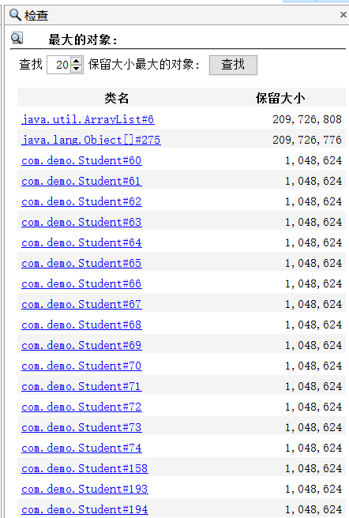
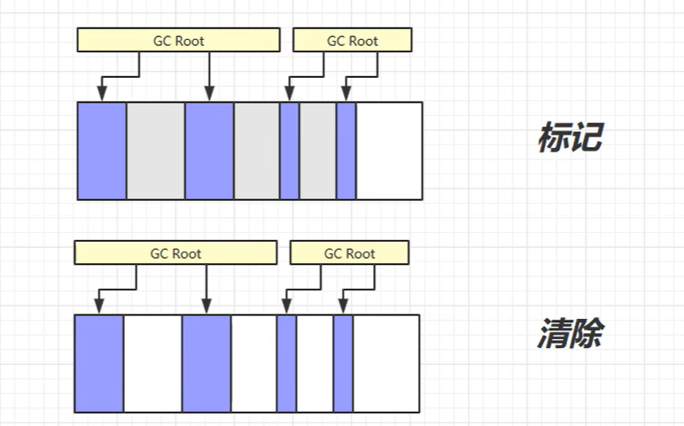
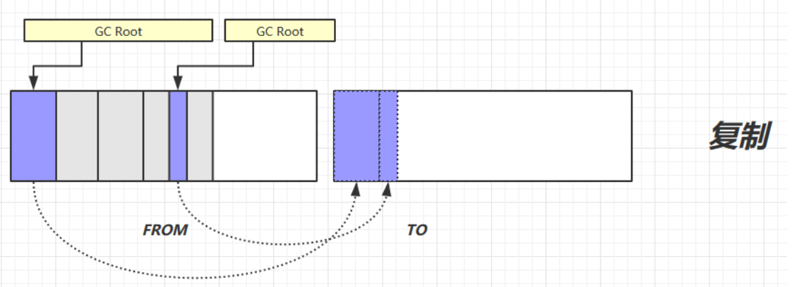
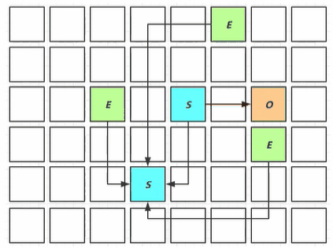
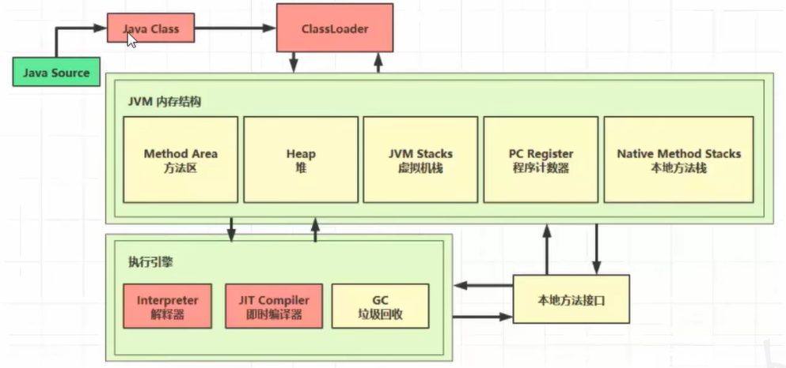
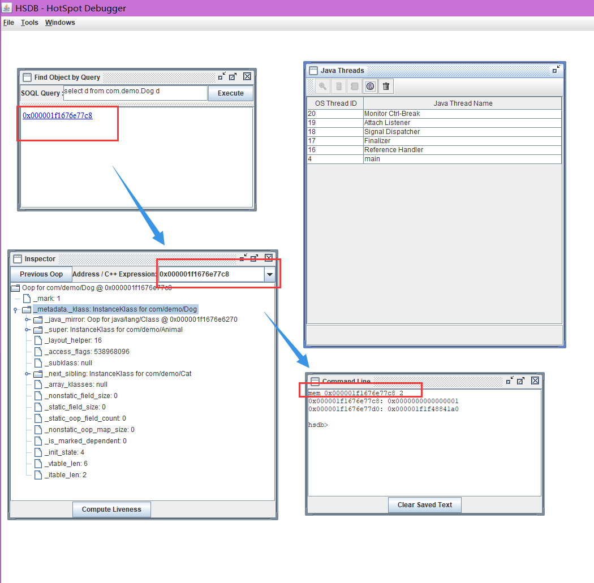

一、JVM 导学
什么是JVM?
- 定义
Java Virtual Machine– Java程序的运行环境（Java二进制字节码的运行环境）
- 好处
- 一次编译，到处运行
- 自动内存管理，垃圾回收功能
- 数组下表越界检查
- 多态
- 比较JVM、JRE、JDK
学习JVM有什么用？
面试- 理解底层实现原理
- 中高级程序员的必备技能
常见的JVM
JVM 在 Java 中是如何工作的
- JVM主要分为三个子系统
- 类加载器（ClassLoader）
- JVM运行时数据区（内存结构）
- 执行引擎
类加载器系统
- Java 的动态类加载功能由类加载器子系统处理。它在运行时第一次引用一个类时加载、链接和初始化该类，而不是在编译时。
- 它执行三个主要功能
- 加载
- 链接
- 初始化
加载
- 该组件将加载类。
- BootStrap ClassLoader、Extension ClassLoader、Application ClassLoader 是三个有助于实现它的类加载器。
BootStrap ClassLoader启动类加载器是所有其他类加载器的parent（rt.jar包下的类）Extension ClassLoader扩展类加载器加载核心 Java 类的扩展类（ext/*.jar包下的类）Application ClassLoader应用类加载器加载在classpath中的我们自己写的文件
连接
- 这部分要做三件事
- 验证（Verify）
- 验证被加载的类的准确性，保证安全，不被恶意修改
- 有四种验证方式，文件格式验证，元数据验证，字节码验证，符号引用验证
- 准备（Prepare）
- 为类变量分配内存并且设置该类变量的默认初始值，也就是零值，即在准备阶段，类的变量都会是默认值，只有到了初始化阶段（initization），才会赋值
- 如果用final修饰的static变量，那么在这个阶段，就会显示初始化，因为final在编译的时候就分配了空间和值
- 解析（Resolve）
- 将常量池内的符号引用转换为直接引用的过程
- 解析伴随着初始化执行完之后再执行
- 验证（Verify）
初始化
- 这是类加载的最后阶段，这里所有的静态变量 都将被赋予原始值并执行静态块。
JVM内存结构
方法区（Method Area）：所有类级别的数据都将存储在这里，包括 静态变量。方法区是每个 JVM 一个，它是一种共享资源。堆（Heap Area）：所有的Objects及其对应的实例变量 和数组都将存储在这里。堆区也是每个 JVM 一个，因为方法区和堆区为多个线程共享内存，存储的数据不是线程安全的。虚拟机栈（Stack Area）
栈帧：对于每个线程，都会创建一个单独的运行时堆栈。对于每个方法调用，都会在堆栈内存中创建一个条目，称为
Stack Frame。所有局部变量都将在堆栈内存中创建。堆栈区域是线程安全的，因为它不是共享资源。
：JIT 编译器抵消了解释器的缺点（一个方法调用多次，每次都需要解释），执行引擎将使用解释器的帮助进行转换，但当它发现重复代码时，它使用 JIT 编译器编译整个字节码并将其更改为本机代码。此本机代码将直接用于提高系统性能的重复方法调用。 1. 中间代码生成器：生成中间代码 2. 代码优化器：负责优化上面生成的中间代码 3. 目标代码生成器：负责生成机器代码/本机代码 4. Profiler：Profiler是一个特殊的组件，它负责发现热点（即）用于识别方法是否被多次调用。分为三个子实体如下 1. `局部变量数组`：与方法有关，涉及多少个局部变量，相应的值将存储在这里。 2. `操作数栈`：如果需要执行任何中间操作，操作数栈充当运行时工作空间来执行操作。 3. `帧数据`：所有与方法对应的符号都存储在这里。在任何异常的情况下，catch块信息将在帧数据中维护。 4. `程序计数器（PC Registers）`：每个线程都有独立的程序计数器，用于保存当前执行指令的地址 ，一旦指令执行，程序计数器将被下一条指令更新 5. `本地方法栈（Native Method stacks）`：保存本地方法信息。对于每个线程，将创建单独的本地方法堆栈。 ### 执行引擎 - 分配给运行时数据区的字节码将由执行引擎执行。执行引擎读取字节码并逐一执行。 1. `解释器`：读取字节码，解释并逐一执行。解释器解释字节码的速度更快，但执行速度较慢。解释器的缺点是当一个方法调用多次时，每次都需要解释。 2. ``` JIT 编译器垃圾收集器：垃圾收集器是执行引擎的一部分，它收集/删除未引用的对象。可以通过调用
System.gc()来触发垃圾收集，但不能保证执行。JVM 的垃圾收集器只收集那些由new关键字创建的对象。因此，如果您创建了任何没有使用new的对象，您可以使用finalize方法来执行清理。
Java Native Interface（JNI）：JNI将与本机方法库交互，并提供执行引擎所需的本机库。
本地方法库：这是执行引擎所需的本地库的集合。
二、JVM 内存结构
1. 程序计数器

1.1 定义
- JVM中的程序计数器(Program Counter Register)是一块较小的内存空间，它用来保存当前线程下一条要执行的指令的地址。每个线程都有自己独立的程序计数器，它是线程私有的，生命周期与线程相同。程序计数器是JVM中的一种轻量级的内存区域，因为它不会发生内存溢出（OutOfMemoryError）的情况。
- 程序计数器的作用在于线程切换后能够恢复到正确的执行位置，也就是下一条需要执行的指令地址。
- 因为在Java虚拟机的多线程环境下，为了支持线程切换后能够恢复到正确的执行位置，每个线程都需要有一个独立的程序计数器，否则就会出现线程切换后执行位置混乱的问题。
- 程序计数器也是唯一一个在Java虚拟机规范中没有规定任何
OutOfMemoryError（内存溢出）情况的区域。因为程序计数器是线程私有的，所以它所占用的内存空间非常小，一般不会导致内存溢出的问题。 - 程序计数器是JVM中的一种非常重要的内存区域，它是实现Java虚拟机字节码解释器的必要组成部分。
PLAINTEXT
二进制字节码（JVM指令） // Java源代码
0: getstatic #20 // PrintStream out = System.out;
3: astore_1 // --
4: aload_1 // out.println(1);
5: iconst_1 // --
6: invokevirtual #26 // --
9: aload_1 // out.println(2);
10: iconst_2 // --
11: invokevirtual #26 // --
14: aload_1 // out.println(3);
15: iconst_3 // --
16: invokevirtual #26 // --
19: aload_1 // out.println(4);
20: iconst_4 // --
21: invokevirtual #26 // --
24: aload_1 // out.println(5);
25: iconst_5 // --
26: invokevirtual #26 // --
29: return- Java源代码首先编译成二进制字节码，然后交由解释器解释成机器码，最终由CPU执行机器码
- 程序计数器在其中的作用就是记住下一条JVM指令的执行地址，解释器从程序计数器取到下一条指令地址
1.2 小结
- 程序计数器
- 作用：保存当前线程下一条要执行的指令的地址
- 特点：
- 线程私有
- 不存在内存溢出
2. 虚拟机栈
2.1 定义
- Java虚拟机栈（Java Virtual Machine Stacks）是Java虚拟机为每个线程分配的一块内存区域，用于存储线程的方法调用和局部变量等信息。
- 每个线程在运行时都有自己的Java虚拟机栈，线程开始时会创建一个新的栈帧（Stack Frame），用于存储该线程的方法调用信息。当方法调用完成后，该栈帧会被弹出，回到上一次方法调用的位置。每个线程只能有一个活动栈帧，对应着当前正在执行的那个方法。
小结
- Java虚拟机栈
- 每个线程运行是所需的内存，就称为虚拟机栈
- 每个栈由多个栈帧（Frame）组成，对应着每次方法调用时占用的内存
- 每个线程只能有一个活动栈帧，对应着当前正在执行的那个方法
演示
- 我们编写两个简单的方法，在method1中调用method2，然后断点调试，调试窗口的左边就是虚拟机栈
public static void main(String[] args) {
method1();
}
private static void method1() {
method2(1, 2);
}
private static int method2(int a, int b) {
return a + b;
}- 在第二行打断点，然后F7步入，当我们第一次步入的时候，method1会入栈
- 由于我们在method1中调用了method2，所以再次步入时，method2也会入栈，如下图
- 当我们点击步出时，method2执行完毕，释放内存，出栈，返回上一次方法调用的位置，即method1
- 再次步出，method1执行完毕，释放内存，出栈
- 再次步出，main方法执行完毕
问题辨析
Q:垃圾回收是否涉及栈内存？A:垃圾回收通常不涉及栈内存。栈内存是在程序运行时自动分配和释放的，因此不需要垃圾回收来处理。相反，垃圾回收主要关注堆内存中的对象，以及这些对象是否还在被引用。垃圾回收器通常会扫描堆内存中的对象，并标记哪些对象仍然被引用，哪些对象可以被清理。Q:栈内存分配越大越好吗？A:栈内存的分配大小应该根据实际需要来确定。栈内存的分配是由操作系统负责的
- Linux/x64（64 位）：1024 KB
- macOS（64 位）：1024 KB
- Oracle Solaris/x64（64 位）：1024 KB
- Windows：默认值取决于虚拟内存
当然我们也可以手动设置线程堆栈大小为1024kb
-Xss1m
-Xss1024k
-Xss1048576栈内存划的越大，会让线程数变少，因为物理内存大小是一定的
- 一个线程用1M，物理内存500M，理论上可以支持500个线程同时运行（但实际还需要一定数量的堆内存和其他系统资源，实际到不了500个线程）
- 但如果一个线程设置2M，那么只有250个线程
栈内存划分大了，通常只是能够进行更多次的方法递归调用，而不会增强运行效率，反而会使线程数量变少，一般采用系统默认的栈内存就好
Q:方法内的局部变量是否线程安全？A:方法内的局部变量通常是线程安全的，因为它们==只能在方法内部访问==。每个线程都有自己的栈帧，栈帧包含方法的参数、局部变量和返回值等信息，因此不同的线程可以在不相互干扰的情况下同时访问相同的方法。
public class MyThread extends Thread {
@Override
public void run() {
method();
}
static void method() {
int x = 0;
for (int i = 0; i < 5000; i++) {
x++;
}
System.out.println(x);
}
public static void main(String[] args) {
MyThread thread1 = new MyThread();
MyThread thread2 = new MyThread();
MyThread thread3 = new MyThread();
thread1.start();
thread2.start();
thread3.start();
}
}- 上述代码中，我是用三个线程执行method方法，最终的值都会是5000
- 但如果此时的x是静态变量，那么结果就大不相同了，最终结果都会大于5000
- 因为static变量是多个线程共享的，它如果不加安全保护的话，就会产生线程安全问题
- 另外，如果方法内局部变量没有逃离方法的作用范围，那么它是线程安全的。如果局部变量引用了对象，并且逃离了方法的作用范围，需要考虑线程安全
- 例如这里的m2方法就不是线程安全的，因为StringBuilder对象是我们外部传入的，主线程和新线程都在修改StringBuilder对象，此时StringBuilder对象就不再是线程私有的，而是多个线程共享的一个对象
- 这里的m3方法也不是线程安全的，因为m3方法将StringBuilder对象返回了，其他线程就可以拿到这个StringBuilder对象进行修改
- 不过这里的m1方法是线程安全的
public class Demo_01 {
public static void main(String[] args) {
StringBuilder sb = new StringBuilder();
sb.append(4);
sb.append(5);
sb.append(6);
new Thread(() -> {
m2(sb);
}).start();
}
public static void m1() {
StringBuilder sb = new StringBuilder();
sb.append(1);
sb.append(2);
sb.append(3);
System.out.println(sb.toString());
}
public static void m2(StringBuilder sb) {
sb.append(1);
sb.append(2);
sb.append(3);
System.out.println(sb);
}
public static StringBuilder m3() {
StringBuilder sb = new StringBuilder();
sb.append(1);
sb.append(2);
sb.append(3);
return sb;
}
}2.2 栈内存溢出
栈内存溢出有两种情况
栈帧过多导致栈内存溢出
- 死循环递归
public class Demo { static int count = 0; public static void main(String[] args) { try { method(); } catch (Throwable e) { e.printStackTrace(); System.out.println(count); } } private static void method() { count++; method(); } }- 最终输出的count为
23568，也就是此时递归了23568次就内存溢出了 - 还记得前面可以修改栈内存吗，现在我们将栈内存设置的小一些，再次执行此方法，只递归了
3929次
栈帧过大导致栈内存溢出
- 下面这个例子中，Emp中引入了Dept，而Dept中又引入了Emp，他们现在在循环引用，导致json解析时会出现StackOverFlow
import java.util.Arrays; import java.util.List; import com.fasterxml.jackson.annotation.JsonIgnore; import com.fasterxml.jackson.core.JsonProcessingException; import com.fasterxml.jackson.databind.ObjectMapper; public class Demo_03 { public static void main(String[] args) throws JsonProcessingException { Dept d = new Dept(); d.setName("Market"); Emp e1 = new Emp(); e1.setName("zhang"); e1.setDept(d); Emp e2 = new Emp(); e2.setName("li"); e2.setDept(d); d.setEmps(Arrays.asList(e1, e2)); // { name: 'Market', emps: [{ name:'zhang', dept:{ name:'', emps: [ {}]} },] } ObjectMapper mapper = new ObjectMapper(); System.out.println(mapper.writeValueAsString(d)); } } class Emp { private String name; // @JsonIgnore private Dept dept; public String getName() { return name; } public void setName(String name) { this.name = name; } public Dept getDept() { return dept; } public void setDept(Dept dept) { this.dept = dept; } } class Dept { private String name; private List<Emp> emps; public String getName() { return name; } public void setName(String name) { this.name = name; } public List<Emp> getEmps() { return emps; } public void setEmps(List<Emp> emps) { this.emps = emps; } }- 需要导的依赖
XML <dependency> <groupId>com.fasterxml.jackson.core</groupId> <artifactId>jackson-core</artifactId> <version>2.14.1</version> </dependency> <dependency> <groupId>com.fasterxml.jackson.core</groupId> <artifactId>jackson-databind</artifactId> <version>2.14.1</version> </dependency> <dependency> <groupId>com.fasterxml.jackson.core</groupId> <artifactId>jackson-annotations</artifactId> <version>2.14.1</version> </dependency>- 此时就需要我们手动打破这种循环关系，解决方案就是使用
@JsonIgnore注解来忽略序列化中的循环引用

2.3 线程运行诊断
案例1： cpu 占用过多
定位
- 用top定位哪个进程对cpu的占用过高
ps H -eo pid,tid,%cpu | grep 进程id（用ps命令进一步定位是哪个线程引起的cpu占用过高）- jstack 进程id
- 可以根据线程id 找到有问题的线程，进一步定位到问题代码的源码行号
案例2：程序运行很长时间没有结果
死锁问题
3. 本地方法栈
本地方法栈，我们先来理解一下什么叫 本地方法
本地方法是指由非Java语言编写的代码，如C或C++，并被编译为本地二进制代码。
因为
JAVA没法直接和操作系统底层交互，所以需要用到本地方法栈来调用本地的C或C++的方法例如Object类的源码中就有本地方法，用
native关键字修饰本地方法- 本地方法只有函数声明，没有函数体，因为函数体是C或C++写的，通常是通过JNI（Java Native Interface）技术来实现的。
/**
* Wakes up a single thread that is waiting on this object's
* monitor. If any threads are waiting on this object, one of them
* is chosen to be awakened. The choice is arbitrary and occurs at
* the discretion of the implementation. A thread waits on an object's
* monitor by calling one of the {@code wait} methods.
* <p>
* The awakened thread will not be able to proceed until the current
* thread relinquishes the lock on this object. The awakened thread will
* compete in the usual manner with any other threads that might be
* actively competing to synchronize on this object; for example, the
* awakened thread enjoys no reliable privilege or disadvantage in being
* the next thread to lock this object.
* <p>
* This method should only be called by a thread that is the owner
* of this object's monitor. A thread becomes the owner of the
* object's monitor in one of three ways:
* <ul>
* <li>By executing a synchronized instance method of that object.
* <li>By executing the body of a {@code synchronized} statement
* that synchronizes on the object.
* <li>For objects of type {@code Class,} by executing a
* synchronized static method of that class.
* </ul>
* <p>
* Only one thread at a time can own an object's monitor.
*
* @throws IllegalMonitorStateException if the current thread is not
* the owner of this object's monitor.
* @see java.lang.Object#notifyAll()
* @see java.lang.Object#wait()
*/
public final native void notify();
/**
* Wakes up all threads that are waiting on this object's monitor. A
* thread waits on an object's monitor by calling one of the
* {@code wait} methods.
* <p>
* The awakened threads will not be able to proceed until the current
* thread relinquishes the lock on this object. The awakened threads
* will compete in the usual manner with any other threads that might
* be actively competing to synchronize on this object; for example,
* the awakened threads enjoy no reliable privilege or disadvantage in
* being the next thread to lock this object.
* <p>
* This method should only be called by a thread that is the owner
* of this object's monitor. See the {@code notify} method for a
* description of the ways in which a thread can become the owner of
* a monitor.
*
* @throws IllegalMonitorStateException if the current thread is not
* the owner of this object's monitor.
* @see java.lang.Object#notify()
* @see java.lang.Object#wait()
*/
public final native void notifyAll();
/**
* Causes the current thread to wait until either another thread invokes the
* {@link java.lang.Object#notify()} method or the
* {@link java.lang.Object#notifyAll()} method for this object, or a
* specified amount of time has elapsed.
* <p>
* The current thread must own this object's monitor.
* <p>
* This method causes the current thread (call it <var>T</var>) to
* place itself in the wait set for this object and then to relinquish
* any and all synchronization claims on this object. Thread <var>T</var>
* becomes disabled for thread scheduling purposes and lies dormant
* until one of four things happens:
* <ul>
* <li>Some other thread invokes the {@code notify} method for this
* object and thread <var>T</var> happens to be arbitrarily chosen as
* the thread to be awakened.
* <li>Some other thread invokes the {@code notifyAll} method for this
* object.
* <li>Some other thread {@linkplain Thread#interrupt() interrupts}
* thread <var>T</var>.
* <li>The specified amount of real time has elapsed, more or less. If
* {@code timeout} is zero, however, then real time is not taken into
* consideration and the thread simply waits until notified.
* </ul>
* The thread <var>T</var> is then removed from the wait set for this
* object and re-enabled for thread scheduling. It then competes in the
* usual manner with other threads for the right to synchronize on the
* object; once it has gained control of the object, all its
* synchronization claims on the object are restored to the status quo
* ante - that is, to the situation as of the time that the {@code wait}
* method was invoked. Thread <var>T</var> then returns from the
* invocation of the {@code wait} method. Thus, on return from the
* {@code wait} method, the synchronization state of the object and of
* thread {@code T} is exactly as it was when the {@code wait} method
* was invoked.
* <p>
* A thread can also wake up without being notified, interrupted, or
* timing out, a so-called <i>spurious wakeup</i>. While this will rarely
* occur in practice, applications must guard against it by testing for
* the condition that should have caused the thread to be awakened, and
* continuing to wait if the condition is not satisfied. In other words,
* waits should always occur in loops, like this one:
* <pre>
* synchronized (obj) {
* while (<condition does not hold>)
* obj.wait(timeout);
* ... // Perform action appropriate to condition
* }
* </pre>
* (For more information on this topic, see Section 3.2.3 in Doug Lea's
* "Concurrent Programming in Java (Second Edition)" (Addison-Wesley,
* 2000), or Item 50 in Joshua Bloch's "Effective Java Programming
* Language Guide" (Addison-Wesley, 2001).
*
* <p>If the current thread is {@linkplain java.lang.Thread#interrupt()
* interrupted} by any thread before or while it is waiting, then an
* {@code InterruptedException} is thrown. This exception is not
* thrown until the lock status of this object has been restored as
* described above.
*
* <p>
* Note that the {@code wait} method, as it places the current thread
* into the wait set for this object, unlocks only this object; any
* other objects on which the current thread may be synchronized remain
* locked while the thread waits.
* <p>
* This method should only be called by a thread that is the owner
* of this object's monitor. See the {@code notify} method for a
* description of the ways in which a thread can become the owner of
* a monitor.
*
* @param timeout the maximum time to wait in milliseconds.
* @throws IllegalArgumentException if the value of timeout is
* negative.
* @throws IllegalMonitorStateException if the current thread is not
* the owner of the object's monitor.
* @throws InterruptedException if any thread interrupted the
* current thread before or while the current thread
* was waiting for a notification. The <i>interrupted
* status</i> of the current thread is cleared when
* this exception is thrown.
* @see java.lang.Object#notify()
* @see java.lang.Object#notifyAll()
*/
public final native void wait(long timeout) throws InterruptedException;4. 堆
定义
- JVM的堆（Heap）是Java虚拟机（JVM）在内存中用来存放对象的区域，是Java程序中最大的一块内存区域。JVM的堆被所有线程共享，在JVM启动时就已经被创建，并且一直存在于JVM的整个生命周期中。
- ==堆可以被分成两部分：新生代（Young Generation）和老年代（Old Generation）。新生代又被进一步分为Eden空间、幸存区From空间和幸存区To空间==。
- 新生代是用来存放新创建的对象的，其中大部分对象都很快就会被垃圾回收掉。当堆空间不足时，JVM会触发垃圾回收机制（GC），对新生代的对象进行清理。清理过程一般是将存活的对象移到老年代或幸存区，而其余的对象则被回收。
- 老年代是用来存放生命周期较长的对象的，这些对象一般是从新生代晋升而来，或者是本身就比较大的对象。老年代的对象存活时间较长，因此垃圾回收的频率比新生代低得多。
- JVM堆的大小可以通过启动JVM时的参数进行调整，如-Xms和-Xmx参数分别控制堆的初始大小和最大大小。如果应用程序需要创建大量的对象，而堆空间不足，则会抛出OutOfMemoryError异常。
小结
- Heap堆
- 通过new关键字创建的对象都会使用堆空间
- 特点
- 它是线程共享的，堆空间内的对象都需要考虑线程安全的问题
- 有垃圾回收机制
堆内存溢出
- 用下面的代码举个例子
import java.util.ArrayList;
/**
* 演示堆内存溢出：java.lang.OutOfMemoryError: Java heap space
*/
public class Demo_04 {
public static void main(String[] args) {
int i = 0;
try {
ArrayList<String> list = new ArrayList<>(); //Hello, HelloHello, HelloHelloHelloHello ···
String a = "Hello";
while (true) {
list.add(a);
a = a + a; // HelloHelloHelloHello
i++;
}
} catch (Throwable e) {
e.printStackTrace();
System.out.println(i);
}
}
}- list对象的作用域是在try块中，list对象是通过new出来的，所以占用的是堆空间。
- 由于a的字符串长度是指数增长的，所以堆空间很快就会不足，此时会触发垃圾回收机制，尝试清理新生代对象，但由于list对象一直处于存活状态，无法释放，最终导致堆内存溢出，最终我这里输出的i为
27 - 但是由于堆空间很大，所以有些堆内存溢出的情况可能不是很容易能诊断出来，所以我们可以通过添加JVM参数，将堆空间修改的小一些来进行测试，此时最终输出的i为
17

堆内存诊断
jps工具
- 查看当前系统中有哪些Java进程
jmap工具
- 查看堆内存占用情况
jmap -heap 进程id ## 进程id就是jps查出来的进程jconsole工具
- 图形化界面的多功能监测工具，可以连续监测
- 案例代码如下
/**
* 演示堆内存
*/
public class Demo_05 {
public static void main(String[] args) throws InterruptedException {
System.out.println("1...");
// 1. 在休眠期间查询当前新生代内存占用情况
Thread.sleep(30000);
byte[] array = new byte[1024 * 1024 * 10]; // 10 Mb
System.out.println("2...");
// 2. 由于这里new了一个10M大小的数组，所以新生代内存占用情况应该比上一次多10M左右
Thread.sleep(20000);
// 3. 这里将数组置空，并进行垃圾回收，此时数组占用的10M就会呗回收掉，内存占用应该比2少
array = null;
System.gc();
System.out.println("3...");
Thread.sleep(1000000L);
}
}对应的诊断指令及结果
- 查询到目标进程id为17756
$ jps 18640 Jps 5592 RemoteMavenServer36 8008 Launcher 17756 Demo_05 2124- 当控制台输出 “1…”后，查询当前堆内存占用情况
$ jmap -heap 18188 Heap Usage: PS Young Generation Eden Space: capacity = 100663296 (96.0MB) used = 8053144 (7.680076599121094MB) ## 主要看这个，这个是新生代内存占用，当前为7.6M free = 92610152 (88.3199234008789MB) 8.000079790751139% used- 当控制台输出 “2…”后，再次查看当前堆内存占用情况
$ jmap -heap 18188 Heap Usage: PS Young Generation Eden Space: capacity = 100663296 (96.0MB) used = 18538920 (17.680091857910156MB) ## new了一个10M大小的数组，当前内存占用17.6M，符合我们的预期 free = 82124376 (78.31990814208984MB) 18.416762351989746% used- 当控制台输出 “3…”后，再次查看当前堆内存占用情况
$ jmap -heap 18188 Heap Usage: PS Young Generation Eden Space: capacity = 100663296 (96.0MB) used = 2013288 (1.9200210571289062MB) ## 进行垃圾回收，占用内存比上一步少 free = 98650008 (94.0799789428711MB) 2.0000219345092773% used
下面使用jconsole进行测试
案例
- 垃圾回收后，内存占用仍然很高
- 先根据前面
新生代和老年代的定义来推测一下可能是什么原因 - 垃圾回收主要回收的是新生代对象，同时将存活的新生代对象移到老年代的空间
- 那么原因可能就是新生代对象一直存活，导致垃圾回收的时候回收不了多少内存，同时这些存活的新生代转为老年代
- 先根据前面
下面使用jvisualvm进行诊断

- 可以看到有一个集合占了200M左右，那我们继续查找最大的对象
- 诊断结果中是有200个student对象在占用内存
- 再来看看代码是否真的跟我们想的一样，students集合要等main方法执行完毕后才能释放，而下面休眠了1000000秒，就导致students无法被回收

import java.util.ArrayList;
import java.util.List;
/**
* 演示查看对象个数 堆转储 dump
*/
public class Demo_06 {
public static void main(String[] args) throws InterruptedException {
List<Student> students = new ArrayList<>();
for (int i = 0; i < 200; i++) {
students.add(new Student());
}
Thread.sleep(1000000000L);
}
}- 真实场景中的业务逻辑会比这个复杂，但是诊断方式都是相通的
5. 方法区（元空间）
定义
- 在JVM中，方法区是一块用于存储类信息、常量、静态变量、即时编译器编译后的代码等数据的内存区域，它是Java虚拟机规范中的一个概念。
Java SE 7及之前版本中，方法区被称为永久代，但在Java SE 8之后的版本中，永久代被废弃了，被元空间所替代。 - 元空间是JVM在
Java SE 8之后引入的一个新的概念，它与永久代类似，都是用于存储类信息、常量、静态变量、即时编译器编译后的代码等数据的内存区域，但元空间的实现方式与永久代有所不同。 - 与永久代不同的是，元空间使用的是
本地内存（Native Memory），而不是虚拟机内存（堆内存），这样就避免了OutOfMemoryError错误，因为在使用本地内存时，可以动态地调整大小，而且可以使用操作系统的虚拟内存机制，使得Java应用程序不会被限制在固定的内存大小中。 - 此外，元空间还引入了一些新的概念和机制，例如MetaspaceSize、MaxMetaspaceSize、CompressedClassSpaceSize等，这些概念和机制都是为了更好地管理元空间的内存使用和性能。
方法区内存溢出
- 1.8之前会导致永久代内存溢出
- 1.8之后会导致元空间内存溢出，测试代码如下
import jdk.internal.org.objectweb.asm.ClassWriter;
import jdk.internal.org.objectweb.asm.Opcodes;
/**
* 演示元空间内存溢出 java.lang.OutOfMemoryError: Metaspace
* -XX:MaxMetaspaceSize=50m
*/
public class Demo_07 extends ClassLoader { // 类加载器可以用来加载类的二进制字节码
public static void main(String[] args) {
int j = 0;
try {
Demo_07 test = new Demo_07();
for (int i = 0; i < 100000; i++, j++) {
// ClassWriter 作用是生成类的二进制字节码
ClassWriter cw = new ClassWriter(0);
// 版本号， public， 类名, 包名, 父类， 接口
cw.visit(Opcodes.V1_8, Opcodes.ACC_PUBLIC, "Class" + i, null, "java/lang/Object", null);
// 返回 byte[]
byte[] code = cw.toByteArray();
// 执行了类的加载
test.defineClass("Class" + i, code, 0, code.length); // Class 对象
}
} finally {
System.out.println(j);
}
}
}- 添加VM参数
-XX:MaxMetaspaceSize=50m，然后运行上面的代码，结果如下
70801
Exception in thread "main" java.lang.OutOfMemoryError: Metaspace
at java.lang.ClassLoader.defineClass1(Native Method)
at java.lang.ClassLoader.defineClass(ClassLoader.java:756)
at java.lang.ClassLoader.defineClass(ClassLoader.java:635)
at com.demo.Demo_07.main(Demo_07.java:23)运行时常量池
- 常量池就是一行表，虚拟机指令根据这张常量表找到要执行的类名、方法名、参数类型、字面量等信息
- 运行时常量池是方法区的一部分
- 我们先来编写一个简单的HelloWorld类
public class HelloWorld {
public static void main(String[] args) {
System.out.println("Hello, World!");
}
}- 然后通过命令将编译后的.class文件反汇编成可读的Java代码
$ javap -v D:/Workspace/JVM/demo/target/classes/com/demo/HelloWorld.class
Classfile /D:/Workspace/JVM/demo/target/classes/com/demo/HelloWorld.class
Last modified 2023-3-30; size 553 bytes
MD5 checksum a920c142d5bb891e2b9fc1ff43b55128
Compiled from "HelloWorld.java"
public class com.demo.HelloWorld
minor version: 0
major version: 52
flags: ACC_PUBLIC, ACC_SUPER
Constant pool:
#1 = Methodref #6.#20 // java/lang/Object."<init>":()V
#2 = Fieldref #21.#22 // java/lang/System.out:Ljava/io/PrintStream;
#3 = String #23 // Hello, World!
#4 = Methodref #24.#25 // java/io/PrintStream.println:(Ljava/lang/String;)V
#5 = Class #26 // com/demo/HelloWorld
#6 = Class #27 // java/lang/Object
#7 = Utf8 <init>
#8 = Utf8 ()V
#9 = Utf8 Code
#10 = Utf8 LineNumberTable
#11 = Utf8 LocalVariableTable
#12 = Utf8 this
#13 = Utf8 Lcom/demo/HelloWorld;
#14 = Utf8 main
#15 = Utf8 ([Ljava/lang/String;)V
#16 = Utf8 args
#17 = Utf8 [Ljava/lang/String;
#18 = Utf8 SourceFile
#19 = Utf8 HelloWorld.java
#20 = NameAndType #7:#8 // "<init>":()V
#21 = Class #28 // java/lang/System
#22 = NameAndType #29:#30 // out:Ljava/io/PrintStream;
#23 = Utf8 Hello, World!
#24 = Class #31 // java/io/PrintStream
#25 = NameAndType #32:#33 // println:(Ljava/lang/String;)V
#26 = Utf8 com/demo/HelloWorld
#27 = Utf8 java/lang/Object
#28 = Utf8 java/lang/System
#29 = Utf8 out
#30 = Utf8 Ljava/io/PrintStream;
#31 = Utf8 java/io/PrintStream
#32 = Utf8 println
#33 = Utf8 (Ljava/lang/String;)V
{
public com.demo.HelloWorld();
descriptor: ()V
flags: ACC_PUBLIC
Code:
stack=1, locals=1, args_size=1
0: aload_0
1: invokespecial #1 // Method java/lang/Object."<init>":()V
4: return
LineNumberTable:
line 3: 0
LocalVariableTable:
Start Length Slot Name Signature
0 5 0 this Lcom/demo/HelloWorld;
public static void main(java.lang.String[]);
descriptor: ([Ljava/lang/String;)V
flags: ACC_PUBLIC, ACC_STATIC
Code:
stack=2, locals=1, args_size=1
0: getstatic #2 // Field java/lang/System.out:Ljava/io/PrintStream;
3: ldc #3 // String Hello, World!
5: invokevirtual #4 // Method java/io/PrintStream.println:(Ljava/lang/String;)V
8: return
LineNumberTable:
line 5: 0
line 6: 8
LocalVariableTable:
Start Length Slot Name Signature
0 9 0 args [Ljava/lang/String;
}
SourceFile: "HelloWorld.java"上面的结果中主要包含三部分
类的基本信息
常量池
类方法定义
常量池是 *.class 文件中的
Constant pool中的内容而运行时常量池是当该类被加载时，将常量池信息放入运行时常量池，并把里面的符号地址(#2、#3)变为内存地址
StringTable
字符串拼接
我们反编译一下这段代码，看看常量池里都有什么
public class Demo_08 { // 常量池中的信息，都会被加载到运行时常量池中，此时a、b、ab都是常量池中的符号，还没有变成java对象 public static void main(String[] args) { String s1 = "a"; String s2 = "b"; String s3 = "ab"; } }结果如下（只截取了我们需要的东西）
Constant pool: #1 = Methodref #6.#24 // java/lang/Object."<init>":()V #2 = String #25 // a #3 = String #26 // b #4 = String #27 // ab #5 = Class #28 // com/demo/Demo_08 public static void main(java.lang.String[]); descriptor: ([Ljava/lang/String;)V flags: ACC_PUBLIC, ACC_STATIC Code: stack=1, locals=4, args_size=1 0: ldc #2 // String a 2: astore_1 3: ldc #3 // String b 5: astore_2 6: ldc #4 // String ab 8: astore_3 9: return LineNumberTable: line 5: 0 line 6: 3 line 7: 6 line 8: 9 LocalVariableTable: Start Length Slot Name Signature 0 10 0 args [Ljava/lang/String; 3 7 1 s1 Ljava/lang/String; 6 4 2 s2 Ljava/lang/String; 9 1 3 s3 Ljava/lang/String;ldc #2会把a符号变成”a”字符串对象ldc #3会把a符号变成”b”字符串对象ldc #4会把a符号变成”ab”字符串对象
下面添加两行代码，变成一道经典面试题，输出结果是true还是false呢？
public class Demo_08 {
public static void main(String[] args) {
String s1 = "a";
String s2 = "b";
String s3 = "ab";
String s4 = s1 + s2;
System.out.println(s3 == s4);
}
}- 答案我先不说，我们还是先反编译一下这段代码，结果如下
public static void main(java.lang.String[]);
descriptor: ([Ljava/lang/String;)V
flags: ACC_PUBLIC, ACC_STATIC
Code:
stack=3, locals=5, args_size=1
0: ldc #2 // String a
2: astore_1
3: ldc #3 // String b
5: astore_2
6: ldc #4 // String ab
8: astore_3
9: new #5 // class java/lang/StringBuilder
12: dup
13: invokespecial #6 // Method java/lang/StringBuilder."<init>":()V
16: aload_1
17: invokevirtual #7 // Method java/lang/StringBuilder.append:(Ljava/lang/String;)Ljava/lang/StringBuilder;
20: aload_2
21: invokevirtual #7 // Method java/lang/StringBuilder.append:(Ljava/lang/String;)Ljava/lang/StringBuilder;
24: invokevirtual #8 // Method java/lang/StringBuilder.toString:()Ljava/lang/String;
27: astore 4
29: getstatic #9 // Field java/lang/System.out:Ljava/io/PrintStream;
32: aload_3
33: aload 4通过反编译的结果，我们来分析一下s4对象是如何被创建的
9: new #5 // class java/lang/StringBuilder 12: dup 13: invokespecial #6 // Method java/lang/StringBuilder."<init>":()V 16: aload_1 17: invokevirtual #7 // Method java/lang/StringBuilder.append:(Ljava/lang/String;)Ljava/lang/StringBuilder; 20: aload_2 21: invokevirtual #7 // Method java/lang/StringBuilder.append:(Ljava/lang/String;)Ljava/lang/StringBuilder; 24: invokevirtual #8 // Method java/lang/StringBuilder.toString:()Ljava/lang/String;#5、#6：调用StringBuilder的无参构造方法，创建对象#7：调用StringBuilder的append方法，加载参数为aload_1和aload_2，即a、b#8：调用StringBuilder的toString方法
总结一下，s4对象的创建方法如下
String s4 = new StringBuilder.append("a").append("b").toString();- 那么s4对象是new出来的对象，存放在堆空间里，而s3对象是存在于常量池中的，故
s3 == s4的结果为false
- 再来试试常量拼接的结果如何
public class Demo_08 {
public static void main(String[] args) {
String s1 = "a";
String s2 = "b";
String s3 = "ab";
String s4 = s1 + s2;
System.out.println(s3 == s4);
String s5 = "a" + "b";
System.out.println(s3 == s5);
}
}- 反编译结果如下，可以看到s5对象的创建，就是去常量池中直接获取ab，而不会创建新的字符串对象，故
s3 == s5的结果是true
public static void main(java.lang.String[]);
descriptor: ([Ljava/lang/String;)V
flags: ACC_PUBLIC, ACC_STATIC
Code:
stack=3, locals=6, args_size=1
0: ldc #2 // String a
2: astore_1
3: ldc #3 // String b
5: astore_2
6: ldc #4 // String ab
8: astore_3
9: new #5 // class java/lang/StringBuilder
12: dup
13: invokespecial #6 // Method java/lang/StringBuilder."<init>":()V
16: aload_1
17: invokevirtual #7 // Method java/lang/StringBuilder.append:(Ljava/lang/String;)Ljava/lang/StringBuilder;
20: aload_2
21: invokevirtual #7 // Method java/lang/StringBuilder.append:(Ljava/lang/String;)Ljava/lang/StringBuilder;
24: invokevirtual #8 // Method java/lang/StringBuilder.toString:()Ljava/lang/String;
27: astore 4
29: ldc #4 // String ab
31: astore 5- 那s5对象为什么是直接从常量池中获取的呢？
- 这是javac在编译期的优化，因为s5是由两个常量拼接而成，常量拼接的结果是确定的，那么在编译期间就能确定结果肯定是
"ab" - 而s4是由s1、s2两个变量拼接而成的，变量在运行的时候，引用的值可能被修改，那么结果就不能确定，所以只能在运行期间，使用StringBuilder来动态的拼接
- 这是javac在编译期的优化，因为s5是由两个常量拼接而成，常量拼接的结果是确定的，那么在编译期间就能确定结果肯定是
字符串延迟加载
- 每遇到一个没见过的字符串对象，才会将其放入常量池，如果池子中已经有了，则不会新增对象
- 使用下面的代码单步调试来验证一下
public class Demo_09 {
public static void main(String[] args) {
System.out.println(); // 字符串个数：2224
System.out.println("0"); // 每步入到下一行，字符串个数 +1
System.out.println("1");
System.out.println("2");
System.out.println("3");
System.out.println("4");
System.out.println("5");
System.out.println("6");
System.out.println("7");
System.out.println("8");
System.out.println("9");
System.out.println(); // 字符串个数：2235
System.out.println("0");
System.out.println("1"); // 字符串个数保持2235不在变化
System.out.println("2");
System.out.println("3");
System.out.println("4");
System.out.println("5");
System.out.println("6");
System.out.println("7");
System.out.println("8");
System.out.println("9");
}
}
StringTable特性
常量池中的字符串仅是符号，第一次用到时才会变为对象
利用串池的机制，避免重复创建字符串对象
字符串变量拼接的原理是StringBuilder（1.8）
字符串常量拼接的原理是编译期优化
可以使用intern方法，主动将串池中还没有的字符串对象放入串池
- 1.8中，将这个字符串对象尝试放入串池
- 如果串池中已有，则不会放入
- 如果串池中没有，则放入串池，并将串池中的结果返回
- 下面是示例代码讲解
public class Demo_10 { public static void main(String[] args) { String s1 = "a"; // 常量池：["a"] String s2 = "b"; // 常量池：["a", "b"] String s3 = "a" + "b"; // 常量池：["a", "b", "ab"] String s4 = s1 + s2; // 堆：new String("ab") String s5 = "ab"; // s5引用常量池中已有的对象 String s6 = s4.intern(); // 常量池中已有"ab"，将常量池中的"ab"的引用返回，s6引用常量池中已有的对象 System.out.println(s3 == s4); // s3在常量池，s4在堆，false System.out.println(s3 == s5); // s3在常量池，s5在常量池，true System.out.println(s3 == s6); // s3在常量池，s6在常量池，true String str1 = "cd"; // 常量池：["cd"] String str2 = new String("c") + new String("d"); // 堆：new String("cd") str2.intern(); // 常量池中已有"cd"，放入失败 System.out.println(str1 == str2); // str1在常量池，str2在堆，false String str4 = new String("e") + new String("f"); // 堆：new String("ef") str4.intern(); // 常量池中没有"ef"，放入成功，并返回常量池"ef"的引用 String str3 = "ef"; // 常量池：["ef"] System.out.println(str3 == str4); // str4是常量池的引用，str3也是常量池的引用，true } }- 1.8中，将这个字符串对象尝试放入串池
StringTable的位置
- 在
JDK 1.6中，字符串常量池（也就是 StringTable）是位于永久代中的。而在JDK 1.8中，永久代已经被移除，取而代之的是元空间（Metaspace），而字符串常量池也随之移动到了堆中。这意味着在 JDK 1.8 中，字符串常量池中的字符串也可以被垃圾回收器回收，而在 JDK 1.6 中则不行。
StringTable垃圾回收
- 在 Java 8 及更高版本中，字符串常量池位于堆中，而堆是 JVM 中的一部分，因此字符串常量池中的字符串可以被垃圾回收器回收。具体来说，只有当字符串没有被任何对象引用时，它才能被垃圾回收。当字符串被回收时，它的存储空间将被释放并可以被重新利用。
- 下面我们通过示例代码来验证一下，首先先添加几个VM参数
- -Xmx10m：指定堆内存大小
- -XX:+PrintStringTableStatistics：打印字符串常量池信息
- -XX:+PrintGCDetails：打印垃圾回收详细信息
- -verbose:gc：打印 gc 的次数，耗费时间等信息
public class Demo_11 {
public static void main(String[] args) {
int i = 0;
try {
} catch (Throwable e) {
e.printStackTrace();
} finally {
System.out.println(i);
}
}
}- 打印的日志信息如下
Heap
PSYoungGen total 2560K, used 2007K [0x00000000ffd00000, 0x0000000100000000, 0x0000000100000000)
eden space 2048K, 98% used [0x00000000ffd00000,0x00000000ffef5d50,0x00000000fff00000)
from space 512K, 0% used [0x00000000fff80000,0x00000000fff80000,0x0000000100000000)
to space 512K, 0% used [0x00000000fff00000,0x00000000fff00000,0x00000000fff80000)
ParOldGen total 7168K, used 0K [0x00000000ff600000, 0x00000000ffd00000, 0x00000000ffd00000)
object space 7168K, 0% used [0x00000000ff600000,0x00000000ff600000,0x00000000ffd00000)
Metaspace used 3256K, capacity 4496K, committed 4864K, reserved 1056768K
class space used 356K, capacity 388K, committed 512K, reserved 1048576K
SymbolTable statistics:
Number of buckets : 20011 = 160088 bytes, avg 8.000
Number of entries : 13446 = 322704 bytes, avg 24.000
Number of literals : 13446 = 574288 bytes, avg 42.711
Total footprint : = 1057080 bytes
Average bucket size : 0.672
Variance of bucket size : 0.677
Std. dev. of bucket size: 0.823
Maximum bucket size : 6
StringTable statistics:
Number of buckets : 60013 = 480104 bytes, avg 8.000
Number of entries : 1760 = 42240 bytes, avg 24.000
Number of literals : 1760 = 157872 bytes, avg 89.700
Total footprint : = 680216 bytes
Average bucket size : 0.029
Variance of bucket size : 0.030
Std. dev. of bucket size: 0.172
Maximum bucket size : 3由于在上面的代码中，我们没有创建字符串常量，所以没有触发垃圾回收机制，我们重点只关注 StringTable statistics 中的内容
- 这是字符串常量池的统计信息，包含以下三个方面的信息
- Number of buckets: 字符串常量池中的桶(bucket)数量。在这个例子中，共有60013个桶。
- Number of entries: 字符串常量池中的实际条目(entry)数量。在这个例子中，共有1760个条目。
- Number of literals: 字符串常量池中存储的字面量(literal)数量。在这个例子中，共有1760个字面量。
- 这是字符串常量池的统计信息，包含以下三个方面的信息
StringTable statistics:
Number of buckets : 60013 = 480104 bytes, avg 8.000
Number of entries : 1760 = 42240 bytes, avg 24.000
Number of literals : 1760 = 157872 bytes, avg 89.700- 那现在我们什么都没做，字符串常量池中有1760个字符串常量，那我现在尝试将5W个字符串存入常量池中
public class Demo_11 {
public static void main(String[] args) {
int i = 0;
try {
for (int j = 0; j < 50000; j++) {
String.valueOf(j).intern();
i++;
}
} catch (Throwable e) {
e.printStackTrace();
} finally {
System.out.println(i);
}
}
}- 运行，观察日志，可以看到，触发了垃圾回收机制，且串池中的数量也远小于5W个，所以StringTable确实是会发生垃圾回收的
[GC (Allocation Failure) [PSYoungGen: 2536K->488K(2560K)] 2833K->865K(9728K), 0.0011680 secs] [Times: user=0.00 sys=0.00, real=0.00 secs]
StringTable statistics:
Number of buckets : 60013 = 480104 bytes, avg 8.000
Number of entries : 13299 = 319176 bytes, avg 24.000
Number of literals : 13299 = 804392 bytes, avg 60.485StringTable性能调优1
在JVM内部，字符串常量池就是通过哈希表实现的。
- 添加VM参数-XX:StringTableSize=1024，实际上设置的是哈希表的大小（即桶的数量）。==较小的哈希表意味着更多的哈希冲突==。这会==增加查找字符串的开销==，因为需要在链表中进行顺序搜索才能找到一个字符串。因此，这将会导致字符串查找速度变慢。
- 示例代码如下
import java.io.BufferedReader; import java.io.FileInputStream; import java.io.IOException; import java.io.InputStreamReader; /** * 演示串池大小对性能的影响，读取文件，将内容存入字符串常量池，文件中约有48W个不同的字符串 * -XX:StringTableSize=50000 耗时0.318s * -XX:StringTableSize=10000 耗时1.098s */ public class Demo_12 { public static void main(String[] args) throws IOException { try (BufferedReader reader = new BufferedReader(new InputStreamReader(new FileInputStream("D:\\Workspace\\JVM\\demo\\linux.words"), "utf-8"))) { String line = null; long start = System.nanoTime(); while (true) { line = reader.readLine(); if (line == null) { break; } line.intern(); } System.out.println("cost:" + (System.nanoTime() - start) / 1000000); } } }- 添加VM参数-XX:StringTableSize=50000，耗时0.318s
添加VM参数-XX:StringTableSize=10000，耗时1.098s
StringTable性能调优2
如果应用需要存储大量字符串常量信息，而且这些字符串常量包含大量重复内容，可以使用Java中的字符串常量池机制，通过调用intern()方法将常量放入常量池中，以节省内存空间并提高性能。
实际应用：
- 根据推特的工程师们所说，推特在存储用户地址信息时采用了字符串常量池的方法。推特上有大量的用户地址信息，而这些信息中有大量的重复内容，如街道名称、城市、州等。通过将这些常见的地址信息存储在字符串常量池中，推特可以节省大量的内存空间。
- 推特使用了Guava库中的Interners工具类来实现字符串常量池。该工具类提供了线程安全的字符串常量池实现，支持不同的策略和配置，例如并发级别、最大容量等。推特选择了使用一个全局的、不限容量的字符串常量池来存储用户地址信息。在存储用户信息时，推特使用了String.intern()方法来将地址信息存储在字符串常量池中，而不是直接使用新的字符串对象。这样，推特可以确保相同的地址信息只会在内存中存在一份拷贝，从而减少内存的占用。
- 通过这种方法，推特成功地实现了在存储大量用户信息时，有效地减少了内存占用。
那我们现在来复现一个类似的场景，存储大量重复的字符串常量信息，然后使用Java VisualVM监测内存使用情况，示例代码如下
- 每循环一次就有48W个字符串，循环十次就是480W个字符串放到内存中
public class Demo_13 { public static void main(String[] args) throws IOException { ArrayList<String> list = new ArrayList<>(); System.in.read(); for (int i = 0; i < 10; i++) { try (BufferedReader reader = new BufferedReader(new InputStreamReader(new FileInputStream("D:\\Workspace\\JVM\\demo\\linux.words"), "utf-8"))) { String line = null; long start = System.nanoTime(); while (true) { line = reader.readLine(); if (line == null) { break; } // 没有入池 list.add(line); } System.out.println("cost:" + (System.nanoTime() - start) / 1000000); } } } }- 监测内存String和char[]加起来大概占用了250M
- 那现在我们将字符串入池，再来监测一下内存占用情况
public class Demo_13 { public static void main(String[] args) throws IOException { ArrayList<String> list = new ArrayList<>(); System.in.read(); for (int i = 0; i < 10; i++) { try (BufferedReader reader = new BufferedReader(new InputStreamReader(new FileInputStream("D:\\Workspace\\JVM\\demo\\linux.words"), "utf-8"))) { String line = null; long start = System.nanoTime(); while (true) { line = reader.readLine(); if (line == null) { break; } // 入池 list.add(line.intern()); } System.out.println("cost:" + (System.nanoTime() - start) / 1000000); } } } }- 内存占用情况如下，这下仅仅才占用50M内存


小结：如果我们需要存储大量字符串常量信息，而且这些字符串常量包含大量重复内容，可以使用Java中的字符串常量池机制，通过调用intern()方法将常量放入常量池中，以节省内存空间并提高性能。
6. 直接内存
定义
- JVM的直接内存是指JVM中的一个内存区域，也被称为NIO直接缓冲区。和Java堆不同，直接内存并不是由JVM自动管理的，而是由操作系统直接管理的。直接内存的访问速度比Java堆要快，因为它们可以利用操作系统提供的一些优化机制来提高I/O的效率。
- 在Java程序中，可以通过ByteBuffer.allocateDirect()方法来创建直接缓冲区。当调用该方法创建直接缓冲区时，JVM会向操作系统申请一块直接内存，用于存储该缓冲区的数据。这个过程不会像在Java堆中创建对象一样，需要进行垃圾回收和堆内存分配的操作，因此创建直接缓冲区的效率要高于在Java堆中创建对象。
- 需要注意的是，直接内存是不受JVM的内存管理机制控制的，因此如果使用不当，可能会导致内存泄漏等问题。此外，因为直接内存的访问速度快，但申请和释放直接内存的开销较大，因此需要谨慎使用，避免频繁创建和销毁直接缓冲区。
小结
- Direct Memory
- 常见于NIO操作时，用于数据缓冲区
- 分配回收成本较高，但读写性能高
- 不受JVM内存回收管理
比较示例
- 那这里比较一下传统IO和直接内存对文件拷贝的性能差异（这里建议准备一个比较大的视频文件）
import java.io.FileInputStream;
import java.io.FileOutputStream;
import java.io.IOException;
import java.nio.ByteBuffer;
import java.nio.channels.FileChannel;
/**
* 演示 ByteBuffer 作用
*/
public class Demo_14 {
static final String FROM = "D:\\BaiduNetdiskDownload\\星际牛仔.mp4";
static final String TO = "D:\\星际牛仔.mp4";
static final int _1Mb = 1024 * 1024;
public static void main(String[] args) {
io();
directBuffer();
}
private static void directBuffer() {
long start = System.nanoTime();
try (FileChannel from = new FileInputStream(FROM).getChannel();
FileChannel to = new FileOutputStream(TO).getChannel();
) {
ByteBuffer bb = ByteBuffer.allocateDirect(_1Mb);
while (true) {
int len = from.read(bb);
if (len == -1) {
break;
}
bb.flip();
to.write(bb);
bb.clear();
}
} catch (IOException e) {
e.printStackTrace();
}
long end = System.nanoTime();
System.out.println("directBuffer 用时：" + (end - start) / 1000_000.0);
}
private static void io() {
long start = System.nanoTime();
try (FileInputStream from = new FileInputStream(FROM);
FileOutputStream to = new FileOutputStream(TO);
) {
byte[] buf = new byte[_1Mb];
while (true) {
int len = from.read(buf);
if (len == -1) {
break;
}
to.write(buf, 0, len);
}
} catch (IOException e) {
e.printStackTrace();
}
long end = System.nanoTime();
System.out.println("io 用时：" + (end - start) / 1000_000.0);
}
}- 最终结果如下，可以发现，使用直接内存比传统IO快了一倍多
APACHE
io 用时：2248.1023
directBuffer 用时：1097.9701- 原因是直接内存使用的是操作系统的文件映射机制，而传统IO则需要将文件内容读取到内存中再进行操作。直接内存可以避免将文件数据复制到Java堆内存中的过程，减少了不必要的数据复制，从而提高了效率。
- 传统IO，将文件读取到系统缓冲区中，但是Java代码不能直接读取系统缓冲区，所以需要在堆内存中分配一块Java缓冲区，将数据从系统缓冲区读取到Java缓冲区后，才能进行写操作
- 直接内存的Direct Memory对Java堆内存和系统内存是共享的一块内存区，那么磁盘文件就可以直接读取到Direct Memory，而Java堆内存也可以直接访问Direct Memory
- 传统IO，将文件读取到系统缓冲区中，但是Java代码不能直接读取系统缓冲区，所以需要在堆内存中分配一块Java缓冲区，将数据从系统缓冲区读取到Java缓冲区后，才能进行写操作
直接内存溢出
- 直接内存（Direct Memory）是一种Java NIO中用于高性能I/O操作的内存分配方式，与Java虚拟机中的Java堆不同，它不会受到Java堆大小的限制。直接内存是通过操作系统的内存来分配和释放，因此它不会受到Java堆大小限制的影响，可以更加灵活地使用。
- 然而，如果过度使用直接内存，也可能会导致直接内存溢出。直接内存的使用需要手动进行管理，如果不注意及时释放已经使用的直接内存，或者申请过多的直接内存，就会导致直接内存溢出。
- 当直接内存溢出时，通常会抛出java.lang.OutOfMemoryError异常。为了避免直接内存溢出，建议在使用完直接内存后及时进行释放
- 下面是一段示例代码
import java.nio.ByteBuffer;
import java.util.ArrayList;
import java.util.List;
/**
* 演示直接内存溢出
*/
public class Demo1_10 {
static int _100Mb = 1024 * 1024 * 100;
public static void main(String[] args) {
List<ByteBuffer> list = new ArrayList<>();
int i = 0;
try {
while (true) {
ByteBuffer byteBuffer = ByteBuffer.allocateDirect(_100Mb);
list.add(byteBuffer);
i++;
}
} finally {
System.out.println(i);
}
}
}- 循环了54次就内存溢出了，差不多是5.4G
54
Exception in thread "main" java.lang.OutOfMemoryError: Direct buffer memory
at java.nio.Bits.reserveMemory(Bits.java:695)
at java.nio.DirectByteBuffer.<init>(DirectByteBuffer.java:123)
at java.nio.ByteBuffer.allocateDirect(ByteBuffer.java:311)
at com.demo.Demo_15.main(Demo_15.java:18)分配和回收原理
前面说直接内存不受JVM的管理，所以垃圾回收gc()对直接内存无效，那么直接内存是如何分配和回收的呢？
- 来看一下我们的示例代码
import java.nio.ByteBuffer; public class Demo_16 { static int _1GB = 1024 * 1024 * 1024; public static void main(String[] args) { ByteBuffer byteBuffer = ByteBuffer.allocateDirect(_1GB); System.out.println("分配完毕"); byteBuffer = null; System.gc(); System.out.println("释放完毕"); } }- 因为是直接内存，所以我们想查看它的使用情况，可以单步调试，直接在Windows的任务管理器中查看
- 分配内存前的内存使用情况
- 分配内存完毕后的使用情况
- 执行垃圾回收后的使用情况
- 分配内存前的内存使用情况
在我们的单步调试中，执行了垃圾回收后，
直接内存被释放了，这显然与我们之前所说的冲突啊，这是怎么回事呢？先别急，我们先来了解一下直接内存应该是怎样被释放的，Java里有一个非常底层的类
Unsafe，它可以分配直接内存和释放直接内存，但是一般不建议我们直接使用Unsafe类，都是JDK内部自己去使用这个类的。那现在为了演示直接内存的分配释放的流程，我们通过反射来获取一个Unsafe对象，然后来进行操作讲解
import sun.misc.Unsafe; import java.io.IOException; import java.lang.reflect.Field; /** * 直接内存分配的底层原理：Unsafe */ public class Demo_17 { static int _1Gb = 1024 * 1024 * 1024; public static void main(String[] args) throws IOException { Unsafe unsafe = getUnsafe(); long base = unsafe.allocateMemory(_1Gb); unsafe.setMemory(base, _1Gb, (byte) 0); System.out.println("分配内存"); unsafe.freeMemory(base); System.out.println("释放内存"); } /** * 反射获取Unsafe对象 * @return Unsafe对象 */ public static Unsafe getUnsafe() { try { Field f = Unsafe.class.getDeclaredField("theUnsafe"); f.setAccessible(true); Unsafe unsafe = (Unsafe) f.get(null); return unsafe; } catch (NoSuchFieldException | IllegalAccessException e) { throw new RuntimeException(e); } } }- 分配内存前的内存使用情况
- 分配内存完毕后的使用情况

- 执行垃圾回收后的使用情况

- 分配内存前的内存使用情况
所以对于直接内存需要使用
Unsafe对象完成直接内存的分配回收，并且回收需要主动调用freeMemory方法现在我们来看一下ByteBuffer.allocateDirect()的底层实现是什么
/**
* Allocates a new direct byte buffer.
*
* <p> The new buffer's position will be zero, its limit will be its
* capacity, its mark will be undefined, and each of its elements will be
* initialized to zero. Whether or not it has a
* {@link #hasArray backing array} is unspecified.
*
* @param capacity
* The new buffer's capacity, in bytes
*
* @return The new byte buffer
*
* @throws IllegalArgumentException
* If the <tt>capacity</tt> is a negative integer
*/
public static ByteBuffer allocateDirect(int capacity) {
return new DirectByteBuffer(capacity);
}- 顺藤摸瓜找到
DirectByteBuffer对象的源码
// Primary constructor
//
DirectByteBuffer(int cap) { // package-private
super(-1, 0, cap, cap);
boolean pa = VM.isDirectMemoryPageAligned();
int ps = Bits.pageSize();
long size = Math.max(1L, (long)cap + (pa ? ps : 0));
Bits.reserveMemory(size, cap);
long base = 0;
try {
base = unsafe.allocateMemory(size);
} catch (OutOfMemoryError x) {
Bits.unreserveMemory(size, cap);
throw x;
}
unsafe.setMemory(base, size, (byte) 0);
if (pa && (base % ps != 0)) {
// Round up to page boundary
address = base + ps - (base & (ps - 1));
} else {
address = base;
}
cleaner = Cleaner.create(this, new Deallocator(base, size, cap));
att = null;
}从底层源码中我们可以看到，这里就是使用Unsafe对象对直接内存的分配，但是却没有看到回收方法 freeMemory
- 其实释放的方法是在Deallocator()这个回调方法中
private static class Deallocator implements Runnable { private static Unsafe unsafe = Unsafe.getUnsafe(); private long address; private long size; private int capacity; private Deallocator(long address, long size, int capacity) { assert (address != 0); this.address = address; this.size = size; this.capacity = capacity; } public void run() { if (address == 0) { // Paranoia return; } unsafe.freeMemory(address); address = 0; Bits.unreserveMemory(size, capacity); } }- 而它是由Cleaner调用的， Cleaner（虚引用类型）是用来监测
ByteBuffer对象的，一旦ByteBuffer对象被垃圾回收，那么就会由ReferenceHandler线程通过Cleaner的clean方法调用freeMemory来释放直接内存
public void clean() { if (remove(this)) { try { this.thunk.run(); } catch (final Throwable var2) { AccessController.doPrivileged(new PrivilegedAction<Void>() { public Void run() { if (System.err != null) { (new Error("Cleaner terminated abnormally", var2)).printStackTrace(); } System.exit(1); return null; } }); } } }
禁用垃圾回收对直接内存的影响
- 由于垃圾回收是一个相对昂贵的操作，需要消耗CPU时间和系统资源。频繁调用System.gc()可能会导致性能下降，并且在某些情况下可能会造成应用程序的不稳定性。
- 所以为了避免有些程序员老是手动调用垃圾回收，我们一般会禁用显式手动垃圾回收，添加VM参数
-XX:+DisableExplicitGC禁用显式的垃圾回收 - 那么加上这个参数以后，可能就会影响到我们的直接内存的回收机制，例如下面的代码中，执行完System.gc()后（被禁用，相当于没执行），由于内存很充裕，所以ByteBuffer对象并不会被回收，那么ByteBuffer对象对应的那块直接内存，也不会被回收
public class Demo_16 {
static int _1GB = 1024 * 1024 * 1024;
public static void main(String[] args) {
ByteBuffer byteBuffer = ByteBuffer.allocateDirect(_1GB);
System.out.println("分配完毕");
byteBuffer = null;
System.gc();
System.out.println("释放完毕");
}
}- 单步调试，观察直接内存占用情况，执行垃圾回收后，直接内存没有被释放，那么此时我们就只能通过Unsafe的freeMemory()方法来手动释放直接内存了


三、JVM 垃圾回收
1. 如何判断对象可以回收
1.1 引用计数法
- 当一个对象被引用是，就当引用对象的值
+1，当引用对象的值为0时，则说明该对象没有被引用，那么就可以被垃圾回收器回收 - 这个引用计数法听起来很不错，而且实现起来也非常的简单，可是它有一个弊端，如下图所示，当两个对象循环引用时，两个对象的计数都未1，就导致这两个对象都无法被释放
1.2 可达性分析算法
JVM垃圾回收机制的可达性分析算法，是一种基于引用的垃圾回收算法。其基本思想是通过一系列被称为”GC Roots”的根对象作为起点，寻找所有被根对象直接或间接引用的对象，将这些对象称为”可达对象”，而没有被找到的对象则被视为”不可达对象”，需要被回收。
形象一点理解就是我有一串葡萄，我把这串葡萄拿起来，连在根上的葡萄就是可达对象，而掉在盘子里的葡萄就是不可达对象，需要被回收
在JVM中，有四种类型的GC Roots对象：
虚拟机栈中引用的对象：虚拟机栈是用于存储方法调用和执行的栈空间。当一个方法被调用时，会在栈中创建一个栈帧，用于存储该方法的局部变量、参数和返回值等信息。如果栈帧中包含对某个对象的引用，那么这个对象就被视为GC Roots对象。方法区中类静态属性引用的对象：方法区是用于存储类信息、常量池、静态变量等信息的内存区域。当一个类被加载到方法区时，其中的静态属性会被分配在方法区中，如果这些静态属性中包含对某个对象的引用，那么这个对象就被视为GC Roots对象。方法区中常量引用的对象：常量池是方法区的一部分，用于存储常量。如果常量池中包含对某个对象的引用，那么这个对象就被视为GC Roots对象。本地方法栈中JNI引用的对象：JNI是Java Native Interface的缩写，用于在Java程序中调用本地方法（即由C或C++等语言编写的方法）。当本地方法被调用时，会在本地方法栈中创建一个栈帧，如果该栈帧中包含对某个对象的引用，那么这个对象就被视为GC Roots对象。
可达性分析算法基于这些GC Roots对象，通过遍历所有的引用链，找到所有可达对象，将它们标记为存活对象，而没有被找到的对象则被视为不可达对象，需要被回收。
可达性分析算法的主要优点是可以处理复杂的引用结构，例如循环引用、交叉引用等情况，能够识别出所有可达对象，从而准确地进行垃圾回收。但是，它也有一些缺点，例如需要耗费较多的时间进行垃圾回收、可能会出现漏标和误标等问题。为了解决这些问题，JVM中还采用了其他的垃圾回收算法，如标记-清除算法、复制算法、标记-整理算法等，以提高垃圾回收的效率和准确性。
1.3 引用类型
在Java中，对象不仅可以被正常引用，还可以被特殊的引用类型引用。这些引用类型决定了垃圾回收器如何对对象进行回收。
JVM中共有五种引用类型，它们分别是
强引用（Strong Reference）：是最常见的引用类型，也是默认的引用类型。如果一个对象具有强引用，那么即使内存空间不足，垃圾回收器也不会回收它。只有当该对象的所有强引用都失效时，对象才会被回收软引用（Soft Reference）：是一种比强引用弱一些的引用类型。如果一个对象只具有软引用，那么当内存空间不足时，垃圾回收器可能会回收它。软引用通常用于实现内存敏感的缓存- 可以配合引用队列来释放软引用自身
弱引用（Weak Reference）：是一种比软引用更弱一些的引用类型。如果一个对象只具有弱引用，那么垃圾回收器在下一次运行时，无论内存空间是否足够，都会回收该对象。若引用通常用于实现在对象可用时进行操作的场景- 可以配合引用队列来释放软引用自身
虚引用（Phantom Reference）：是最弱的一种引用类型。如果一个对象只具有虚引用，那么在任何时候都可能被垃圾回收器回收。虚引用通常用于追踪对象被垃圾回收的状态- 必须配合引用队列使用，主要配合 ByteBuffer 使用，被引用对象回收时，会将虚引用入队，由 Reference Handler 线程调用虚引用相关方法释放直接内存
终结器引用（Final Reference）：是一种特殊的弱引用类型，它只在对象被回收时被添加到引用队列中。当垃圾回收器准备回收一个对象时，会先执行对象的finallize()方法，如果finalize()方法中没有重新让对象与其他对象建立联系，那么这个对象就会被回收，并且它的Final引用会被加入到引用队列中。Final引用通常用于对象回收后的清理工作
软引用、弱引用和虚引用则是用于管理一些比较特殊的对象。使用引用队列可以方便地跟踪这些特殊对象的垃圾回收状态，帮助我们及时释放对象占用的资源。
使用引用队列来管理这些特殊对象的方式是，在创建这些对象时，同时指定一个引用队列。当垃圾回收器回收这些对象时，会自动将其添加到与之关联的引用队列中。我们可以在某个时刻检查引用队列中是否有特殊对象，并对其进行处理，比如将其从相应的数据结构中删除，以便释放特殊对象占用的资源。
软引用应用
- 前面说软引用通常用于实现内存敏感的缓存，那现在我们来演示一下
// 添加VM参数-Xmx20m
public class Demo_18 {
private static final int _4MB = 4 * 1024 * 1024;
public static void main(String[] args) throws IOException {
List<byte[]> list = new ArrayList<>();
for (int i = 0; i < 5; i++) {
list.add(new byte[_4MB]);
}
}
}- 上面的代码中，由于我们设置堆内存为20M，而代码中5次循环也需要20M的内存，所以到最后肯定会报内存溢出的错误
Exception in thread "main" java.lang.OutOfMemoryError: Java heap space
at com.demo.Demo_18.main(Demo_18.java:20)- 强引用会报堆内存错误，那我们来试试软引用，前面说软引用会在内存不足时被垃圾回收器回收，那我们额外添加两个VM参数，监测垃圾回收情况
-XX:+PrintGCDetails、-verbose:gc
import java.io.IOException;
import java.lang.ref.SoftReference;
import java.util.ArrayList;
import java.util.List;
/**
* 演示软引用
* -Xmx20m -XX:+PrintGCDetails -verbose:gc
*/
public class Demo_18 {
private static final int _4MB = 4 * 1024 * 1024;
public static void main(String[] args) throws IOException {
/* List<byte[]> list = new ArrayList<>();
for (int i = 0; i < 15; i++) {
list.add(new byte[_4MB]);
}*/
soft();
}
public static void soft() {
// list --> SoftReference --> byte[]
List<SoftReference<byte[]>> list = new ArrayList<>();
for (int i = 0; i < 5; i++) {
SoftReference<byte[]> ref = new SoftReference<>(new byte[_4MB]);
System.out.println(ref.get());
list.add(ref);
System.out.println(list.size());
}
System.out.println("循环结束：" + list.size());
for (SoftReference<byte[]> ref : list) {
System.out.println(ref.get());
}
}
}- 运行结果如下
[B@27c170f0
1
[B@5451c3a8
2
[B@2626b418
3
[GC (Allocation Failure) [PSYoungGen: 2207K->496K(6144K)] 14495K->13153K(19968K), 0.0031771 secs] [Times: user=0.00 sys=0.01, real=0.00 secs]
[B@5a07e868
4
[GC (Allocation Failure) --[PSYoungGen: 4704K->4704K(6144K)] 17362K->17378K(19968K), 0.0012234 secs] [Times: user=0.00 sys=0.00, real=0.00 secs]
[Full GC (Ergonomics) [PSYoungGen: 4704K->4500K(6144K)] [ParOldGen: 12673K->12634K(13824K)] 17378K->17135K(19968K), [Metaspace: 3361K->3361K(1056768K)], 0.0054571 secs] [Times: user=0.00 sys=0.00, real=0.01 secs]
[GC (Allocation Failure) --[PSYoungGen: 4500K->4500K(6144K)] 17135K->17167K(19968K), 0.0007514 secs] [Times: user=0.00 sys=0.00, real=0.00 secs]
[Full GC (Allocation Failure) [PSYoungGen: 4500K->0K(6144K)] [ParOldGen: 12666K->733K(8704K)] 17167K->733K(14848K), [Metaspace: 3361K->3361K(1056768K)], 0.0063756 secs] [Times: user=0.01 sys=0.00, real=0.01 secs]
[B@76ed5528
5
循环结束：5
null
null
null
null
[B@76ed5528我们来分析一下运行结果
- 前三次循环时内存充足，没有触发垃圾回收。
[B@27c170f0 1 [B@5451c3a8 2 [B@2626b418 3- 但是第四次循环时，内存已经很紧张了，所以回收了一些新生代的内存
[GC (Allocation Failure) [PSYoungGen: 2207K->496K(6144K)] 14495K->13153K(19968K), 0.0031771 secs] [Times: user=0.00 sys=0.01, real=0.00 secs] [B@5a07e868 4- 第五次循环时，一次垃圾回收后，内存空间仍然不足，然后又触发了一次垃圾回收，回收了大部分新生代和老年代的内存
[GC (Allocation Failure) --[PSYoungGen: 4704K->4704K(6144K)] 17362K->17378K(19968K), 0.0012234 secs] [Times: user=0.00 sys=0.00, real=0.00 secs] [Full GC (Ergonomics) [PSYoungGen: 4704K->4500K(6144K)] [ParOldGen: 12673K->12634K(13824K)] 17378K->17135K(19968K), [Metaspace: 3361K->3361K(1056768K)], 0.0054571 secs] [Times: user=0.00 sys=0.00, real=0.01 secs] [GC (Allocation Failure) --[PSYoungGen: 4500K->4500K(6144K)] 17135K->17167K(19968K), 0.0007514 secs] [Times: user=0.00 sys=0.00, real=0.00 secs] [Full GC (Allocation Failure) [PSYoungGen: 4500K->0K(6144K)] [ParOldGen: 12666K->733K(8704K)] 17167K->733K(14848K), [Metaspace: 3361K->3361K(1056768K)], 0.0063756 secs] [Times: user=0.01 sys=0.00, real=0.01 secs] [B@76ed5528 5- 其代价就是将前四个byte数组占据的内存释放掉了，只保留了第五次循环时的byte数组
循环结束：5 null null null null [B@76ed5528软引用在内存敏感的程序下的好处，当内存空间比较有限时，一些不重要的对象可以用软引用去管理它，当空间紧张时，就可以将它释放掉
引用队列
- 前面说软引用可以配合引用队列来释放软引用自身（即上面那四个null），用下面的代码来演示一下（其实就是上面的代码修改了一下），注意添加VM参数
-Xmx20m -XX:+PrintGCDetails -verbose:gc
import java.lang.ref.Reference;
import java.lang.ref.ReferenceQueue;
import java.lang.ref.SoftReference;
import java.util.ArrayList;
import java.util.List;
/**
* 演示软引用, 配合引用队列, VM参数：-Xmx20m -XX:+PrintGCDetails -verbose:gc
*/
public class Demo_19 {
private static final int _4MB = 4 * 1024 * 1024;
public static void main(String[] args) {
List<SoftReference<byte[]>> list = new ArrayList<>();
// 引用队列
ReferenceQueue<byte[]> queue = new ReferenceQueue<>();
for (int i = 0; i < 5; i++) {
// 关联了引用队列， 当软引用所关联的 byte[]被回收时，软引用自己会加入到 queue 中去
SoftReference<byte[]> ref = new SoftReference<>(new byte[_4MB], queue);
System.out.println(ref.get());
list.add(ref);
System.out.println(list.size());
}
// 从队列中获取无用的 软引用对象，并移除
Reference<? extends byte[]> poll = queue.poll();
while (poll != null) {
list.remove(poll);
poll = queue.poll();
}
System.out.println("============下面输出引用队列中的软引用对象============");
for (SoftReference<byte[]> reference : list) {
System.out.println(reference.get());
}
}
}- 运行上面的代码，结果如下，软引用对象只剩一个，符合我们的预期
[B@27c170f0
1
[B@5451c3a8
2
[B@2626b418
3
[GC (Allocation Failure) [PSYoungGen: 2207K->496K(6144K)] 14495K->13087K(19968K), 0.0011815 secs] [Times: user=0.00 sys=0.00, real=0.00 secs]
[B@5a07e868
4
[GC (Allocation Failure) --[PSYoungGen: 4704K->4704K(6144K)] 17296K->17352K(19968K), 0.0008897 secs] [Times: user=0.00 sys=0.00, real=0.00 secs]
[Full GC (Ergonomics) [PSYoungGen: 4704K->4549K(6144K)] [ParOldGen: 12647K->12585K(13824K)] 17352K->17135K(19968K), [Metaspace: 3359K->3359K(1056768K)], 0.0051949 secs] [Times: user=0.00 sys=0.00, real=0.01 secs]
[GC (Allocation Failure) --[PSYoungGen: 4549K->4549K(6144K)] 17135K->17183K(19968K), 0.0007508 secs] [Times: user=0.00 sys=0.00, real=0.00 secs]
[Full GC (Allocation Failure) [PSYoungGen: 4549K->0K(6144K)] [ParOldGen: 12633K->733K(8704K)] 17183K->733K(14848K), [Metaspace: 3359K->3359K(1056768K)], 0.0058980 secs] [Times: user=0.02 sys=0.00, real=0.00 secs]
[B@76ed5528
5
============下面输出引用队列中的软引用对象==============
[B@76ed5528- 但如果我们不移除队列中无用的引用对象，那么输出结果是这样的，队列中存储的null会占据存储空间，最终可能会导致内存泄漏，所以我们一定要记得手动移除队列中无用的引用对象
============下面输出引用队列中的软引用对象===========
null
null
null
null
[B@76ed55282. 垃圾回收算法
2.1 标记清除
- 标记清除是一种常见的垃圾回收算法之一，其工作原理如下：
标记阶段（Mark）：从根对象开始遍历内存中的所有对象，将所有能够被访问到的对象做上标记，表示这些对象是活动的。清除阶段（Sweep）：遍历整个内存空间，将未被标记的对象视为垃圾，将其占用的内存资源进行回收。
- 标记清除算法的优点在于它简单易用，可以快速地回收大量的垃圾对象。但是，它也存在一些缺点，例如在清除和压缩阶段中可能会产生较大的内存碎片，从而影响后续的内存分配效率。此外，标记清除算法无法处理循环引用的情况，需要借助其他算法来处理循环引用问题，例如标记-压缩算法和复制算法等。

2.2 标记整理
- 在标记整理算法中，标记和清除阶段和标记清除算法是一样的，只有在内存整理阶段不同。在整理阶段，标记整理算法会将所有存活的对象向内存的一端移动，之后将移动后的内存末尾地址作为堆的新起始地址，之前的地址空间被标记为空闲，可以用来分配新的对象。
- 需要注意的是，标记整理算法的整理阶段可能会比较耗时，因为它需要移动对象，这也是它的一个缺点。但是，由于它可以消除内存碎片，提高内存利用率，所以在需要长时间运行的应用程序中，标记整理算法通常比标记清除算法更加适用。
2.3 复制
- 复制算法是一种基于内存分区的垃圾回收算法，它将内存分成两个区域：From空间和To空间。在正常情况下，所有的对象都被分配在From空间中。当需要进行垃圾回收时，算法会扫描From空间中的所有对象，并将存活的对象复制到To空间中。复制完成后，From空间中的对象都可以被视为垃圾，并可以被回收。
- 接下来，详细介绍一下复制算法的工作原理：
内存分配：在程序运行过程中，对象的内存分配只在From空间中进行。当From空间快要用完时，算法会触发一次垃圾回收操作。扫描存活对象：在进行垃圾回收时，算法会遍历From空间中的所有对象，并标记存活的对象。为了标记存活对象，复制算法使用了一种叫做可达性分析的技术，这个技术可以判断一个对象是否是存活对象。与标记清除算法和标记整理算法不同的是，复制算法并不需要进行标记和清除的分离过程，因为复制算法是将存活对象复制到To空间中，所以只要扫描完From空间中的所有对象，并将存活对象复制到To空间中，就可以直接清除From空间了。复制存活对象：在扫描存活对象之后，算法会将所有存活对象从From空间复制到To空间。复制的过程是按照对象的存活顺序进行的，也就是说，如果对象A引用了对象B，那么对象B会被先复制到To空间中。复制完成后，To空间的使用量会变得很满，From空间的使用量则变得很少。交换空间：在复制完所有存活对象之后，From空间中剩余的对象都可以视为垃圾，并可以被回收。为了保证下一次的内存分配，To空间和From空间会进行交换，也就是说，To空间成为了新的From空间，From空间成为了新的To空间。这样一来，内存分配就可以在新的From空间中进行了。

小结
- 总结一下这三种垃圾回收算法的优缺点
标记清除：速度较快，但会产生内存碎片标记整理：速度较慢，但是不会产生内存碎片复制：不会产生内存碎片，但是需要占用双倍内存空间
3. 分代垃圾回收
JVM（Java虚拟机）的分代垃圾回收是一种优化内存回收的技术。它利用对象的生命周期来将堆（heap）分为不同的区域，然后针对不同区域的特点采用不同的垃圾回收算法。

对象首先分配在伊甸园区域
新生代空间不足时，触发
minor gc，伊甸园和from存活的对象使用copy复制到to中，存活的对象年龄+1并且交换from和tominor gc会引发Stop The World（STW），暂停其它用户的线程，等垃圾回收结束，用户线程才恢复运行
当对象寿命超过阈值（最大寿命是15）时，会晋升至老年代
- Java中的对象头中确实分配了一定的字节用来记录对象的年龄，而这个字节的位数是4，因此其二进制最大值为1111，即十进制的15
当老年代空间不足，会先尝试触发
minor gc，如果之后空间仍不足，那么触发full gc，STW的时间更长特殊情况：当存入数据过大（大于伊甸园和from存储空间）时，会直接存入老年代
一个线程的内存溢出错误不会影响另一个线程的运行
相关VM参数
| 含义 | 参数 |
|---|---|
| 堆初始大小 | -Xms |
| 堆最大大小 | -Xmx 或 -XX:MaxHeapSize=size |
| 新生代大小 | -Xmn 或 (-XX:NewSize=size + -XX:MaxNewSize=size ) |
| 幸存区比例（动态） | -XX:InitialSurvivorRatio=ratio 和 -XX:+UseAdaptiveSizePolicy |
| 幸存区比例（伊甸园） | -XX:SurvivorRatio=ratio |
| 晋升阈值 | -XX:MaxTenuringThreshold=threshold |
| 晋升详情 | -XX:+PrintTenuringDistribution |
| GC 详情 | -XX:+PrintGCDetails -verbose:gc |
| Full GC 前 Minor GC | -XX:+ScavengeBeforeFullGC |
4. 垃圾回收器
- 串行
- 单线程
- 堆内存较小，适合个人电脑
- 吞吐量优先
- 多线程
- 堆内存较大，多核CPU
- 让单位时间内，STW的时间最短 0.2 0.2 = 0.4（多食少餐）
- 响应时间优先
- 多线程
- 堆内存较大，多核CPU
- 尽可能让单次STW的时间最短 0.1 0.1 0.1 0.1 0.1 = 0.5（少食多餐）
4.1 Serial收集器（串行收集器）
- 这是最简单的垃圾回收器，它通过一个单线程进行垃圾回收，因此它的优点是简单高效，但缺点是在大型应用程序中可能会出现停顿时间过长的问题。
- 串行收集器的缺点主要是单线程执行垃圾回收操作，不能充分利用多核CPU的计算能力，同时垃圾回收操作会阻塞应用程序的运行，可能会导致长时间的停顿。因此，在大型的、多线程的应用程序中，通常不适合使用串行收集器进行垃圾回收。
- 对应的VM参数：
-XX:+UseSerialGC = Serial + SerialOld- Serial 工作在新生代，采用复制算法
- SerialOld 工作在老年代，采用标记整理算法
- 下图中，其他CPU需要等待
CPU 2执行完垃圾回收后，才能继续运行
4.2 Parallel收集器（吞吐量优先）
JDK 1.8 默认采用的就是这种垃圾回收器
它是一种基于多线程并行执行的垃圾回收器，它的主要目标是提高应用程序的吞吐量，即在单位时间内处理更多的请求。
相关VM参数
-XX:+UseParallelGC ~ -XX:+UseParallelOldGC
- 这个参数用于**自适应地调整**Java堆大小和垃圾收集器的参数，以达到更好的垃圾回收效果。当开启该参数时，JVM会自动调整Eden区、Survivor区、老年代的大小以及垃圾回收线程的数量等参数，以达到更高的垃圾回收效率。- -XX:+UseParallelGC用于开启并行垃圾回收器，-XX:+UseParallelOldGC用于开启并行老年代垃圾回收器。使用这两个参数可以**开启**Parallel收集器。 2. ``` -XX:+UseAdaptiveSizePolicy-XX:GCTimeRatio=ratio
- 这个参数用于**设置最大垃圾回收暂停时间**。默认值是200ms。如果设置该参数，JVM会尽可能地控制垃圾回收暂停的时间不超过该值。如果需要更短的垃圾回收暂停时间，则可以将该值设置为较小的数值。 - 垃圾回收暂停时间是以牺牲吞吐量和新生代空间为代价换取的：原来10秒收集一次、每次100毫秒，现在5秒收集一次、每次70毫秒。暂停时间下降，但是垃圾回收更频繁，吞吐量下降- `吞吐量 = 运行用户代码时间 /（运行用户代码时间 + 垃圾收集时间）` - 这个参数用于**设置垃圾回收所占用CPU时间和应用程序运行时间的比率**。默认值是99，表示垃圾回收时间最多可以占用1%的CPU时间，计算公式为 `1/ (1+ratio)` 4. ``` -XX:MaxGCPauseMillis=ms-XX:ParallelGCThreads=n- 这个参数用于**设置垃圾回收线程的数量**。默认值是CPU核心数的1/4。可以根据应用程序的需求和硬件环境来调整该参数的值，以达到更好的垃圾回收效果。 [](https://s1.ax1x.com/2023/04/03/pphfXnO.png) ### 4.3 CMS收集器（响应时间优先） #### 4.3.1 概述 - CMS（Concurrent Mark Sweep）是一种垃圾回收算法，它的设计目标是在最短的停顿时间内回收垃圾。它通过在一个线程中进行垃圾回收并在应用程序线程中同时运行，从而减少停顿时间。 - CMS收集器是基于**标记-清除算法**实现的 - CMS收集器是**并发收集器**（Parallel收集器是并行收集器），微观上轮流抢占CPU资源来执行。 #### 4.3.2 工作流程 - CMS垃圾收集器的工作可以分为以下几个阶段： 1. `初始标记阶段（Initial Marking）`：在这个阶段中，CMS垃圾收集器会**暂停所有应用程序线程**，并且在内存中标记出所有被==直接引用==的对象。这个过程由一个线程来完成，因此它的**停顿时间比较短**。 2. `并发标记阶段（Concurrent Marking）`：在这个阶段中，CMS垃圾收集器会在应用程序线程运行的同时标记出所有被==间接引用==的对象。这个过程由多个线程并发执行，因此它的停顿时间比较短。 3. `重新标记阶段（Remark）`：在这个阶段中，CMS垃圾收集器会暂停所有应用程序线程，并且重新标记出在并发标记阶段中有变化的对象（修正因程序继续运作而导致标记产生变动的那一部分对象）。这个过程由一个线程来完成，因此它的停顿时间比较短。 4. `并发清除阶段（Concurrent Sweeping）`：在这个阶段中，CMS垃圾收集器会在应用程序线程运行的同时清除所有标记为垃圾的对象。这个过程由多个线程并发执行，因此它的停顿时间比较短。 5. `最终标记阶段（Final Remark）`：在这个阶段中，CMS垃圾收集器会暂停所有应用程序线程，并且重新标记出在并发清除阶段中有变化的对象。这个过程由一个线程来完成，因此它的停顿时间比较短。 [](https://s1.ax1x.com/2023/04/03/pph4Ca4.png) #### 4.3.3 优缺点 - **优点** 1. 可以在最短的停顿时间内回收垃圾，不会出现长时间的停顿现象，因此适合响应时间比较敏感的应用程序。 2. 采用并发的垃圾收集方式，能够与应用程序并发执行，不会阻塞应用程序的执行，因此对于需要保证应用程序响应性能的场景非常适用。 - **缺点** 1. 对 CPU 的资源比较敏感，在高负载情况下可能会影响应用程序的性能。 - 并发阶段虽然不会导致用户线程停顿，但会因为占用一部分处理器计算能力而导致应用程序变慢，**降低总吞吐量**。 2. 无法处理**“浮动垃圾”**，可能出现并发失败而导致另一次STW的产生 - 在并发标记和并发清除阶段，用户线程继续运行，会伴随有新的垃圾对象产生，但无法在当次垃圾回收中清理。这些垃圾被称为“浮动垃圾” - 因此CMS不能等到老年代几乎被填满时在进行垃圾回收，必须**预留一部分空间**供并发收集时程序的运作使用。（见VM参数第4个的设置） - 如果没有预留充足空间，就会出现并发失败，这时会冻结用户线程执行，**临时启用SerialOld收集器**来进行老年代的垃圾回收，出现长时间停顿 3. 由于并发清除阶段无法整理内存，可能会出现**内存碎片化**的问题，导致后续垃圾回收过程需要更多的时间。 #### 4.3.4 相关VM参数 1. ``` -XX:+UseConcMarkSweepGC ~ -XX:+UseParNewGC ~ SerialOld
- 开启CMS收集器
-XX:ParallelGCThreads=n
- 指定并发垃圾回收器的线程数。默认值是处理器核心数的`1/4`。本例中为1- 指定并行垃圾回收器的线程数。默认值是处理器核心数。本例中为4 3. ``` -XX:ConcGCThreads=threads-XX:CMSInitiatingOccupancyFraction=percent
- 启用 CMS 垃圾回收器**在进行重新标记之前执行新生代的垃圾回收**。这可以减少重新标记的时间，从而减少应用程序暂停的时间。- 指定 CMS 垃圾回收器开始执行垃圾回收的阈值。当老年代空间使用达到指定百分比时，CMS 垃圾回收器会开始执行垃圾回收。 5. ``` -XX:+CMSScavengeBeforeRemark
4.4 G1 收集器
概述
G1（Garbage-First）是一种现代化的垃圾回收器，它在
JDK 7中首次引入，并在JDK 9中被标记为默认垃圾回收器。- 与之前的垃圾回收器相比，G1的最大优势在于它可以更好地处理占据大量堆内存的Java应用程序，从而避免了传统垃圾回收器在大内存情况下可能出现的停顿
适用场景：
- 同时注重吞吐量和低延迟，默认暂停目标是200ms
- 超大堆内存，会将堆划分为多个大小相等的Region
- 整体上是标记-整理算法，两个区域之间是复制算法
工作原理
G1采用了一种不同于传统垃圾回收器的回收方式，它不再坚持固定大小以及固定数量的分代区域划分，将内存划分为大小相等的多个区域（Region），每个区域的大小通常为
1MB到32MB。- G1将这些区域分为新生代和老年代，其中新生代通常占整个堆内存的5%到10%，老年代则占90%到95%。
- G1中还有一类特殊的Humongous区域，用来存储大对象，作为老年代的一部分来看
G1将堆内存划分为多个区域后，将单个Region作为单次回收的最小单元，可以有计划地避免全区域FULL GC带来的长时间停顿。
- 具体来说，G1收集器会跟踪每个Region里面垃圾堆积的“价值大小”，即回收所获得的空间大小和回收所需时间的经验值，然后在后台维护一个优先级列表。优先处理回收价值收益最大的那些Region
相关参数
JDK8 并不是默认开启的，所需要参数开启
-XX:+UseG1GC
-XX:G1HeapRegionSize=size
-XX:MaxGCPauseMillis=time垃圾回收阶段
（周志明版）G1的垃圾回收流程如下
初始标记（Initial Mark）：G1在此阶段会扫描堆内存中的根对象，并标记所有的根对象，以便后续回收时可以快速定位到这些根对象。在整个过程中，应用程序需要停顿，但耗时较短并发标记（Concurrent Mark）：在此阶段，G1会与应用程序并发的执行，扫描堆内存中的所有存活对象，并标记这些对象。在整个过程中，耗时较长，但应用程序可以继续执行。最终标记（Remark）：在并发标记结束后，G1需要在一个短暂的停顿期间重新扫描堆内存，以便确定所有的存活对象已经被标记筛选回收（Cleanup）：在确定标记阶段结束后，G1会对未标记的区域进行优先级构成回收集，然后把决定回收的那一部分Region的存活对象复制到空的Region中，再清理掉整个旧的Region的全部空间。这个过程涉及存活对象移动，必须暂停用户线程。
在G1垃圾回收器中，垃圾回收的过程可以分为三种阶段：
Young Collection：对新生代垃圾收集Young Collection + Concurrent Mark：如果老年代内存到达一定的阈值了，新生代垃圾收集同时会执行一些并发的标记。Mixed Collection：会对新生代 + 老年代 + 幸存区等进行混合收集，然后收集结束，会重新进入新生代收集。
下面我们分别介绍一下这三种垃圾回收阶段和特点：
Young Collection（新生代垃圾回收）Young Collection是指对新生代（Young Generation）的垃圾回收。
先将新的对象加入伊甸园（E）
在新生代垃圾回收期间（会产生STW），G1垃圾回收器会扫描新生代内的所有对象，并标记那些被引用的对象。然后，它会将未被引用的对象回收掉，并将被引用的对象移动到下一个垃圾回收周期的幸存区（S）中。
幸存区对象多或者超过一定年龄，就晋升至老年区（O）

Young Collection + Concurrent Mark（年轻代垃圾回收 + 并发标记）Mixed Collection（混合垃圾回收）
Full GC
G1 在老年代内存不足时（老年代所占内存超过阈值）：
- 如果垃圾产生速度慢于垃圾回收速度，不会触发 Full GC，还是并发地进行清理
- 如果垃圾产生速度快于垃圾回收速度，便会触发 Full GC，然后退化成 serial Old 收集器串行的收集，就会导致停顿的时候长。（和CMS一样）
新生代跨代引用
- 当进行新生代垃圾回收时，需要找到新生代对象的根对象来确定哪些对象是存活的，那些对象需要被回收。然而根对象中可能有一部分存活在老年代中，如果每次都要遍历老年代来查找这些根对象，将会导致效率低下
- 为了解决这个问题，G1垃圾回收器采用了一种卡表技术，将老年代划分为多个区域，并将每个区域划分为一组成为
卡的块。每个卡的大小约为512KB，如果老年代中的一个对象引用了新生代中的对象，那么该卡就被标记为脏卡 - 在新生代对象引用发生变化时，使用写屏障和dirty card queue技术来更新卡表，将引用变更信息添加到Remembered Set中，标记为脏卡
- 在进行新生代垃圾回收时，只需要扫描这些脏卡中的对象，即可找到所有的跨代引用对象，避免了对整个老年代进行遍历的开销，提高了垃圾回收的效率。
重新标记阶段
- 在G1垃圾回收器的remark阶段中，它使用三色标记法来标记存活对象，并结合SATB和写屏障来跟踪对象的引用关系，以便在标记阶段中更准确地标记存活对象。
- remark阶段开始时，G1垃圾回收器会将所有被标记为灰色的对象加入到处理队列中，然后开始遍历处理队列中的对象。对于每个灰色对象，G1垃圾回收器会扫描其所有引用域，并将任何未被标记为黑色的引用加入到SATB中，以便在后续标记阶段中更准确地跟踪引用关系。
- 同时，在遍历处理队列中的对象时，G1垃圾回收器会将灰色对象的引用对象标记为灰色，将灰色对象标记为黑色，并将其从处理队列中移除。这个过程会一直持续，直到处理队列中不再有灰色对象。
- 在remark阶段中，SATB写屏障起到了重要作用。当程序在运行时修改一个对象的引用时，SATB写屏障会记录这个修改，并将相关信息保存到一个记录缓存中。在remark阶段中，G1垃圾回收器会遍历记录缓存中所有被标记为脏的对象，并遍历这些对象的引用域，以确定它们所引用的对象是否需要被标记为灰色。
- 通过三色标记法、SATB和写屏障的结合使用，G1垃圾回收器可以更准确地标记存活对象，并且在标记阶段中只标记那些需要被标记的对象，从而提高垃圾回收器的性能和效率。
JDK 8u20 字符串去重
- 当新生代中的对象被晋升到老年代时，如果这些对象是字符串类型，那么会将它们放入一个特殊的队列中，而不是直接将它们放入老年代中。这个队列称为String Deduplication Queue，可以理解为字符串去重队列。
- G1垃圾回收器在remark阶段中会扫描String Deduplication Queue中的所有字符串，检查是否有重复的字符串。如果发现有重复的字符串，就会让它们引用同一个
char[]，以达到字符串去重的目的。需要注意的是，这里去重的对象是char[]，而不是String对象本身，与String.intern()不同。 - 为了实现这一功能，G1垃圾回收器内部维护了一个字符串表，用来存储所有已经去重的
char[]。当遍历String Deduplication Queue时，G1垃圾回收器会将每个字符串的char[]进行哈希，然后在字符串表中查找是否存在相同哈希值的char[]，如果存在，就会比较这两个char[]的内容是否相同，从而确定是否是同一个字符串。如果是同一个字符串，就将这个字符串对象的引用指向字符串表中的char[]，从而达到字符串去重的目的。 - 总之，G1垃圾回收器的字符串去重功能可以大幅度减少堆内存中的重复字符串，从而降低垃圾回收器的内存占用和垃圾回收的开销，提高程序的性能。
- 优点：节省大量内存
- 缺点：稍微多占用了CPU时间，新生代回收时间略微增加
-XX:+UseStringDeduplicationJDK 8u40 并发标记类卸载
- 在 G1 垃圾回收器进行并发标记后，它可以识别出哪些类不再被使用。当一个类加载器的所有类都不再被使用时，就可以卸载该类加载器所加载的所有类。
- G1 垃圾回收器默认开启了类卸载功能，可以通过
JVM参数-XX:+ClassUnloadingWithConcurrentMark显式启用。
JDK 8u60 回收巨型对象
- 对象大小超过了G1 Heap中的Region大小的一半时，被称为巨型对象（Huge Object）。
- G1不会将巨型对象分配到Region中，而是直接分配在Humongous区域中。Humongous区域是一组连续的Region，大小为2的幂次方倍。如果一个巨型对象的大小超过了Humongous区域的大小，则会跨越多个Humongous区域。
- 在标记阶段，G1会优先处理巨型对象，以便在回收过程中更好地利用它们的空间。这样可以避免因巨型对象被其他对象占用而导致的内存浪费。
- 在G1中，老年代中所有的incoming引用会被跟踪，如果某个巨型对象的incoming引用计数为0，说明该对象不再被其他对象引用，可以直接被回收。这个过程发生在新生代回收之前，可以帮助释放空间。

JDK 9 并发表及起始时间调整
- 并发标记阶段是 G1 垃圾回收的一个重要阶段，需要在堆空间占满之前完成，否则就会退化为 FullGC。
- 为了避免这种情况的发生，JDK 9 之前需要使用
-XX:InitiatingHeapOccupancyPercent参数来手动设置并发标记的触发阈值（默认为45%），以确保在这个阈值之前就完成并发标记。而在 JDK 9 及以后的版本中，可以根据实际情况动态调整并发标记的触发阈值，以避免Full GC的发生。 -XX:InitiatingHeapOccupancyPercent参数用于设置并发标记的初始触发阈值，但是 G1 在进行并发标记时会进行数据采样，并根据采样数据动态调整并发标记的触发阈值，以确保并发标记可以在堆空间不被填满的情况下完成。同时，G1 还会在堆空间中留出一定的安全空档空间，以避免因为堆空间占满而触发Full GC。
优缺点
- 优点：
分区回收：G1将堆内存划分为多个区域，并对每个区域分别进行回收，从而避免FULL GC带来的长时间停顿并发回收：G1在标记和清除阶段都可以与应用程序并发执行，从而避免了长时间的停顿预测性停顿：G1可以根据应用程序的内存使用情况预测合适需要进行FULL GC，从而在垃圾回收过程中尽可能地减少停顿时间空间整合：G1可以在回收过程中对空间进行整合，从而可以更好的利用堆内存可预测性：G1可以设置预期的停顿时间，以便开发人员可以更好地控制应用程序的性能
- 缺点
- 初始标记和确定标记阶段需要短暂的停顿时间，虽然停顿时间短暂，但是仍然可能影响应用程序的性能
- G1需要更多的CPU资源来完成垃圾回收，因为它需要同时处理多个分区
- 对于小型应用程序，G1可能会产生过多的内存分配和垃圾回收开销，从而导致应用程序性能下降
5. 垃圾回收调优
预备知识
- 掌握GC相关的VM参数，会基本的空间调整
- 掌握相关工具
jspjmapjconsolejvisualvm
- 明白一点：调优跟应用、环境有关，没有放之四海而皆准的法则，都是具体情况具体分析
调优领域
- JVM的GC调优是Java应用程序性能调优的一个重要方面。在进行GC调优之前，需要先确定应用程序的性能瓶颈，通常可以从内存、锁竞争、CPU占用和IO等方面入手进行调优。
内存调优- 内存调优主要是针对JVM的堆内存和非堆内存进行调优。在Java应用程序中，大部分的对象都是分配在堆内存中的。因此，对于堆内存的调优非常重要。
- 如果堆内存的大小设置过小，就会频繁地进行垃圾回收，导致应用程序的性能下降。如果堆内存的大小设置过大，就会浪费系统资源。
- 对于非堆内存，可以考虑调整JVM的元空间大小来减少元数据的内存占用。
锁竞争调优- Java中的锁机制是实现并发的重要手段，但是锁的竞争会导致应用程序的性能下降。因此，锁竞争调优是Java应用程序性能调优的一个重要方面。
- 可以通过使用synchronized关键字和Lock接口来进行锁竞争调优。synchronized关键字是Java中实现锁的一种简单方式，但是在高并发场景下，由于锁粒度较大，容易导致锁竞争。
- 因此，在高并发场景下，可以考虑使用Lock接口来实现锁。Lock接口支持更细粒度的锁，并且可以控制锁的获取和释放。
CPU占用调优- CPU占用调优是指通过优化代码来减少CPU的占用率，提高应用程序的性能。
- 可以通过以下方式来进行CPU占用调优：
减少线程数：线程数过多会导致CPU占用率上升，因此可以通过减少线程数来降低CPU占用率。避免无用循环：无用循环会导致CPU占用率上升，因此可以通过优化代码来减少无用循环的出现。避免递归调用：递归调用会导致CPU占用率上升，因此可以通过优化代码来避免递归调用的出现。
IO调优- IO调优是指通过优化IO操作来提高应用程序的性能。
- 可以通过以下方式来进行IO调优：
减少IO操作：减少IO操作可以减少IO调用的次数，从而提高应用程序的性能。使用缓存：缓存可以减少IO调用的次数，从而提高应用程序的性能。使用异步IO：异步IO可以在IO操作期间释放CPU资源，从而提高应用程序的性能。
确定目标
- 我们首先要清楚我们的应用程序是干什么的，即确定一个垃圾回收的目标
- 如果是做一些科学运算、批量处理，那么追求的就是高吞吐量，延长一点点响应时间对我们没有太大影响
- 如果是做一些互联网、金融、电子商务项目，那么响应时间就是一个非常重要的指标了，如果每次垃圾回收都延长了响应时间，就会给用户造成不好的体验
- 确定了目标以后，我们再来选择合适的垃圾回收器
- 对于高吞吐量的应用程序，通常可以选择
Parallel GC等并行垃圾回收器来实现高效的垃圾回收。 - 而对于需要低延迟、高响应时间的应用程序，可以选择
CMS、G1、ZGC、Zing等低延迟垃圾回收器来实现。
- 对于高吞吐量的应用程序，通常可以选择
最快的GC
最快的GC是不发生GC，即尽可能减少内存分配和回收的次数。因此，建议在代码中尽量避免频繁地创建和销毁对象，或者使用不必要的大型数据结构。
查看 FULL GC 前后的内存占用，考虑以下几个问题
数据是不是太多？
- 例如下面的SQL语句
SQL SELECT * FROM 大表- 查询大表时，如果数据量太大，会占用大量的内存空间，导致频繁的GC，甚至可能直接内存溢出，建议在查询时加上限制条件（如limit）来减小数据量。
SQL SELECT * FROM 大表 LIMIT n数据表示是否太臃肿？
- 如果数据结构过于庞大，例如包含大量不必要的字段或者对象引用，也会占用大量内存空间。
- 例如在Java中，Integer是一个对象，而int是一个基本数据类型。因此，当我们使用Integer时，实际上是创建了一个对象来存储整数值。相对地，使用int时，只需要直接在栈上分配一个内存空间来存储整数值，不需要再创建对象，因此内存占用更小。
- Integer对象占用的内存空间包含了对象头、对象的值等信息，一般需要占据16个字节
- 而int类型只需要占用4个字节的内存空间。
是否存在内存泄露？
- 例如我们创建一个静态的Map对象
JAVA static Map<Object, Object> map = new HashMap<>();- 一直向静态Map中存储数据，会导致静态Map中的内存占用越来越大，可能导致频繁的GC和内存溢出。因为静态变量属于类，不会被垃圾回收器自动释放。这种情况可以使用软引用或弱引用来引用该对象，以便在内存不足时自动释放缓存数据。
- 但还是不建议使用Java来实现缓存，而是推荐使用第三方缓存实现，例如Redis等
新生代调优
在新生代调优之前，我们先来回顾一下新生代的特点
- 所有的new操作的内存分配都非常廉价，即分配速度很快。
- 死亡对象的回收：Java虚拟机有自动垃圾回收机制，用于回收不再被使用的对象。在新生代中，回收死亡对象的代价为零，因为它们可以很容易地被回收。
- 大部分对象用过即死：大部分对象的生命周期很短，使用一次就被丢弃了，这是因为Java中的对象通常用于执行一些特定的任务，而不是被持续使用。
- Minor GC：Java虚拟机会周期性地进行垃圾回收操作，其中一种是Minor GC，用于回收新生代中的对象。由于新生代中的对象生命周期短，因此Minor GC的时间通常比Full GC（用于回收老年代中的对象）短很多。
调优参数：
-Xmn设置新生代大小那么是设置的越大越好吗？不是的，官方文档中给出的解释如下
-Xmn
- Sets the initial and maximum size (in bytes) of the heap for the young generation (nursery). GC isperformed in this region more often than in other regions. If the size for the young generation is too small, then a lot of minor garbage collections are performed. If the size is too large, then only full garbage collections are performed, which can take a long time to complete. Oracle recommends that you keep the size for the young generation greater than 25% and less than 50% of the overall heap size.
- 设置新生代堆的初始大小和最大大小（以字节为单位）。垃圾回收在新生代中比其他区域更频繁地进行。如果新生代的大小过小，则会执行很多次
Minor GC。如果大小过大，则只执行FULL GC，这可能需要很长时间才能完成。Oracle 建议您将新生代的大小保持在总堆大小的 25% 以上且低于 50%。
新生代大小最好能容纳所有
并发量 * (请求-响应)的数据- 例如一次请求响应需要
512KB内存，并发量为10000，那么差不多就是5GB
- 例如一次请求响应需要
幸存区要大到能够保留
当前活跃的对象 + 需要晋升的对象- 如果幸存区过小，JVM会灵活调整晋升的阈值，从而可能导致某些对象被提前晋升到老年代，从而将其从幸存区释放。当幸存区不足以容纳所有存活的对象时，垃圾回收器会选择将一部分对象直接晋升到老年代，而不是等待这些对象达到晋升的阈值再晋升。
- 这样做的问题在于，新生代中的对象通常比老年代中的对象生命周期短，如果过早地将这些对象晋升到老年代，可能会导致老年代中存在许多生命周期很短的对象，从而增加垃圾回收的压力，甚至导致堆内存溢出。
- 因此，为了变过早地将对象晋升到老年代，通常建议将幸存区设置的足够大，以便能够
容纳当前活跃对象与需要晋升对象的总和。这也可以减少对象直接晋升到老年代的情况，提高了年轻代的空间利用率，并减轻垃圾回收的压力。
晋升阈值也要配置得当
调整晋升阈值是为了让存活时间较长的对象能尽早进入老年代，这样可以减少在幸存区进行复制操作的次数和数量。
相关VM参数：
- 调整最大晋升阈值：
-XX:MaxTenuringThreshold=threshold - 垃圾回收时打印存活对象详情：
-XX:+PrintTenuringDistribution
TAP Desired survivor size 48286924 bytes, new threshold 10 (max 10) - age 1: 28992024 bytes, 28992024 total - age 2: 1366864 bytes, 30358888 total - age 3: 1425912 bytes, 31784800 total ...- 调整最大晋升阈值：
老年代调优
- 以CMS为例
- CMS的老年代内存越大越好
- 先不进行调优，如果没有发生FULL GC，那么说明程序运行良好，应该先尝试新生代调优
- 观察发生FULL GC时老年代内存占用，将老年代内存预设增加 1/4 ~ 1/3。
- 然后逐步调整-XX:CMSInitiatingOccupancyFraction参数的值，找到一个合适的设置值。
- 一般来说，可以将该参数设置在75% ~ 85%之间
案例
案例1
Full GC和Minor GC频繁如果
Full GC和Minor GC频繁发生- 那么可能就是我们之前提到过的，幸存区过小，导致某些短生命周期对象晋升到了老年代
可以尝试调整内存分配比例
- 通过调整新生代和老年代的内存分配比例来减少
Minor GC和Full GC的频率。 - 一般情况下，新生代的大小应该比老年代小，可以尝试逐步增加新生代的大小，减少老年代的大小
- 通过调整新生代和老年代的内存分配比例来减少
案例2
请求高峰期发生 Full GC，单次暂停时间特别长 （CMS）
首先我们来分析一下具体是哪部分耗时较长，由于我们采用的是CMS收集器，在 CMS 收集器中，重新标记阶段通常是导致单次暂停时间变长的主要因素之一。
如果我们在重新标记之前进行一次新生代的垃圾回收，可以减少堆中对象的数量，从而减少重新标记的时间。
具体使用
-XX:+CMSScavengeBeforeRemark参数，可以让 CMS 在重新标记之前进行一次新生代的垃圾回收。
案例3
- 老年代充裕情况下，发生 Full GC （CMS jdk1.7）
四、JVM 类加载和字节码技术

1. 类文件结构
- 一个简单的HelloWorld.java
public class HelloWorld {
public static void main(String[] args) {
System.out.println("Hello, World!");
}
}- 编译后查看其二进制字节码文件的内容
od -t xC target/classes/com/demo/HelloWorld.class0000000 ca fe ba be 00 00 00 34 00 23 0a 00 06 00 15 09
0000020 00 16 00 17 08 00 18 0a 00 19 00 1a 07 00 1b 07
0000040 00 1c 01 00 06 3c 69 6e 69 74 3e 01 00 03 28 29
0000060 56 01 00 04 43 6f 64 65 01 00 0f 4c 69 6e 65 4e
0000100 75 6d 62 65 72 54 61 62 6c 65 01 00 12 4c 6f 63
0000120 61 6c 56 61 72 69 61 62 6c 65 54 61 62 6c 65 01
0000140 00 04 74 68 69 73 01 00 1d 4c 63 6e 2f 69 74 63
0000160 61 73 74 2f 6a 76 6d 2f 74 35 2f 48 65 6c 6c 6f
0000200 57 6f 72 6c 64 3b 01 00 04 6d 61 69 6e 01 00 16
0000220 28 5b 4c 6a 61 76 61 2f 6c 61 6e 67 2f 53 74 72
0000240 69 6e 67 3b 29 56 01 00 04 61 72 67 73 01 00 13
0000260 5b 4c 6a 61 76 61 2f 6c 61 6e 67 2f 53 74 72 69
0000300 6e 67 3b 01 00 10 4d 65 74 68 6f 64 50 61 72 61
0000320 6d 65 74 65 72 73 01 00 0a 53 6f 75 72 63 65 46
0000340 69 6c 65 01 00 0f 48 65 6c 6c 6f 57 6f 72 6c 64
0000360 2e 6a 61 76 61 0c 00 07 00 08 07 00 1d 0c 00 1e
0000400 00 1f 01 00 0b 68 65 6c 6c 6f 20 77 6f 72 6c 64
0000420 07 00 20 0c 00 21 00 22 01 00 1b 63 6e 2f 69 74
0000440 63 61 73 74 2f 6a 76 6d 2f 74 35 2f 48 65 6c 6c
0000460 6f 57 6f 72 6c 64 01 00 10 6a 61 76 61 2f 6c 61
0000500 6e 67 2f 4f 62 6a 65 63 74 01 00 10 6a 61 76 61
0000520 2f 6c 61 6e 67 2f 53 79 73 74 65 6d 01 00 03 6f
0000540 75 74 01 00 15 4c 6a 61 76 61 2f 69 6f 2f 50 72
0000560 69 6e 74 53 74 72 65 61 6d 3b 01 00 13 6a 61 76
0000600 61 2f 69 6f 2f 50 72 69 6e 74 53 74 72 65 61 6d
0000620 01 00 07 70 72 69 6e 74 6c 6e 01 00 15 28 4c 6a
0000640 61 76 61 2f 6c 61 6e 67 2f 53 74 72 69 6e 67 3b
0000660 29 56 00 21 00 05 00 06 00 00 00 00 00 02 00 01
0000700 00 07 00 08 00 01 00 09 00 00 00 2f 00 01 00 01
0000720 00 00 00 05 2a b7 00 01 b1 00 00 00 02 00 0a 00
0000740 00 00 06 00 01 00 00 00 04 00 0b 00 00 00 0c 00
0000760 01 00 00 00 05 00 0c 00 0d 00 00 00 09 00 0e 00
0001000 0f 00 02 00 09 00 00 00 37 00 02 00 01 00 00 00
0001020 09 b2 00 02 12 03 b6 00 04 b1 00 00 00 02 00 0a
0001040 00 00 00 0a 00 02 00 00 00 06 00 08 00 07 00 0b
0001060 00 00 00 0c 00 01 00 00 00 09 00 10 00 11 00 00
0001100 00 12 00 00 00 05 01 00 10 00 00 00 01 00 13 00
0001120 00 00 02 00 14- 根据JVM规范，类文件结构如下
ClassFile {
u4 magic; // 魔数，用于标识文件类型
u2 minor_version; // Java虚拟机的次版本号
u2 major_version; // Java虚拟机的主版本号
u2 constant_pool_count; // 常量池大小
cp_info constant_pool[constant_pool_count-1]; // 常量池数组
u2 access_flags; // 访问标识符，用于表示类或接口的访问控制
u2 this_class; // 当前类或接口的索引
u2 super_class; // 当前类的超类(父类)索引
u2 interfaces_count; // 接口数量
u2 interfaces[interfaces_count]; // 接口索引列表
u2 fields_count; // 字段数量
field_info fields[fields_count]; // 字段信息数组
u2 methods_count; // 方法数量
method_info methods[methods_count]; // 方法信息数组
u2 attributes_count; // 类或接口的附加属性数量
attribute_info attributes[attributes_count]; // 类或接口的附加属性信息数组
}1.1 魔数
0-3字节，表示它是否是
class类型的文件- 0000000
ca fe ba be00 00 00 34 00 22 0a 00 06 00 14 09
- 0000000
在Java中，所有的.class文件都以魔数
ca fe ba be开头，这个魔数的前4个字节用于识别该文件是否为Java类文件，如果这个魔数不匹配，那么Java虚拟机将无法加载该文件。关于
cafebabe这个魔数的由来并没有具体的官方解释，但有一些有趣的猜测和传说。- 一种说法是，这个魔数是由Java的创造者之一、现任谷歌高管James Gosling取的。据说Gosling是个爱好咖啡的人，他认为Java这个名字也与咖啡有关，所以他将cafebabe取作魔数来向咖啡致敬。另外，有一种传说认为这个魔数是来自于一个好莱坞电影中的经典台词，
cafe babe（咖啡宝贝？）。 - 然而，无论是什么样的由来，cafebabe这个魔数现在已经成为Java世界中的一个标志，每一个Java程序员都能够轻松地辨认出这个魔数，这也是Java文件格式稳定性的一个体现。
- 一种说法是，这个魔数是由Java的创造者之一、现任谷歌高管James Gosling取的。据说Gosling是个爱好咖啡的人，他认为Java这个名字也与咖啡有关，所以他将cafebabe取作魔数来向咖啡致敬。另外，有一种传说认为这个魔数是来自于一个好莱坞电影中的经典台词，
1.2 版本
- 4-7字节，表示类的版本
00 34(52)对应十进制为52，表示的是Java 8- 0000000 ca fe ba be
00 00 00 3400 22 0a 00 06 00 14 09
- 0000000 ca fe ba be
1.3 常量池
| Constant Type | Value |
|---|---|
| CONSTANT_Utf8 | 1 |
| CONSTANT_Integer | 3 |
| CONSTANT_Float | 4 |
| CONSTANT_Long | 5 |
| CONSTANT_Double | 6 |
| CONSTANT_Class | 7 |
| CONSTANT_String | 8 |
| CONSTANT_Fieldref | 9 |
| CONSTANT_Methodref | 10 |
| CONSTANT_InterfaceMethodref | 11 |
| CONSTANT_NameAndType | 12 |
| CONSTANT_MethodHandle | 15 |
| CONSTANT_MethodType | 16 |
| CONSTANT_InvokeDynamic | 18 |
- 8-9字节，表示常量池长度
- 0000000 ca fe ba be 00 00 00 34
00 230a 00 06 00 14 09 00 23(35)，表示常量池有#1-#34项，注意#0项不计入，也没有值
- 0000000 ca fe ba be 00 00 00 34
第#1项0a 查表10表示一个 Method 信息，00 06 和 00 14（20） 表示它引用了常量池中 #6 和 #20 项来获得这个方法的所属类和方法名- 0000000 ca fe ba be 00 00 00 34 00 22
0a 00 06 00 1409
- 0000000 ca fe ba be 00 00 00 34 00 22
第#2项09 查表表示一个 Field 信息，00 16（22）和 00 17（23） 表示它引用了常量池中 #22 和 ## 23 项来获得这个成员变量的所属类和成员变量名- 0000000 ca fe ba be 00 00 00 34 00 23 0a 00 06 00 15
09 - 0000020
00 16 00 1708 00 18 0a 00 19 00 1a 07 00 1b 07
- 0000000 ca fe ba be 00 00 00 34 00 23 0a 00 06 00 15
第#3项08 查表表示一个字符串常量名称，00 18（24）表示它引用了常量池中 #24 项- 0000020 00 16 00 17
08 00 180a 00 19 00 1a 07 00 1b 07
- 0000020 00 16 00 17
第#4项0a 表示一个 Method 信息，00 19（25） 和 00 1a（26） 表示它引用了常量池中 #25 和 #26项来获得这个方法的所属类和方法名- 0000020 00 16 00 17 08 00 18
0a 00 19 00 1a07 00 1b 07
- 0000020 00 16 00 17 08 00 18
第#5项07 查表表示一个 Class 信息，00 1b（27） 表示它引用了常量池中 #27 项- 0000020 00 16 00 17 08 00 18 0a 00 19 00 1a
07 00 1b07
- 0000020 00 16 00 17 08 00 18 0a 00 19 00 1a
第#6项07 表示一个 Class 信息，00 1c（28） 表示它引用了常量池中 #28 项- 0000020 00 16 00 17 08 00 18 0a 00 19 00 1a 07 00 1b
07 - 0000040
00 1c01 00 06 3c 69 6e 69 74 3e 01 00 03 28 29
- 0000020 00 16 00 17 08 00 18 0a 00 19 00 1a 07 00 1b
第#7项01 表示一个 utf8 串，00 06 表示长度，3c 69 6e 69 74 3e 是<init>（构造方法）- 0000040 00 1c 01
00 063c 69 6e 69 74 3e01 00 03 28 29
- 0000040 00 1c 01
第#8项01 表示一个 utf8 串，00 03 表示长度，28 29 56 是()V其实就是表示无参、无返回值- 0000040 00 1c 01 00 06 3c 69 6e 69 74 3e
01 00 0328 29 - 0000060
5601 00 04 43 6f 64 65 01 00 0f 4c 69 6e 65 4e
- 0000040 00 1c 01 00 06 3c 69 6e 69 74 3e
第#9项01 表示一个 utf8 串，00 04 表示长度，43 6f 64 65 是Code- 0000060 56
01 00 04 43 6f 64 6501 00 0f 4c 69 6e 65 4e
- 0000060 56
第#10项01 表示一个 utf8 串，00 0f（15） 表示长度，4c 69 6e 65 4e 75 6d 62 65 72 54 61 62 6c 65 是LineNumberTable- 0000060 56 01 00 04 43 6f 64
65 01 00 0f 4c 69 6e 65 4e - 0000100
75 6d 62 65 72 54 61 62 6c 6501 00 12 4c 6f 63
- 0000060 56 01 00 04 43 6f 64
第#11项01 表示一个 utf8 串，00 12（18） 表示长度，4c 6f 63 61 6c 56 61 72 69 61 62 6c 65 54 61 62 6c 65是LocalVariableTable- 0000100 75 6d 62 65 72 54 61 62 6c 65
01 00 12 4c 6f 63 - 0000120
61 6c 56 61 72 69 61 62 6c 65 54 61 62 6c 6501
- 0000100 75 6d 62 65 72 54 61 62 6c 65
第#12项01 表示一个 utf8 串，00 04 表示长度，74 68 69 73 是this- 0000120 61 6c 56 61 72 69 61 62 6c 65 54 61 62 6c 65
01 - 0000140
00 04 74 68 69 7301 00 1d 4c 63 6e 2f 69 74 63
- 0000120 61 6c 56 61 72 69 61 62 6c 65 54 61 62 6c 65
第#13项01 表示一个 utf8 串，00 1d（29） 表示长度，是Lcn/itcast/jvm/t5/HelloWorld;- 0000140 00 04 74 68 69 73
01 00 1d 4c 63 6e 2f 69 74 63 - 0000160
61 73 74 2f 6a 76 6d 2f 74 35 2f 48 65 6c 6c 6f - 0000200
57 6f 72 6c 64 3b01 00 04 6d 61 69 6e 01 00 16
- 0000140 00 04 74 68 69 73
第#14项01 表示一个 utf8 串，00 04 表示长度，74 68 69 73 是main- 0000200 57 6f 72 6c 64 3b
01 00 04 6d 61 69 6e01 00 16
- 0000200 57 6f 72 6c 64 3b
第#15项01 表示一个 utf8 串，00 16（22） 表示长度，是[(Ljava/lang/String;)V]其实就是参数为字符串数组，无返回值- 0000200 57 6f 72 6c 64 3b 01 00 04 6d 61 69 6e
01 00 16 - 0000220
28 5b 4c 6a 61 76 61 2f 6c 61 6e 67 2f 53 74 72 - 0000240
69 6e 67 3b 29 5601 00 04 61 72 67 73 01 00 13
- 0000200 57 6f 72 6c 64 3b 01 00 04 6d 61 69 6e
第#16项01 表示一个 utf8 串，00 04 表示长度，是args- 0000240 69 6e 67 3b 29 56
01 00 04 61 72 67 7301 00 13
- 0000240 69 6e 67 3b 29 56
第#17项01 表示一个 utf8 串，00 13（19） 表示长度，是[Ljava/lang/String;- 0000240 69 6e 67 3b 29 56 01 00 04 61 72 67 73
01 00 13 - 0000260
5b 4c 6a 61 76 61 2f 6c 61 6e 67 2f 53 74 72 69 - 0000300
6e 67 3b01 00 10 4d 65 74 68 6f 64 50 61 72 61
- 0000240 69 6e 67 3b 29 56 01 00 04 61 72 67 73
第#18项01 表示一个 utf8 串，00 10（16） 表示长度，是MethodParameters- 0000300 6e 67 3b
01 00 10 4d 65 74 68 6f 64 50 61 72 61 - 0000320
6d 65 74 65 72 7301 00 0a 53 6f 75 72 63 65 46
- 0000300 6e 67 3b
第#19项01 表示一个 utf8 串，00 0a（10） 表示长度，是SourceFile- 0000320 6d 65 74 65 72 73
01 00 0a 53 6f 75 72 63 65 46 - 0000340
69 6c 6501 00 0f 48 65 6c 6c 6f 57 6f 72 6c 64
- 0000320 6d 65 74 65 72 73
第#20项01 表示一个 utf8 串，00 0f（15） 表示长度，是HelloWorld.java- 0000340 69 6c 65
01 00 0f 48 65 6c 6c 6f 57 6f 72 6c 64 - 0000360
2e 6a 61 76 610c 00 07 00 08 07 00 1d 0c 00 1e
- 0000340 69 6c 65
第#21项0c 表示一个名+类型，00 07 00 08 引用了常量池中 #7 #8 两项- 0000360 2e 6a 61 76 61
0c 00 07 00 0807 00 1d 0c 00 1e
- 0000360 2e 6a 61 76 61
第#22项07 表示一个 Class 信息，00 1d（29） 引用了常量池中 #29 项- 0000360 2e 6a 61 76 61 0c 00 07 00 08
07 00 1d0c 00 1e
- 0000360 2e 6a 61 76 61 0c 00 07 00 08
第#23项0c 表示一个名+类型，00 1e（30） 00 1f （31）引用了常量池中 #30 #31 两项- 0000360 2e 6a 61 76 61 0c 00 07 00 08 07 00 1d
0c 00 1e - 0000400
00 1f01 00 0b 68 65 6c 6c 6f 20 77 6f 72 6c 64
- 0000360 2e 6a 61 76 61 0c 00 07 00 08 07 00 1d
第#24项01 表示一个 utf8 串，00 0f（15） 表示长度，是hello world- 0000400 00 1f
01 00 0b 68 65 6c 6c 6f 20 77 6f 72 6c 64
- 0000400 00 1f
第#25项07 表示一个 Class 信息，00 20（32） 引用了常量池中 #32 项- 0000420
07 00 200c 00 21 00 22 01 00 1b 63 6e 2f 69 74
- 0000420
第#26项0c 表示一个名+类型，00 21（33） 00 22（34）引用了常量池中 #33 #34 两项- 0000420 07 00 20
0c 00 21 00 2201 00 1b 63 6e 2f 69 74
- 0000420 07 00 20
第#27项01 表示一个 utf8 串，00 1b（27） 表示长度，是cn/itcast/jvm/t5/HelloWorld- 0000420 07 00 20 0c 00 21 00 22 01
00 1b 63 6e 2f 69 74 - 0000440
63 61 73 74 2f 6a 76 6d 2f 74 35 2f 48 65 6c 6c - 0000460
6f 57 6f 72 6c 6401 00 10 6a 61 76 61 2f 6c 61
- 0000420 07 00 20 0c 00 21 00 22 01
第#28项01 表示一个 utf8 串，00 10（16） 表示长度，是java/lang/Object- 0000460 6f 57 6f 72 6c 64
01 00 10 6a 61 76 61 2f 6c 61 - 0000500
6e 67 2f 4f 62 6a 65 63 7401 00 10 6a 61 76 61
- 0000460 6f 57 6f 72 6c 64
第#29项01 表示一个 utf8 串，00 10（16） 表示长度，是java/lang/System- 0000500 6e 67 2f 4f 62 6a 65 63 74
01 00 10 6a 61 76 61 - 0000520
2f 6c 61 6e 67 2f 53 79 73 74 65 6d01 00 03 6f
- 0000500 6e 67 2f 4f 62 6a 65 63 74
第#30项01 表示一个 utf8 串，00 03 表示长度，是out- 0000520 2f 6c 61 6e 67 2f 53 79 73 74 65 6d
01 00 03 6f - 0000540
75 7401 00 15 4c 6a 61 76 61 2f 69 6f 2f 50 72
- 0000520 2f 6c 61 6e 67 2f 53 79 73 74 65 6d
第#31项01 表示一个 utf8 串，00 15（21） 表示长度，是Ljava/io/PrintStream;- 0000540 75 74
01 00 15 4c 6a 61 76 61 2f 69 6f 2f 50 72 - 0000560
69 6e 74 53 74 72 65 61 6d 3b01 00 13 6a 61 76
- 0000540 75 74
第#32项01 表示一个 utf8 串，00 13（19） 表示长度，是java/io/PrintStream- 0000560 69 6e 74 53 74 72 65 61 6d 3b
01 00 13 6a 61 76 - 0000600
61 2f 69 6f 2f 50 72 69 6e 74 53 74 72 65 61 6d
- 0000560 69 6e 74 53 74 72 65 61 6d 3b
第#33项01 表示一个 utf8 串，00 07 表示长度，是println- 0000620
01 00 07 70 72 69 6e 74 6c 6e01 00 15 28 4c 6a
- 0000620
第#34项01 表示一个 utf8 串，00 15（21） 表示长度，是(Ljava/lang/String;)V- 0000620 01 00 07 70 72 69 6e 74 6c 6e
01 00 15 28 4c 6a - 0000640
61 76 61 2f 6c 61 6e 67 2f 53 74 72 69 6e 67 3b - 0000660
29 5600 21 00 05 00 06 00 00 00 00 00 02 00 01
- 0000620 01 00 07 70 72 69 6e 74 6c 6e
1.4 访问标识与继承信息
- 访问标识符：21表示class是一个类，公共的
- 0000660 29 56
00 2100 05 00 06 00 00 00 00 00 02 00 01
- 0000660 29 56
- 当前类或接口的索引：05表示根据常量池中的#5找到本类的全限定名
- 0000660 29 56 00 21
00 0500 06 00 00 00 00 00 02 00 01
- 0000660 29 56 00 21
- 当前类的超类（父类）索引：06表示根据常量池中的#6找到父类全限定名
- 0000660 29 56 00 21 00 05
00 0600 00 00 00 00 02 00 01
- 0000660 29 56 00 21 00 05
- 接口数量：本类为0
- 0000660 29 56 00 21 00 05 00 06
00 0000 00 00 02 00 01
- 0000660 29 56 00 21 00 05 00 06
| Flag Name | Value | Interpretation |
|---|---|---|
| ACC_PUBLIC | 0x0001 | Declared public; may be accessed from outside its package. |
| ACC_FINAL | 0x0010 | Declared final; no subclasses allowed. |
| ACC_SUPER | 0x0020 | Treat superclass methods specially when invoked by the invokespecial instruction. |
| ACC_INTERFACE | 0x0200 | Is an interface, not a class. |
| ACC_ABSTRACT | 0x0400 | Declared abstract; must not be instantiated. |
| ACC_SYNTHETIC | 0x1000 | Declared synthetic; not present in the source code. |
| ACC_ANNOTATION | 0x2000 | Declared as an annotation type. |
| ACC_ENUM | 0x4000 | Declared as an enum type. |
1.5 Field信息
- 字段数量（成员变量数量），本类为0
- 0000660 29 56 00 21 00 05 00 06 00 00
00 0000 02 00 01
- 0000660 29 56 00 21 00 05 00 06 00 00
1.6 Method信息
方法数量：本类为2，构造方法和main方法
- 0000660 29 56 00 21 00 05 00 06 00 00 00 00
00 0200 01
- 0000660 29 56 00 21 00 05 00 06 00 00 00 00
一个方法由访问修饰符、名称、参数描述、方法属性数量、方法属性组成
00 01表示访问修饰符（本类中为public）
- 0000660 29 56 00 21 00 05 00 06 00 00 00 00 00 02
00 01
- 0000660 29 56 00 21 00 05 00 06 00 00 00 00 00 02
00 07表示引用了常量池中的#07项作为方法名称
- 0000700
00 0700 08 00 01 00 09 00 00 00 2f 00 01 00 01
- 0000700
00 08表示引用了常量池中的#08项作为方法参数描述
- 0000700 00 07
00 0800 01 00 09 00 00 00 2f 00 01 00 01
- 0000700 00 07
00 01表示引方法属性数量，本方法是1
- 0000700 00 07 00 08
00 0100 09 00 00 00 2f 00 01 00 01
- 0000700 00 07 00 08
00 09表示引用常量池#09项，发现是
code属性- 0000700 00 07 00 08 00 01
00 0900 00 00 2f 00 01 00 01
- 0000700 00 07 00 08 00 01
00 00 00 2f表示此属性的长度是47
- 0000700 00 07 00 08 00 01 00 09
00 00 00 2f00 01 00 01
- 0000700 00 07 00 08 00 01 00 09
00 01表示操作数栈最大深度
- 0000700 00 07 00 08 00 01 00 09 00 00 00 2f
00 0100 01
- 0000700 00 07 00 08 00 01 00 09 00 00 00 2f
00 01表示局部变量最大槽(slot)数
- 0000700 00 07 00 08 00 01 00 09 00 00 00 2f 00 01
00 01
- 0000700 00 07 00 08 00 01 00 09 00 00 00 2f 00 01
00 00 00 05表示字节码长度，本例为5
- 0000720
00 00 00 052a b7 00 01 b1 00 00 00 02 00 0a 00
- 0000720
2a b7 00 01 b1 是字节码指令
- 0000720 00 00 00 05
2a b7 00 01 b100 00 00 02 00 0a 00
- 0000720 00 00 00 05
00 00 00 02 表示方法细节属性数量，本例为2
- 0000720 00 00 00 05 2a b7 00 01 b1
00 00 00 0200 0a 00
- 0000720 00 00 00 05 2a b7 00 01 b1
00 0a表示引用了常量池#10项，发现是LineNumberTable属性
- 0000720 00 00 00 05 2a b7 00 01 b1 00 00 00 02
00 0a00 - 00 00 00 06表示此属性的总长度，本例是6
- 0000720 00 00 00 05 2a b7 00 01 b1 00 00 00 02 00 0a
00 - 0000740
00 00 0600 01 00 00 00 04 00 0b 00 00 00 0c 00
- 0000720 00 00 00 05 2a b7 00 01 b1 00 00 00 02 00 0a
- 00 01表示LineNumberTable长度
- 0000740 00 00 06
00 0100 00 00 04 00 0b 00 00 00 0c 00
- 0000740 00 00 06
- 00 00 表示字节码行号
- 0000740 00 00 06 00 01
00 0000 04 00 0b 00 00 00 0c 00
- 0000740 00 00 06 00 01
- 00 04表示Java源码行号
- 0000740 00 00 06 00 01 00 00
00 0400 0b 00 00 00 0c 00
- 0000740 00 00 06 00 01 00 00
- 0000720 00 00 00 05 2a b7 00 01 b1 00 00 00 02
00 0b表示引用了常量池#11项，发现是LocalVariableTable属性
0000740 00 00 06 00 01 00 00 00 04
00 0b00 00 00 0c 0000 00 00 0c 表示此属性总长度，本例为12
- 0000740 00 00 06 00 01 00 00 00 04 00 0b
00 00 00 0c00
- 0000740 00 00 06 00 01 00 00 00 04 00 0b
00 01 表示
LocalVariableTable长度- 0000740 00 00 06 00 01 00 00 00 04 00 0b 00 00 00 0c
00 - 0000760
0100 00 00 05 00 0c 00 0d 00 00 00 09 00 0e 00
- 0000740 00 00 06 00 01 00 00 00 04 00 0b 00 00 00 0c
00 00 表示局部变量生命周期开始，相对于字节码的偏移量
- 0000760 01
00 0000 05 00 0c 00 0d 00 00 00 09 00 0e 00
- 0000760 01
00 05 表示局部变量覆盖的范围长度
- 0000760 01 00 00
00 0500 0c 00 0d 00 00 00 09 00 0e 00
- 0000760 01 00 00
00 0c 表示局部变量的名称，引用常量池#12项
- 0000760 01 00 00 00 05
00 0c00 0d 00 00 00 09 00 0e 00
- 0000760 01 00 00 00 05
00 0d 表示局部变量的类型，本例引用了常量池 #13 项，是
Lcn/itcast/jvm/t5/HelloWorld;- 0000760 01 00 00 00 05 00 0c
00 0d00 00 00 09 00 0e 00
- 0000760 01 00 00 00 05 00 0c
00 00 表述局部变量占有的槽位(slot)编号，本例是0
- 0000760 01 00 00 00 05 00 0c 00 0d
00 0000 09 00 0e 00
- 0000760 01 00 00 00 05 00 0c 00 0d
00 09代表访问修饰符（本类中是 public static）
00 0e 代表引用了常量池 #14 项作为方法名称
00 0f 代表引用了常量池 #15 项作为方法参数描述
00 02 代表方法属性数量，本方法是 2
其余代表方法属性（属性1）
00 09 表示引用了常量池 #09 项，发现是
Code属性00 00 00 37 表示此属性的长度是 55
00 02 表示
操作数栈最大深度00 01 表示
局部变量表最大槽（slot）数00 00 00 05 表示字节码长度，本例是 9
b2 00 02 12 03 b6 00 04 b1 是字节码指令
00 00 00 02 表示方法细节属性数量，本例是 2
00 0a 表示引用了常量池 #10 项，发现是
LineNumberTable属性- 00 00 00 0a 表示此属性的总长度，本例是 10
- 00 02 表示
LineNumberTable长度 - 00 00 表示
字节码行号 00 06 表示java 源码行号
00 08 表示
字节码行号 00 07 表示java 源码行号
00 0b 表示引用了常量池 #11 项，发现是
LocalVariableTable属性- 00 00 00 0c 表示此属性的总长度，本例是 12
- 00 01 表示
LocalVariableTable长度 - 00 00 表示局部变量生命周期开始，相对于字节码的偏移量
- 00 09 表示局部变量覆盖的范围长度
- 00 10 表示局部变量名称，本例引用了常量池 #16 项，是
args - 00 11 表示局部变量的类型，本例引用了常量池 #17 项，是
[Ljava/lang/String; - 00 00 表示局部变量占有的槽位（slot）编号，本例是 0
0000760 01 00 00 00 05 00 0c 00 0d 00 00
00 09 00 0e 000001000
0f 00 02 00 09 00 00 00 37 00 02 00 01 00 00 000001020
09 b2 00 02 12 03 b6 00 04 b1 00 00 00 02 00 0a0001040
00 00 00 0a 00 02 00 00 00 06 00 08 00 07 00 0b0001060
00 00 00 0c 00 01 00 00 00 09 00 10 00 11 00 00红色代表方法属性（属性2）
- 00 12 表示引用了常量池 #18 项，发现是
MethodParameters属性 - 00 00 00 05 表示此属性的总长度，本例是 5
- 01 参数数量
- 00 10 表示引用了常量池 #16 项，是
args - 00 00 访问修饰符
- 0001100
00 12 00 00 00 05 01 00 10 00 0000 01 00 13 00
- 00 12 表示引用了常量池 #18 项，发现是
1.7 附加属性
00 01 表示附加属性数量
00 13 表示引用了常量池 #19 项，即
SourceFile00 00 00 02 表示此属性的长度
00 14 表示引用了常量池 #20 项，即
HelloWorld.java- 0001100 00 12 00 00 00 05 01 00 10 00 00
00 01 00 13 00 - 0001120
00 00 02 00 14分
- 0001100 00 12 00 00 00 05 01 00 10 00 00
2. 字节码指令
2.1 入门
在上一小节，有两个字节码指令，我们没有细说，那现在就来具体看看
一个是
public cn.itcast.jvm.t5.HelloWorld();构造方法的字节码指令2a b7 00 01 b1- 2a => aload_0 加载 slot 0 的局部变量，即 this，做为下面的 invokespecial 构造方法调用的参数
- b7 => invokespecial 预备调用构造方法，哪个方法呢？
- 00 01 引用常量池中 #1 项，即
Method java/lang/Object."<init>":()V
- 00 01 引用常量池中 #1 项，即
- b1 表示返回
另一个是
public static void main(java.lang.String[]);主方法的字节码指令b2 00 02 12 03 b6 00 04 b1- b2 => getstatic 用来加载静态变量，哪个静态变量呢？
- 00 02 引用常量池中 #2 项，即
Field java/lang/System.out:Ljava/io/PrintStream;System.out - 12 => ldc 加载参数，哪个参数呢？
- 03 引用常量池中 #3 项，即
String hello world - b6 => invokevirtual 预备调用成员方法，哪个方法呢？
- 00 04 引用常量池中 #4 项，即
Method java/io/PrintStream.println:(Ljava/lang/String;)V- void println(String )
- b1 表示返回
详情请参考官方文档：https://docs.oracle.com/javase/specs/jvms/se8/html/jvms-6.html#jvms-6.5
2.2 javap工具
- 自己分析类文件结构太麻烦了，Oracle提供了javap工具来反编译class文件
$ javap -v HelloWorld.class
Classfile /D:/Workspace/JVM/demo/target/classes/com/demo/HelloWorld.class
Last modified 2023-4-5; size 551 bytes
MD5 checksum 1389d939c65ba536eb81d1a5c61d99be
Compiled from "HelloWorld.java"
public class com.demo.HelloWorld
minor version: 0
major version: 52
flags: ACC_PUBLIC, ACC_SUPER
Constant pool:
#1 = Methodref #6.#20 // java/lang/Object."<init>":()V
#2 = Fieldref #21.#22 // java/lang/System.out:Ljava/io/PrintStream;
#3 = String #23 // hello world
#4 = Methodref #24.#25 // java/io/PrintStream.println:(Ljava/lang/String;)V
#5 = Class #26 // com/demo/HelloWorld
#6 = Class #27 // java/lang/Object
#7 = Utf8 <init>
#8 = Utf8 ()V
#9 = Utf8 Code
#10 = Utf8 LineNumberTable
#11 = Utf8 LocalVariableTable
#12 = Utf8 this
#13 = Utf8 Lcom/demo/HelloWorld;
#14 = Utf8 main
#15 = Utf8 ([Ljava/lang/String;)V
#16 = Utf8 args
#17 = Utf8 [Ljava/lang/String;
#18 = Utf8 SourceFile
#19 = Utf8 HelloWorld.java
#20 = NameAndType #7:#8 // "<init>":()V
#21 = Class #28 // java/lang/System
#22 = NameAndType #29:#30 // out:Ljava/io/PrintStream;
#23 = Utf8 hello world
#24 = Class #31 // java/io/PrintStream
#25 = NameAndType #32:#33 // println:(Ljava/lang/String;)V
#26 = Utf8 com/demo/HelloWorld
#27 = Utf8 java/lang/Object
#28 = Utf8 java/lang/System
#29 = Utf8 out
#30 = Utf8 Ljava/io/PrintStream;
#31 = Utf8 java/io/PrintStream
#32 = Utf8 println
#33 = Utf8 (Ljava/lang/String;)V
{
public com.demo.HelloWorld();
descriptor: ()V
flags: ACC_PUBLIC
Code:
stack=1, locals=1, args_size=1
0: aload_0
1: invokespecial #1 // Method java/lang/Object."<init>":()V
Code:
stack=2, locals=1, args_size=1
0: getstatic #2 // Field java/lang/System.out:Ljava/io/PrintStream;
3: ldc #3 // String hello world
5: invokevirtual #4 // Method java/io/PrintStream.println:(Ljava/lang/String;)V
8: return
LineNumberTable:
line 5: 0
line 6: 8
LocalVariableTable:
Start Length Slot Name Signature
0 9 0 args [Ljava/lang/String;
}
SourceFile: "HelloWorld.java"2.3 图解方法执行流程
- 原始Java代码
/**
* 演示 字节码指令 和 操作数栈、常量池的关系
*/
public class Demo_20 {
public static void main(String[] args) {
int a = 10;
int b = Short.MAX_VALUE + 1;
int c = a + b;
System.out.println(c);
}
}- 编译后的字节码文件
$ javap -v Demo_20.class
Classfile /D:/Workspace/JVM/demo/target/classes/com/demo/Demo_20.class
Last modified 2023-4-7; size 601 bytes
MD5 checksum 0f9e41fb2a7334a69c89d2661540f4f1
Compiled from "Demo_20.java"
public class com.demo.Demo_20
minor version: 0
major version: 52
flags: ACC_PUBLIC, ACC_SUPER
Constant pool:
#1 = Methodref #7.#25 // java/lang/Object."<init>":()V
#2 = Class #26 // java/lang/Short
#3 = Integer 32768
#4 = Fieldref #27.#28 // java/lang/System.out:Ljava/io/PrintStream;
#5 = Methodref #29.#30 // java/io/PrintStream.println:(I)V
#6 = Class #31 // com/demo/Demo_20
#7 = Class #32 // java/lang/Object
#8 = Utf8 <init>
#9 = Utf8 ()V
#10 = Utf8 Code
#11 = Utf8 LineNumberTable
#12 = Utf8 LocalVariableTable
#13 = Utf8 this
#14 = Utf8 Lcom/demo/Demo_20;
#15 = Utf8 main
#16 = Utf8 ([Ljava/lang/String;)V
#17 = Utf8 args
#18 = Utf8 [Ljava/lang/String;
#19 = Utf8 a
#20 = Utf8 I
#21 = Utf8 b
#22 = Utf8 c
#23 = Utf8 SourceFile
#24 = Utf8 Demo_20.java
#25 = NameAndType #8:#9 // "<init>":()V
#26 = Utf8 java/lang/Short
#27 = Class #33 // java/lang/System
#28 = NameAndType #34:#35 // out:Ljava/io/PrintStream;
#29 = Class #36 // java/io/PrintStream
#30 = NameAndType #37:#38 // println:(I)V
#31 = Utf8 com/demo/Demo_20
#32 = Utf8 java/lang/Object
#33 = Utf8 java/lang/System
#34 = Utf8 out
#35 = Utf8 Ljava/io/PrintStream;
#36 = Utf8 java/io/PrintStream
#37 = Utf8 println
#38 = Utf8 (I)V
{
public com.demo.Demo_20();
descriptor: ()V
flags: ACC_PUBLIC
Code:
stack=1, locals=1, args_size=1
0: aload_0
1: invokespecial #1 // Method java/lang/Object."<init>":()V
4: return
LineNumberTable:
line 6: 0
LocalVariableTable:
Start Length Slot Name Signature
0 5 0 this Lcom/demo/Demo_20;
public static void main(java.lang.String[]);
descriptor: ([Ljava/lang/String;)V
flags: ACC_PUBLIC, ACC_STATIC
Code:
stack=2, locals=4, args_size=1
0: bipush 10
2: istore_1
3: ldc #3 // int 32768
5: istore_2
6: iload_1
7: iload_2
8: iadd
9: istore_3
10: getstatic #4 // Field java/lang/System.out:Ljava/io/PrintStream;
13: iload_3
14: invokevirtual #5 // Method java/io/PrintStream.println:(I)V
17: return
LineNumberTable:
line 8: 0
line 9: 3
line 10: 6
line 11: 10
line 12: 17
LocalVariableTable:
Start Length Slot Name Signature
0 18 0 args [Ljava/lang/String;
3 15 1 a I
6 12 2 b I
10 8 3 c I
}
SourceFile: "Demo_20.java"- 执行引擎开始执行字节码
bipush 10
istore_1
ldc #3
istore_2
iload_1
- 将局部变量表slot 1的值加载到操作数栈中
iload_2
- 将局部变量表slot 2的值加载到操作数栈中
- iadd
- istore_3
- getstatic #4
- iload_3
- 将局部变量表slot 3的值加载到操作数栈中
- 将局部变量表slot 3的值加载到操作数栈中
- invokevirtual #5
- return
- 完成main方法调用，弹出main栈帧
- 程序结束
2.4 练习：分析 i++
- 目的：从字节码角度分析a++相关题目
- 原始Java代码
public class Demo_21 {
public static void main(String[] args) {
int a = 10;
int b = a++ + ++a + a--;
System.out.println(a);
System.out.println(b);
}
}- 编译后的字节码文件
$ javap -v Demo_21.class
Classfile /D:/Workspace/JVM/demo/target/classes/com/demo/Demo_21.class
Last modified 2023-4-7; size 576 bytes
MD5 checksum 5bc962752b10ca4b57350ca9814ec5b0
Compiled from "Demo_21.java"
public class com.demo.Demo_21
minor version: 0
major version: 52
flags: ACC_PUBLIC, ACC_SUPER
Constant pool:
#1 = Methodref #5.#22 // java/lang/Object."<init>":()V
#2 = Fieldref #23.#24 // java/lang/System.out:Ljava/io/PrintStream;
#3 = Methodref #25.#26 // java/io/PrintStream.println:(I)V
#4 = Class #27 // com/demo/Demo_21
#5 = Class #28 // java/lang/Object
#6 = Utf8 <init>
#7 = Utf8 ()V
#8 = Utf8 Code
#9 = Utf8 LineNumberTable
#10 = Utf8 LocalVariableTable
#11 = Utf8 this
#12 = Utf8 Lcom/demo/Demo_21;
#13 = Utf8 main
#14 = Utf8 ([Ljava/lang/String;)V
#15 = Utf8 args
#16 = Utf8 [Ljava/lang/String;
#17 = Utf8 a
#18 = Utf8 I
#19 = Utf8 b
#20 = Utf8 SourceFile
#21 = Utf8 Demo_21.java
#22 = NameAndType #6:#7 // "<init>":()V
#23 = Class #29 // java/lang/System
#24 = NameAndType #30:#31 // out:Ljava/io/PrintStream;
#25 = Class #32 // java/io/PrintStream
#26 = NameAndType #33:#34 // println:(I)V
#27 = Utf8 com/demo/Demo_21
#28 = Utf8 java/lang/Object
#29 = Utf8 java/lang/System
#30 = Utf8 out
#31 = Utf8 Ljava/io/PrintStream;
#32 = Utf8 java/io/PrintStream
#33 = Utf8 println
#34 = Utf8 (I)V
{
public com.demo.Demo_21();
descriptor: ()V
flags: ACC_PUBLIC
Code:
stack=1, locals=1, args_size=1
0: aload_0
1: invokespecial #1 // Method java/lang/Object."<init>":()V
4: return
LineNumberTable:
line 3: 0
LocalVariableTable:
Start Length Slot Name Signature
0 5 0 this Lcom/demo/Demo_21;
public static void main(java.lang.String[]);
descriptor: ([Ljava/lang/String;)V
flags: ACC_PUBLIC, ACC_STATIC
Code:
stack=2, locals=3, args_size=1
0: bipush 10
2: istore_1
3: iload_1
4: iinc 1, 1
7: iinc 1, 1
10: iload_1
11: iadd
12: iload_1
13: iinc 1, -1
16: iadd
17: istore_2
18: getstatic #2 // Field java/lang/System.out:Ljava/io/PrintStream;
21: iload_1
22: invokevirtual #3 // Method java/io/PrintStream.println:(I)V
25: getstatic #2 // Field java/lang/System.out:Ljava/io/PrintStream;
28: iload_2
29: invokevirtual #3 // Method java/io/PrintStream.println:(I)V
32: return
LineNumberTable:
line 5: 0
line 6: 3
line 7: 18
line 8: 25
line 9: 32
LocalVariableTable:
Start Length Slot Name Signature
0 33 0 args [Ljava/lang/String;
3 30 1 a I
18 15 2 b I
}
SourceFile: "Demo_21.java"- 提示：
iinc指令是直接在局部变量slot上进行运算，下面逐行分析字节码指令
0: bipush 10 // 将一个byte压入操作数栈，此时就是将10压入操作数栈
2: istore_1 // 将操作数栈顶部数据弹出，存入局部变量表 slot 1
3: iload_1 // 将局部变量表slot 1的值加载到操作数栈中，也就是将10加载到栈中
4: iinc 1, 1 // 在当前局部变量上进行运算，自增1，此时局部变量 a = 11 至此 a++ 执行完毕
7: iinc 1, 1 // 在当前局部变量上进行运算，自增1，此时局部变量 a = 12
10: iload_1 // 将局部变量表slot 1的值加载到操作数栈中，也就是将12加载到栈中
11: iadd // 将栈内两个元素相加，10 + 12 = 22，将结果22加载到栈中
12: iload_1 // 将局部变量表slot 1的值加载到操作数栈中，也就是将12加载到栈中
13: iinc 1, -1 // 在当前局部变量上进行运算，自减1，此时局部变量 a = 11
16: iadd // 将栈内两个元素相加，22 + 12 = 34，结果为34
17: istore_2 // 将操作数栈顶部数据弹出，存入局部变量表slot 2
18: getstatic #2 // 下面就不分析了，就是输出a和b的值
21: iload_1
22: invokevirtual #3
25: getstatic #2
28: iload_2
29: invokevirtual #3
32: return- 那么最终的结果
a = 11，b = 34 - 从字节码指令中，我们可以看出，
a++和++a的区别为a++是先执行iload，再执行iinc++a是先执行iinc，再执行iload
2.5 条件判断指令
| 指令 | 助记符 | 含义 |
|---|---|---|
| 0x99 | ifeq | 判断是否 == 0 |
| 0x9a | ifne | 判断是否 != 0 |
| 0x9b | iflt | 判断是否 < 0 |
| 0x9c | ifge | 判断是否 >= 0 |
| 0x9d | ifgt | 判断是否 > 0 |
| 0x9e | ifle | 判断是否 <= 0 |
| 0x9f | if_icmpeq | 两个int是否 == |
| 0xa0 | if_icmpne | 两个int是否 != |
| 0xa1 | if_icmplt | 两个int是否 < |
| 0xa2 | if_icmpge | 两个int是否 >= |
| 0xa3 | if_icmpgt | 两个int是否 > |
| 0xa4 | if_icmple | 两个int是否 <= |
| 0xa5 | if_acmpeq | 两个引用是否 == |
| 0xa6 | if_acmpne | 两个引用是否 != |
| 0xc6 | ifnull | 判断是否 == null |
| 0xc7 | ifnonnull | 判断是否 != null |
- 原始Java代码
public class Demo_22 {
public static void main(String[] args) {
int a = 0;
if (a == 0) {
a = 10;
} else {
a = 20;
}
}
}- 编译后的字节码文件
0: iconst_0 // 将整数常量值0（int类型）压入操作数栈中。
1: istore_1 // 将栈顶数据存入局部变量表 slot 1
2: iload_1 // 将局部变量表slot 1的值压入操作数栈
3: ifne 12 // 判断不等于0，成立跳转至12行，不成立则执行下一行
6: bipush 10 // 将10压入操作数栈
8: istore_1 // 将栈顶数据存入局部变量表 slot 1
9: goto 15 // 跳转至第15行
12: bipush 20 // 将20压入操作数栈，对应 a = 20
14: istore_1 // 将栈顶数据存入局部变量表 slot 1
15: return2.6 循环控制指令
- 原始Java代码
public class Demo_23 {
public static void main(String[] args) {
int a = 0;
while (a < 10) {
a++;
}
}
}- 编译后的字节码文件
0: iconst_0 // 将整数常量值0（int类型）压入操作数栈中。
1: istore_1 // 将栈顶数据存入局部变量表 slot 1
2: iload_1 // 将局部变量表slot 1的值压入操作数栈
3: bipush 10 // 将10压入操作数栈
5: if_icmpge 14 // 判断 i >= 10 ，成立则跳转到14行，不成立则执行下一行
8: iinc 1, 1 // i自增
11: goto 2 // 跳转到第2行
14: return- 再比如
do while循环
public class Demo_24 {
public static void main(String[] args) {
int i = 0;
do {
i++;
} while (i < 10);
}
}- 编译后的字节码文件
0: iconst_0 // 将整数常量值0（int类型）压入操作数栈中。
1: istore_1 // 将栈顶数据存入局部变量表 slot 1
2: iinc 1, 1 // i自增
5: iload_1 // 将局部变量表slot 1加载到操作数栈
6: bipush 10 // 将10加载到操作数栈
8: if_icmplt 2 // 判断 i < 10，成立则跳转到第2行，不成立执行下一行
11: return- 最后再来看看for循环
public class Demo_25 {
public static void main(String[] args) {
for (int i = 0; i < 10; i++) {
}
}
}- 编译后的字节码文件
0: iconst_0
1: istore_1
2: iload_1
3: bipush 10
5: if_icmpge 14
8: iinc 1, 1
11: goto 2
14: return注意到while和for的字节码，它们是一模一样的，这就是所谓的殊途同归吧
2.7 练习：判断结果
- 从字节码的角度来分析下面程序的运行结果
public class Demo_26 {
public static void main(String[] args) {
int i = 0;
int x = 0;
while (i < 10) {
x = x++;
i++;
}
System.out.println(x); // 0
}
}- 最终x的结果是0
- 执行
x++时，先执行iload_x，将0加载到操作数栈中 - 然后执行iinc，将局部变量表中的x自增，此时局部变量表中的
x = 1 - 此时又执行了一个赋值操作，
istore_x，将操作数栈中的0，重新赋给了局部变量表中的x，导致x为0
- 执行
- 下面是对应的字节码
10: iload_2
11: iinc 2, 1
14: istore_22.8 构造方法
<cinit>()V
- 编译后的字节码文件```JAVA public class Demo_27 { static int i = 10; static { i = 20; } static { i = 30; } public static void main(String[] args) { } }
- 编译器会按照从上至下的顺序，收集所有的static静态代码块和静态成员赋值的代码，合并成一个特殊的方法`<cinit>()V` - `<cinit>()V`方法会在类加载的初始化阶段被调用0: bipush 10 2: putstatic #2 // Field i:I 5: bipush 20 7: putstatic #2 // Field i:I 10: bipush 30 12: putstatic #2 // Field i:I 15: return<init>()V
- 编译后的字节码文件```java public class Demo_28 { private String a = "s1"; { b = 20; } private int b = 10; { a = "s2"; } public Demo_28(String a, int b) { this.a = a; this.b = b; } public static void main(String[] args) { Demo_28 demo = new Demo_28("s3", 30); System.out.println(demo.a); // s3 System.out.println(demo.b); // 30 } }
- 编译器会按照从上至下的顺序，收集所有代码块和所有成员变量赋值的代码，形成新的构造方法，但原始构造方法内的代码总是会在最后0: aload_0 // 加载this 1: invokespecial #1 // super.<init>()V 4: aload_0 5: ldc #2 // <- "s1" 7: putfield #3 // -> this.a 10: aload_0 11: bipush 20 // <- 20 13: putfield #4 // -> this.b 16: aload_0 17: bipush 10 // <- 10 19: putfield #4 // -> this.b 22: aload_0 23: ldc #5 // <- "s2" 25: putfield #3 // -> this.a 28: aload_0 // ------------------------------ 29: aload_1 // <- slot 1(a) "s3" | 30: putfield #3 // -> this.a | 33: aload_0 | 34: iload_2 // <- slot 2(b) 30 | 35: putfield #4 // -> this.b -------------------- 38: return
2.9 方法调用
看一下几种不同方法调用对应的字节码指令，私有方法，final方法，公共方法，静态方法
- 其中静态方法包括对象调静态方法和类直接调静态方法
public class Demo_29 { public Demo_29(){} private void test1(){} private final void test2(){} public void test3(){} public static void test4(){} public static void main(String[] args) { Demo_29 demo = new Demo_29(); demo.test1(); demo.test2(); demo.test3(); demo.test4(); Demo_29.test4(); } }- 编译后的字节码文件
0: new #2 // class com/demo/Demo_29 3: dup 4: invokespecial #3 // Method "<init>":()V 7: astore_1 8: aload_1 9: invokespecial #4 // Method test1:()V 12: aload_1 13: invokespecial #5 // Method test2:()V 16: aload_1 17: invokevirtual #6 // Method test3:()V 20: aload_1 21: pop 22: invokestatic #7 // Method test4:()V 25: invokestatic #7 // Method test4:()V 28: returnnew #2是创建Demo_29对象，给对象分配内存，执行成功会将
对象引用压入操作数栈dup是复制操作数栈顶的内容，本例为
对象引用。那为什么需要两份引用呢？
- 一个是要配合
invokespecial调用该对象的构造方法"<init>:()V"，会消耗掉栈顶一个引用 - 另一个要配合
astore_1赋值给局部变量demo
- 一个是要配合
final方法、私有方法、构造方法，都是由invokespecial指令来调用，属于静态绑定
普通成员方法是由invokevirtual调用，属于动态绑定，即支持多态
成员方法与静态方法调用的另一个区别是，执行方法前是否需要
对象引用比较有意思的是，执行demo.test4()时，是通过
对象引用调用的静态方法，可以看到在调用前执行了pop指令，把对象引用从操作数栈弹掉了，因为静态方法不需要对象引用来调用，通过这种方式，反而会增加两步无用的字节码指令
20: aload_1 21: pop 22: invokestatic #7 // Method test4:()V
2.10 多态的原理
- 原始Java代码
- 定义了一个抽象类Animal，还有其两个子类Cat和Dog
import java.io.IOException;
/**
* 添加VM参数：-XX:-UseCompressedOops -XX:-UseCompressedClassPointers
*/
public class Demo_30 {
public static void test(Animal animal) {
animal.eat();
System.out.println(animal);
}
public static void main(String[] args) throws IOException {
test(new Cat());
test(new Dog());
System.in.read();
}
}
abstract class Animal {
public abstract void eat();
@Override
public String toString() {
return "我是" + this.getClass().getSimpleName();
}
}
class Dog extends Animal {
@Override
public void eat() {
System.out.println("想啃大骨头");
}
}
class Cat extends Animal {
@Override
public void eat() {
System.out.println("想吃小鱼干");
}
}运行代码
- 会停在System.in.read()方法上（当然你也可以直接打断点），运行jps命令获取进程id
运行HSDB工具
- 进入JDK安装目录，执行
java -cp ./lib/sa-jdi.jar sun.jvm.hotspot.HSDB- 进入图形界面attach进程id
查找某个对象
- 打开Tools -> Find Object By Query，输入命令，点击Execute执行
select d from com.demo.Dog d
- 查看对象内存结构
- 点击超链接可以看到对象的内存结构，此对象没有任何属性，因此只有对象头的16字节，前8字节是MarkWord，后8字节就是对象的Class指针，但现在看不到它的实际地址 - 查看对象Class的内存地址
- 可以通过Windows -> Console进入命令行模式，执行如下命令
mem 0x000001f1676e77c8 2- mem指令有两个参数，参数1是对象地址，参数2是查看2行（即16字节）
- 结果中第二行0x000001f1f48841a0即为Class的内存地址

- 查看类的vtable
- 方法1：ALT + R进入Inspector工具输入刚才的Class内存地址
- 方法2：或者Tools -> Class Browser 输入Dog查找，可以得到相同的结果
- 无论通过哪种方法，都可以找到Dog Class的vtable长度为6，意思就是Dog类会有6个虚方法（多台相关的，final、static不会列入）
- 那么这6个虚方法都是谁呢？从Class的起始地址开始算，偏移0x1b8就是vtable的其实地址，进行计算得到

0x000001f1f48841a0
1b8 +
--------------------
0x000001f1f4884358- 通过Windows -> Console进入命令行模式，执行如下命令，就得到了6个虚方法的入口地址
mem 0x000001f1f4884358 6
0x000001f1f4884358: 0x000001f1f4481b10
0x000001f1f4884360: 0x000001f1f44815e8
0x000001f1f4884368: 0x000001f1f4883750
0x000001f1f4884370: 0x000001f1f4481540
0x000001f1f4884378: 0x000001f1f4481678
0x000001f1f4884380: 0x000001f1f4884148 - 验证方法地址
- 通过Tools -> Class Browser 查看每个类的方法定义，比较可知
0x000001f1f4481b10 -> Object -- protected void finalize() @0x000001f1f4481b10;
0x000001f1f44815e8 -> Object -- public boolean equals(java.lang.Object) @0x000001f1f44815e8;
0x000001f1f4883750 -> Animal -- public java.lang.String toString() @0x000001f1f4883750;
0x000001f1f4481540 -> Object -- public native int hashCode() @0x000001f1f4481540;
0x000001f1f4481678 -> Object -- protected native java.lang.Object clone() @0x000001f1f4481678;
0x000001f1f4884148 -> Dog -- public void eat() @0x000001f1f4884148;- 对号入座，发现
- eat()方法是Dog类自己的
- toString()方法是继承String类的
- finalize() ，equals()，hashCode()，clone() 都是继承 Object 类的
- 小结
- 当执行invokevirtual指令时- 先通过栈帧中的对象引用找到对象
- 分析对象头，找到对象的实际Class
- Class结构中有vtable，它在类加载的链接阶段就已经根据方法的重写规则生成号了
- 查表得到方法的具体地址
- 执行方法的字节码
2.11 异常处理
try-catch
- 原始Java代码
public class Demo_31 {
public static void main(String[] args) {
int i = 0;
try {
i = 10;
} catch (Exception e) {
i = 20;
}
}
}- 编译后的字节码文件
public static void main(java.lang.String[]);
descriptor: ([Ljava/lang/String;)V
flags: ACC_PUBLIC, ACC_STATIC
Code:
stack=1, locals=3, args_size=1
0: iconst_0
1: istore_1
2: bipush 10
4: istore_1
5: goto 12
8: astore_2
9: bipush 20
11: istore_1
12: return
Exception table:
from to target type
2 5 8 Class java/lang/Exception- 可以看到多出来一个
Exception table的结构，[from to)是左闭右开的检测范围，一旦这个范围内的字节码执行出现异常，则通过type匹配异常类型，如果一致，进入target所指示的行号，该例中是第8行，也就是执行catch代码块 - 第8行的字节码指令
astore_2是将异常对象存入局部变量表的slot 2的位置
多个catch块的情况
- 原始Java代码
public class Demo_32 {
public static void main(String[] args) {
int i = 0;
try {
i = 10;
} catch (ArithmeticException e) {
i = 20;
} catch (NullPointerException e) {
i = 30;
} catch (Exception e) {
i = 40;
}
}
}- 编译后的字节码文件
public static void main(java.lang.String[]);
descriptor: ([Ljava/lang/String;)V
flags: ACC_PUBLIC, ACC_STATIC
Code:
stack=1, locals=3, args_size=1
0: iconst_0
1: istore_1
2: bipush 10
4: istore_1
5: goto 26
8: astore_2
9: bipush 20
11: istore_1
12: goto 26
15: astore_2
16: bipush 30
18: istore_1
19: goto 26
22: astore_2
23: bipush 40
25: istore_1
26: return
Exception table:
from to target type
2 5 8 Class java/lang/ArithmeticException
2 5 15 Class java/lang/NullPointerException
2 5 22 Class java/lang/Exception
LineNumberTable:
line 5: 0
line 7: 2
line 14: 5
line 8: 8
line 9: 9
line 14: 12
line 10: 15
line 11: 16
line 14: 19
line 12: 22
line 13: 23
line 15: 26
LocalVariableTable:
Start Length Slot Name Signature
9 3 2 e Ljava/lang/ArithmeticException;
16 3 2 e Ljava/lang/NullPointerException;
23 3 2 e Ljava/lang/Exception;
0 27 0 args [Ljava/lang/String;
2 25 1 i I- 因为异常出现时，只能进入一个
Exception table的分支，所以局部变量表slot 2位置被共用 [from, to)的检测范围都相同，只不过target的行号不同，对应三个catch块
multi-catch的情况
- 原始Java代码
public class Demo_33 {
public static void main(String[] args) {
int i = 0;
try {
i = 10;
} catch (NoSuchMethodError | IllegalAccessError | Exception e) {
e.printStackTrace();
}
}
}- 编译后的字节码文件
public static void main(java.lang.String[]);
descriptor: ([Ljava/lang/String;)V
flags: ACC_PUBLIC, ACC_STATIC
Code:
stack=1, locals=3, args_size=1
0: iconst_0
1: istore_1
2: bipush 10
4: istore_1
5: goto 13
8: astore_2
9: aload_2
10: invokevirtual #5 // Method java/lang/Throwable.printStackTrace:()V
13: return
Exception table:
from to target type
2 5 8 Class java/lang/NoSuchMethodError
2 5 8 Class java/lang/IllegalAccessError
2 5 8 Class java/lang/Exception
LineNumberTable:
line 5: 0
line 7: 2
line 10: 5
line 11: 13
LocalVariableTable:
Start Length Slot Name Signature
9 4 2 e Ljava/lang/Throwable;
0 14 0 args [Ljava/lang/String;
2 12 1 i I[from, to)的检测范围都相同，target的行号也相同
finally
- 原始Java代码
public class Demo_34 {
public static void main(String[] args) {
int i = 0;
try {
i = 10;
} catch (Exception e) {
i = 20;
} finally {
i = 30;
}
}
}- 编译后的字节码文件
public static void main(java.lang.String[]);
descriptor: ([Ljava/lang/String;)V
flags: ACC_PUBLIC, ACC_STATIC
Code:
stack=1, locals=4, args_size=1
0: iconst_0
1: istore_1 // 0 -> i
2: bipush 10 // try ---------------------------
4: istore_1 // 10 -> i |
5: bipush 30 // |
7: istore_1 // 30 -> i |
8: goto 27 // return ------------------------
11: astore_2 // catch Exception -> e ----------
12: bipush 20 // |
14: istore_1 // 20 -> i |
15: bipush 30 // |
17: istore_1 // 30 -> i |
18: goto 27 // return ------------------------
21: astore_3 // catch any -> slot 3 -----------
22: bipush 30 // |
24: istore_1 // 30 -> i |
25: aload_3 // <- slot 3 |
26: athrow // throw -------------------------
27: return
Exception table:
from to target type
2 5 11 java/lang/Exception
2 5 21 any
11 15 21 any
LineNumberTable: ...
LocalVariableTable:
Start Length Slot Name Signature
0 28 0 args [Ljava/lang/String;
2 26 1 i I
12 3 2 e Ljava/lang/Exception;可以看到有3个
[from, to)- 第一个
[2, 5)是检测try块中是否有Exception异常，如果有则跳转至11行执行catch块 - 第二个
[2, 5)是检测try块中是否有其他异常（非Exception异常），如果有则跳转至21行执行finally块 - 第三个
[11, 15)是检测catch快中是否有其他异常，如果有则跳转至21行执行finally块
- 第一个
结论：finally中的代码被复制了三分，分别放进try流程、catch流程以及catch剩余的异常类型流程
2.12 练习：finally 面试题
finally中出现了return
- 原始Java代码，先自己试着想一下最终的结果是啥：20
public class Demo_35 { public static void main(String[] args) { int result = test(); System.out.println(result); } private static int test() { try { return 10; } finally { return 20; } } }编译后的字节码文件
注意这里要加上-p参数，才能显示私有方法的信息
javap -v -p Demo_35.classprivate static int test(); descriptor: ()I flags: ACC_PRIVATE, ACC_STATIC Code: stack=1, locals=2, args_size=0 0: bipush 10 // 将 int 10 压入栈顶 2: istore_0 // 将栈顶的 int 10 存入到局部变量 slot 0 中，并从栈顶弹出 3: bipush 20 // 将 int 20 压入栈顶 5: ireturn // 返回栈顶的 int 20 6: astore_1 // 捕获任何异常 catch any -> slot 7: bipush 20 // 将 int 20 压入栈顶 9: ireturn // 返回栈顶的 int 20 Exception table: from to target type 0 3 6 any LineNumberTable: line 11: 0 line 13: 3 StackMapTable: number_of_entries = 1 frame_type = 70 /* same_locals_1_stack_item */ stack = [ class java/lang/Throwable ]- 由于finally中的ireturn被插入了所有可能的流程，因此返回结果肯定以finally为准
- 至于字节码中的第二行，目前看似没啥用，先留个伏笔，等下个例子来讲解
- 之前的finally例子中，最后都会有一个athrow，这告诉我们，如果在finally中出现了return，那么就会吞掉异常，具体来看下面这个例子
public class Demo_36 { public static void main(String[] args) { int result = test(); System.out.println(result); } private static int test() { try { int i = 1 / 0; return 10; } finally { return 20; } } }- 运行上面的代码，不会出现任何异常，输出20，
i = 1 / 0那个异常被吞掉了
finally对返回值的影响
- 原始Java代码，还是先试着想想结果会输出什么：10
public class Demo_37 { public static void main(String[] args) { int result = test(); System.out.println(result); } private static int test() { int i = 10; try { return i; } finally { i = 20; } } }- 编译后的字节码文件
private static int test(); descriptor: ()I flags: ACC_PRIVATE, ACC_STATIC Code: stack=1, locals=3, args_size=0 0: bipush 10 // 将 10 放入栈顶 2: istore_0 // 10 -> i 3: iload_0 // <- i(10) 4: istore_1 // 将 i(10) 暂存至 slot 1，目的是为了固定返回值 5: bipush 20 // 将 20 放入栈顶 7: istore_0 // 20 -> i 8: iload_1 // 载入 slot 1 暂存的值 (10) 9: ireturn // 返回栈顶的值 10: astore_2 11: bipush 20 13: istore_0 14: aload_2 15: athrow Exception table: from to target type 3 5 10 any LineNumberTable: line 10: 0 line 12: 3 line 14: 5 line 12: 8 line 14: 10 line 15: 14 LocalVariableTable: Start Length Slot Name Signature 3 13 0 i I StackMapTable: number_of_entries = 1 frame_type = 255 /* full_frame */ offset_delta = 10 locals = [ int ] stack = [ class java/lang/Throwable ]- 虽然在 finally 块中将 i 的值修改为 20，但是这不会影响 return 语句的返回值，因为在返回之前，i 的值已经被暂存到了 slot 1 中。在 finally 块中对 i 进行的修改不会影响 slot 1 中的值，因此 ireturn 指令返回的是 slot 1 中的值，即 10。
2.13 synchronized
synchronized代码块是对一个对象进行加锁操作，那么它是如何保障当synchronized代码块中出现了异常，还能正确的执行解锁操作呢？下面就从字节码的角度来分析一下底层原理
- 原始Java代码
public class Demo_38 { public static void main(String[] args) { Object lock = new Object(); synchronized (lock) { System.out.println("ok"); } } }- 编译后的字节码文件
public static void main(java.lang.String[]); descriptor: ([Ljava/lang/String;)V flags: ACC_PUBLIC, ACC_STATIC Code: stack=2, locals=4, args_size=1 0: new #2 // class java/lang/Object 3: dup 4: invokespecial #1 // Method java/lang/Object."<init>":()V 7: astore_1 // lock引用 -> lock 8: aload_1 // <- lock （synchronized开始） 9: dup 10: astore_2 // lock引用 -> slot 2 11: monitorenter // monitorenter(lock引用) 12: getstatic #3 // Field java/lang/System.out:Ljava/io/PrintStream; 15: ldc #4 // String ok 17: invokevirtual #5 // Method java/io/PrintStream.println:(Ljava/lang/String;)V 20: aload_2 // <- slot 2(lock引用) 21: monitorexit // monitorexit(lock引用) 22: goto 30 25: astore_3 // any -> slot 3 26: aload_2 // <- slot 2(lock引用) 27: monitorexit // monitorexit(lock引用) 28: aload_3 29: athrow 30: return Exception table: from to target type 12 22 25 any 25 28 25 any LineNumberTable: line 5: 0 line 6: 8 line 7: 12 line 8: 20 line 9: 30 LocalVariableTable: Start Length Slot Name Signature 0 31 0 args [Ljava/lang/String; 8 23 1 lock Ljava/lang/Object;[12, 22)是监测的释放锁的流程，如果出现了异常，则跳转到25行，将异常信息存储到slot 3，同时再次尝试释放锁[25, 28)是强制执行释放锁操作
3. 编译期处理（语法糖）
- 所谓
语法糖，其实就是指Java编译器把.java编译为.class字节码的过程中，自动生成的和转换的一些代码，主要是为了减轻程序员的负担，算是Java编译器给我们的一个额外福利 - 下面的代码分析，借助了javap工具、idea的反编译功能、idea插件jclasslib等工具。另外，编译器转换的结果直接就是class字节码，只是为了便于阅读，给出了
几乎等价的Java源码
3.1 默认构造器
- 如果一个类没有声明任何构造函数，Java 编译器会自动为该类生成一个无参构造函数。
public class Candy01 {
}- 编译成class后的代码
public class Candy1 {
// 这个无参构造是编译器帮助我们加上的
public Candy1() {
super(); // 即调用父类 Object 的无参构造方法，即调用 java/lang/Object."<init>":()V
}
}3.2 自动拆装箱
- 这个特性是
JDK 5开始加入的，代码片段1：
public class Candy02 {
public static void main(String[] args) {
Integer x = 1;
int y = x;
}
}- 但是这段代码在
JDK 5之前是无法编译通过的，比如改写为如下形式，代码片段2
public class Candy02 {
public static void main(String[] args) {
Integer x = Integer.valueOf(1);
int y = x.intValue();
}
} - 显然之前版本的代码太麻烦了，需要在基本类型和包装类型之间相互转换（尤其是集合类中的操作都是包装类型），因此这些转换的事情在
JDK 5以后都由编译器在编译阶段完成。即代码片段1都会在编译阶段转换成代码片段2
3.3 泛型集合取值
- 泛型也是
JDK 5开始加入的特性，但Java在编译泛型后会执行泛型擦除的动作，即泛型信息在编译为字节码后就丢失了，实际的类型都当做Object类型来处理
public class Candy03 {
public static void main(String[] args) {
List<Integer> list = new ArrayList<>();
list.add(10); // 实际调用的是 List.add(Object e)
Integer x = list.get(0); // 实际调用的是 Object obj = List.get(int index);
}
}- 所以在取值时，编译器真正生成的字节码中，还需要额外做一个类型转换的操作
// 需要将 Object 转为 Integer
Integer x = (Integer)list.get(0);- 如果前面的x遍历修改为int基本类型，那么最终生成的字节码为
int x = (Integer)list.get(0).intValue();- 还好这些麻烦事都不用自己做，要么叫语法糖呢
- 擦除的是字节码上的泛型信息，可以看到LocalVariableTypeTable仍然保留了方法参数泛型的信息
- 从下面字节码的第14行，我们可以清楚的看到add方法其实添加的是Object类型对象
- 从下面字节码的第22行，我们可以清楚的看到get方法的返回值也是Object类型对象
- 同时第27行是将类型强制转换为Integer
public com.demo.Candy03();
descriptor: ()V
flags: ACC_PUBLIC
Code:
stack=1, locals=1, args_size=1
0: aload_0
1: invokespecial #1 // Method java/lang/Object."<init>":()V
4: return
LineNumberTable:
line 6: 0
LocalVariableTable:
Start Length Slot Name Signature
0 5 0 this Lcom/demo/Candy03;
public static void main(java.lang.String[]);
descriptor: ([Ljava/lang/String;)V
flags: ACC_PUBLIC, ACC_STATIC
Code:
stack=2, locals=3, args_size=1
0: new #2 // class java/util/ArrayList
3: dup
4: invokespecial #3 // Method java/util/ArrayList."<init>":()V
7: astore_1
8: aload_1
9: bipush 10
11: invokestatic #4 // Method java/lang/Integer.valueOf:(I)Ljava/lang/Integer;
14: invokeinterface #5, 2 // InterfaceMethod java/util/List.add:(Ljava/lang/Object;)Z
19: pop
20: aload_1
21: iconst_0
22: invokeinterface #6, 2 // InterfaceMethod java/util/List.get:(I)Ljava/lang/Object;
27: checkcast #7 // class java/lang/Integer 强制类型转换
30: astore_2
31: return
LineNumberTable:
line 8: 0
line 9: 8
line 10: 20
line 11: 31
LocalVariableTable:
Start Length Slot Name Signature
0 32 0 args [Ljava/lang/String;
8 24 1 list Ljava/util/List;
31 1 2 x Ljava/lang/Integer;
LocalVariableTypeTable:
Start Length Slot Name Signature
8 24 1 list Ljava/util/List<Ljava/lang/Integer;>;- 使用反射，能够获取到方法类型参数的泛型和方法返回值泛型的信息
public class Candy03 {
public static void main(String[] args) throws NoSuchMethodException, InvocationTargetException, IllegalAccessException {
Method test = Candy03.class.getMethod("test", List.class, Map.class);
Type[] types = test.getGenericParameterTypes();
for (Type type : types) {
if (type instanceof ParameterizedType) {
ParameterizedType parameterizedType = (ParameterizedType) type;
System.out.println("原始类型 - " + parameterizedType.getRawType());
Type[] arguments = parameterizedType.getActualTypeArguments();
for (int i = 0; i < arguments.length; i++) {
System.out.printf("泛型参数[%d] - %s\n", i, arguments[i]);
}
}
}
System.out.println("返回类型 - " + test.getGenericReturnType());
}
public Set<Integer> test(List<String> list, Map<Integer, Object> map) {
return null;
}
}- 输出
原始类型 - interface java.util.List
泛型参数[0] - class java.lang.String
原始类型 - interface java.util.Map
泛型参数[0] - class java.lang.Integer
泛型参数[1] - class java.lang.Object
返回类型 - java.util.Set<java.lang.Integer>3.4 可变参数
- 可变参数也是
JDK 5开始加入的新特性，示例代码如下
public class Candy04 {
public static void main(String[] args) {
foo("hello", "world");
}
private static void foo(String... args) {
String[] array = args;
System.out.println(array);
}
}- 可变参数String… args 其实是一个String[] args，同样Java编译器会在编译期间将上述代码转换为
public class Candy04 {
public static void main(String[] args) {
foo(new String[]{"hello", "world"});
}
public static void foo(String[] args) {
String[] array = args; // 直接赋值
System.out.println(array);
}
}- 注意：如果调用foo()时没有提供任何参数，那么则等价为foo(new String)，创建了一个空的数组，而不是传一个null进去
3.5 foreach循环
- 仍然是JDK 5开始引入的语法糖，数组的循环
public class Candy05 {
public static void main(String[] args) {
int[] array = {1, 2, 3, 4, 5}; // 数组的赋初值的简化，也是语法糖 new int[]{1, 2, 3, 4, 5}
for (int a : array) {
System.out.println(a);
}
}
}- 会被编译器转换为
public class Candy05 {
public Candy05() {
}
public static void main(String[] args) {
int[] array = new int[]{1, 2, 3, 4, 5};
for(int i = 0; i < array.length; ++i) {
int e = array[i];
System.out.println(e);
}
}- 而集合的循环
public class Candy06 {
public static void main(String[] args) {
List<Integer> list = Arrays.asList(1, 2, 3, 4, 5);
for (Integer integer : list) {
System.out.println(integer);
}
}
}- 实际上会被编译器转换为对迭代器的调用
public class Candy06 {
public Candy06() {
}
public static void main(String[] args) {
List<Integer> list = Arrays.asList(1, 2, 3, 4, 5);
Iterator iterator = list.iterator();
while (iterator.hasNext()){
Integer next = (Integer) iterator.next();
System.out.println(next);
}
}
}- foreach循环写法，能够配合数组，以及所有实现了Iterable接口的集合类一起使用，其中Iterable用来获取集合的迭代器Iterator
3.6 switch字符串
- 从
JDK 7开始，switch可以作用于字符串和枚举类，这个功能其实也是语法糖，例如
public class Candy07 {
public static void choose(String str) {
switch (str) {
case "hello": {
System.out.println("h");
break;
}
case "world": {
System.out.println("w");
break;
}
}
}
}注意：swtich配合String和枚举使用时，变量不能为null，原因分析完语法糖转换后的代码，自然就清楚了
会被编译器转换为
public class Candy07 {
public Candy07() {
}
public static void choose(String str) {
byte x = -1;
switch (str.hashCode()) {
case 99162322: // hello 的 hashCode
if (str.equals("hello")) {
x = 0;
}
break;
case 113318802: // world 的 hashCode
if (str.equals("world")) {
x = 1;
}
}
switch (x) {
case 0:
System.out.println("h");
break;
case 1:
System.out.println("w");
}
}
}可以看到，执行了两边switch，第一遍是根据字符串的hashCode和queals将字符串转换为相应byte类型，第二遍才是利用byte进行比较
那为什么第一遍既要比较hashCode又利用equals比较呢？
- hashCode是为了提高效率，减少可能的比较
- 而equals是为了防止哈希冲突，例如
BM和C.这两个字符串的hashCode值都是2123，例如下面的代码
public static void choose(String str) { switch (str) { case "BM": { System.out.println("h"); break; } case "C.": { System.out.println("w"); break; } } }- 会被编译器转换为
public static void choose(String str) { byte x = -1; switch (str.hashCode()) { case 2123: // hashCode 值可能相同，需要进一步用 equals 比较 if (str.equals("C.")) { x = 1; } else if (str.equals("BM")) { x = 0; } default: switch (x) { case 0: System.out.println("h"); break; case 1: System.out.println("w"); } } }
3.7 switch枚举
- switch枚举的例子，原始代码
enum Sex {
MALE, FEMALE
}
public static void foo(Sex sex){
switch (sex){
case MALE:
System.out.println("男");
break;
case FEMALE:
System.out.println("女");
break;
}
}- 转换后的代码
public class Candy08 {
/**
* 定义一个合成类（仅 jvm 使用，对我们不可见）
* 用来映射枚举的 ordinal 与数组元素的关系
* 枚举的 ordinal 表示枚举对象的序号，从 0 开始
* 即 MALE 的 ordinal()=0，FEMALE 的 ordinal()=1
*/
static class $MAP {
// 数组大小即为枚举元素个数，里面存储case用来对比的数字
static int[] map = new int[2];
static {
map[Sex.MALE.ordinal()] = 1;
map[Sex.FEMALE.ordinal()] = 2;
}
}
public static void foo(Sex sex) {
int x = $MAP.map[sex.ordinal()];
switch (x) {
case 1:
System.out.println("男");
break;
case 2:
System.out.println("女");
break;
}
}
}3.8 枚举类
- JDK 7 新增了枚举类，以前面的性别枚举为例
enum Sex {
MALE, FEMALE
}- 转换后的代码
public final class Sex extends Enum<Sex> {
public static final Sex MALE;
public static final Sex FEMALE;
private static final Sex[] $VALUES;
static {
MALE = new Sex("MALE", 0);
FEMALE = new Sex("FEMALE", 1);
$VALUES = new Sex[]{MALE, FEMALE};
}
/**
* Sole constructor. Programmers cannot invoke this constructor.
* It is for use by code emitted by the compiler in response to
* enum type declarations.
*
* @param name - The name of this enum constant, which is the identifier
* used to declare it.
* @param ordinal - The ordinal of this enumeration constant (its position
* in the enum declaration, where the initial constant is
* assigned
*/
private Sex(String name, int ordinal) {
super(name, ordinal);
}
public static Sex[] values() {
return $VALUES.clone();
}
public static Sex valueOf(String name) {
return Enum.valueOf(Sex.class, name);
}
}Sex被声明为一个final类，它继承了Enum<Sex>类，Enum是Java中定义枚举的抽象类。MALE和FEMALE是Sex类的两个枚举值，它们被定义为静态常量。- 除此之外，还有一个私有的、
final的Sex类型数组$VALUES，它用于存储Sex类的所有枚举值。在类的静态块中，$VALUES数组被初始化为一个包含MALE和FEMALE的数组。 - 构造函数
Sex(String name, int ordinal)是私有的，这意味着无法在类的外部使用这个构造函数来创建Sex的实例。只有Java编译器生成的代码才能调用这个构造函数来创建Sex的实例。 values()和valueOf(String name)是从Enum类继承的两个静态方法。values()方法返回一个包含Sex类所有枚举值的数组，valueOf(String name)方法返回指定名称的枚举值。- 当我们使用MALE或者FEMALE时，其实底层调用的是
Enum.valueOf(Sex.class, "MALE")和Enum.valueOf(Sex.class, "FEMALE")
3.9 try-with-resources
- JDK 7 开始新增了对需要关闭的自愿处理的特殊语法 try-with-resources
try (资源变量 = 创建资源对象) {
} catch() {
}- 其中资源对象需要实现AutoCloseable接口，例如InputStream、OutputStream、Connection、Statement、ResultSet等接口都实现了AuthCloseable接口，使用try-with-resources 可以不用写finally语句块，编译器会帮助我们生成关闭资源代码，例如
public class Candy09 {
public static void main(String[] args) {
try (InputStream is = new FileInputStream("d:\\tmp.test")) {
System.out.println(is);
} catch (IOException e) {
e.printStackTrace();
}
}
}- 会被编译器转换为
public class Candy09 {
public Candy09() {
}
public static void main(String[] args) {
try {
InputStream is = new FileInputStream("d:\\tmp.txt");
Throwable t = null;
try {
System.out.println(is);
} catch (Throwable e1) {
// t 是我们代码出现的异常
t = e1;
throw e1;
} finally {
// 判断了资源不为空
if (is != null) {
// 如果我们代码有异常
if (t != null) {
try {
is.close();
} catch (Throwable e2) {
// 如果 close 出现异常，作为被压制异常添加
t.addSuppressed(e2);
}
} else {
// 如果我们代码没有异常，close 出现的异常就是最后 catch 块中的 e
is.close();
}
}
}
} catch (IOException e) {
e.printStackTrace();
}
}
}为什么要设计一个addSuppressed(Throwable e)（添加被压制异常）的方法呢？
- 这是为了防止异常信息的丢失
public class Test { public static void main(String[] args) { try (MyResource resource = new MyResource()) { int i = 1/0; } catch (Exception e) { e.printStackTrace(); } } } class MyResource implements AutoCloseable { public void close() throws Exception { throw new Exception("close 异常"); } }- 输出如下，两个异常信息都不会丢失
java.lang.ArithmeticException: / by zero at com.demo.Test.main(Test.java:6) Suppressed: java.lang.Exception: close 异常 at com.demo.MyResource.close(Test.java:14) at com.demo.Test.main(Test.java:7)
3.10 方法重写时的桥接方法
方法重写时，对返回值分两种情况
父类与子类的返回值完全一致
子类返回值可以是父类返回值的子类（比较绕口，直接看下面的例子来理解）
class A { public Number m() { return 1; } } class B extends A { @Override // 父类A方法的返回值是Number类型，子类B方法的返回值是Integer类型，Integer是Number的子类 public Integer m() { return 2; } }- 那么对于子类，编译器会做如下处理
class B extends A { public Integer m() { return 2; } // 此方法才是真正重写了父类 public Number m() 方法 public synthetic bridge Number m() { // 调用 public Integer m() return m(); } }- 其中的桥接方法比较特殊，仅对Java虚拟机课件，并且与原来的public Integer m()没有命名冲突
3.11 匿名内部类
- 原始Java代码
public class Candy10 {
public static void main(String[] args) {
Runnable runnable = new Runnable() {
@Override
public void run() {
System.out.println("ok");
}
};
}
}- 转换后代码
// 额外生成的类
final class Candy10$1 implements Runnable {
Candy10$1() {
}
public void run() {
System.out.println("ok");
}
}
public class Candy10 {
public static void main(String[] args) {
Runnable runnable = new Candy10$1();
}
}对于匿名内部类，它的底层实现是类似于普通内部类的，只不过没有命名而已。在生成匿名内部类的class文件时，Java编译器会自动为该类生成一个类名，在原始类名上加后缀
$1，如果有多个匿名内部类，则$2、$3以此类推引用局部变量的匿名内部类，原始Java代码
public class Candy11 {
public static void test(final int x){
Runnable runnable = new Runnable() {
@Override
public void run() {
System.out.println("ok" + x);
}
};
}
}- 转换后代码
// 额外生成的类
final class Candy11$1 implements Runnable {
int val$x;
Candy11$1(int x) {
this.val$x = x;
}
public void run() {
System.out.println("ok:" + this.val$x);
}
}
public class Candy11 {
public static void test(final int x) {
Runnable runnable = new Candy11$1(x);
}
}- 注意：这也解释了为什么匿名内部类引用局部变量时，局部变量必须为final的
- 因为在创建Candy$11对象时，将x的值赋给了val$x属性，所以x不应该再发生变化了
- 如果变化，那么$val$x属性没有机会再跟着一起变化
4. 类加载阶段
4.1 加载
将类的字节码载入方法区中，内部采用C++的instanceKlass描述Java类，它的重要field有
- _java_mirror：Java的类镜像，例如对String来说，就是String.class，作用是把klass暴露给Java使用
- _super：父类
- _fields：成员变量
- _methods：方法
- _constants：常量池
- _class_loader：类加载器
- _vtable：虚方法表
- _itable：接口方法表
如果这个类还有父类没有加载，先加载父类
加载和链接可能是交替运行的
instanceKlass这样的
元数据是存储在方法区（1.8后是在元空间内），但_java_mirror是存储在堆中可以通过HSDB工具查看
4.2 链接
验证
- 验证类是否符合JVM规范，安全性检查
- 使用支持二进制的编辑器修改HelloWorld.class的魔数
ca fe ba be，在控制台运行后报错
Error: A JNI error has occurred, please check your installation and try again Exception in thread "main" java.lang.ClassFormatError: Incompatible magic value 3405691578 in class file cn/itcast/jvm/t5/HelloWorld at java.lang.ClassLoader.defineClass1(Native Method) at java.lang.ClassLoader.defineClass(ClassLoader.java:763) at java.security.SecureClassLoader.defineClass(SecureClassLoader.java:142) at java.net.URLClassLoader.defineClass(URLClassLoader.java:467) at java.net.URLClassLoader.access$100(URLClassLoader.java:73) at java.net.URLClassLoader$1.run(URLClassLoader.java:368) at java.net.URLClassLoader$1.run(URLClassLoader.java:362) at java.security.AccessController.doPrivileged(Native Method) at java.net.URLClassLoader.findClass(URLClassLoader.java:361) at java.lang.ClassLoader.loadClass(ClassLoader.java:424) at sun.misc.Launcher$AppClassLoader.loadClass(Launcher.java:331) at java.lang.ClassLoader.loadClass(ClassLoader.java:357) at sun.launcher.LauncherHelper.checkAndLoadMain(LauncherHelper.java:495)准备
- 为static变量分配空间，设置默认值
- static变量在
JDK 7之前存储于instanceKlass末尾，从JDK 7开始，存储于_java_mirror末尾 - static变量分配空间和赋值是两个步骤，分配空间在准备阶段完成，赋值在初始化阶段完成
- 如果static遍历是final的基本类型以及字符串常量，那么编译阶段值就确定了，赋值在准备阶段完成
- 如果static遍历是final的，但属于引用类型，那么赋值也会在初始化阶段完成
- static变量在
- 原始Java代码
public class Load01 { static int a; static int b = 10; static final int c = 20; static final String d = "Hello"; static final Object e = new Object(); }- 编译后的字节码文件
static int a; descriptor: I flags: ACC_STATIC static int b; descriptor: I flags: ACC_STATIC static final int c; descriptor: I flags: ACC_STATIC, ACC_FINAL ConstantValue: int 20 static final java.lang.String d; descriptor: Ljava/lang/String; flags: ACC_STATIC, ACC_FINAL ConstantValue: String Hello static final java.lang.Object e; descriptor: Ljava/lang/Object; flags: ACC_STATIC, ACC_FINAL public com.demo.Load01(); descriptor: ()V flags: ACC_PUBLIC Code: stack=1, locals=1, args_size=1 0: aload_0 1: invokespecial #1 // Method java/lang/Object."<init>":()V 4: return LineNumberTable: line 5: 0 LocalVariableTable: Start Length Slot Name Signature 0 5 0 this Lcom/demo/Load01; static {}; // <cinit> descriptor: ()V flags: ACC_STATIC Code: stack=2, locals=0, args_size=0 0: bipush 10 2: putstatic #2 // Field b:I 5: new #3 // class java/lang/Object 8: dup 9: invokespecial #1 // Method java/lang/Object."<init>":()V 12: putstatic #4 // Field e:Ljava/lang/Object; 15: return LineNumberTable: line 7: 0 line 10: 5- 变量a和b都是静态变量，但是只有变量b被赋予了初始值10，赋值操作在初始化阶段体现，也就是在 static 块中实现
- 变量c和d都被声明为静态final变量，它们的值在编译时就已经确定了，分别是20和”Hello”，并且在字节码中使用了 ConstantValue 指令来指定这些常量的值。
- 变量e也是静态final变量，但它是一个引用类型变量，因此在初始化阶段才会被赋值，也就是在 static 块中实现。
- 为static变量分配空间，设置默认值
解析
- 将常量池中的符号引用解析为直接引用
public class Load02 { public static void main(String[] args) throws ClassNotFoundException, IOException { ClassLoader classloader = Load02.class.getClassLoader(); // loadClass 方法不会导致类的解析和初始化 Class<?> c = classloader.loadClass("com.demo.C"); // new C(); System.in.read(); } } class C { D d = new D(); } class D { }默认情况下，类的加载都是懒惰式的，如果用到了类C，没有用到类D的话，那么类D是不会主动加载的
使用loadClass方法不会导致类的解析和初始化
- 可以看到类D现在是
UnresolvedClass，也就是未经解析的类，在常量池中仅仅是一个符号
- 可以看到类D现在是
使用new C()的方式会导致类的解析和初始化
- 可以看到此时类D已经加载成功了，同时在类C的常量池中也可以解析类D的地址
4.3 初始化
初始化即调用
<cinit>()V方法，虚拟机ui保证这个类的构造方法的线程安全发生的时机：总的来说，类的初始化是懒惰的
main方法所在的类，总会被首先初始化
public class Load03 { static { System.out.println("main init"); } public static void main(String[] args) throws ClassNotFoundException { } }- 控制台会输出
main init首次访问这个类的静态变量或静态方法时，会进行初始化
public class Load03 { static { System.out.println("main init"); } public static void main(String[] args) throws ClassNotFoundException { System.out.println(A.a); } } class A { static int a = 0; static { System.out.println("a init"); } }- 控制台输出
main init a init 0子类初始化，如果父类还没未初始化，则父类也会进行初始化。子类访问父类的静态变量，只会触发父类的初始化
public class Load03 { static { System.out.println("main init"); } public static void main(String[] args) throws ClassNotFoundException { System.out.println(B.c); } } class A { static int a = 0; static { System.out.println("a init"); } } class B extends A { final static double b = 5.0; static boolean c = false; static { System.out.println("b init"); } }- 控制台输出
main init a init b init false默认的Class.forName会导致初始化
public class Load03 { static { System.out.println("main init"); } public static void main(String[] args) throws ClassNotFoundException { Class.forName("com.demo.A"); } } class A { static int a = 0; static { System.out.println("a init"); } }- 控制台输出
main init a initnew对象会导致初始化
public class Load03 { static { System.out.println("main init"); } public static void main(String[] args) throws ClassNotFoundException { new A(); } } class A { static int a = 0; static { System.out.println("a init"); } }- 控制台输出
main init a init
不会导致类初始化的情况
访问类的 static final 静态常量（基本类型和字符串） 不会触发初始化
public class Load03 { static { System.out.println("main init"); } public static void main(String[] args) throws ClassNotFoundException { System.out.println(B.b); } } class A { static int a = 0; static { System.out.println("a init"); } } class B extends A { final static double b = 5.0; static boolean c = false; static { System.out.println("b init"); } }- 控制台输出
main init 5.0调用类对象.class不会触发初始化
public class Load03 { static { System.out.println("main init"); } public static void main(String[] args) throws ClassNotFoundException { System.out.println(B.class); } } class A { static int a = 0; static { System.out.println("a init"); } } class B extends A { final static double b = 5.0; static boolean c = false; static { System.out.println("b init"); } }- 控制台输出
main init class com.demo.B类加载器的loadClass方法不会触发初始化
public class Load03 { static { System.out.println("main init"); } public static void main(String[] args) throws ClassNotFoundException { ClassLoader classLoader = Thread.currentThread().getContextClassLoader(); classLoader.loadClass("com.demo.B"); } } class A { static int a = 0; static { System.out.println("a init"); } } class B extends A { final static double b = 5.0; static boolean c = false; static { System.out.println("b init"); } }- 控制台输出
main initClass.forName的参数2为false时(initalize = false)，不会触发初始化
public class Load03 { static { System.out.println("main init"); } public static void main(String[] args) throws ClassNotFoundException { ClassLoader classLoader = Thread.currentThread().getContextClassLoader(); Class.forName("com.demo.A", false, classLoader); } } class A { static int a = 0; static { System.out.println("a init"); } }- 控制台输出
main init
4.4 练习
从字节码分析，使用a、b、c这三个常量，是否会导致E初始化
public class Load04 { public static void main(String[] args) { System.out.println(E.a); System.out.println(E.b); System.out.println(E.c); } } class E { public static final int a = 10; public static final String b = "hello"; public static final Integer c = 20; static { System.out.println("init E"); } }- 结论：a和b不会导致E的初始化，c会导致E的初始化
- a和b是基本类型和字符串常量，而c是包装类型，其底层还需要调用Integer.valueOf()方法来装箱，只能推迟到初始化阶段运行，字节码如下
{ public static final int a; descriptor: I flags: ACC_PUBLIC, ACC_STATIC, ACC_FINAL ConstantValue: int 10 public static final java.lang.String b; descriptor: Ljava/lang/String; flags: ACC_PUBLIC, ACC_STATIC, ACC_FINAL ConstantValue: String hello public static final java.lang.Integer c; descriptor: Ljava/lang/Integer; flags: ACC_PUBLIC, ACC_STATIC, ACC_FINAL com.demo.E(); descriptor: ()V flags: Code: stack=1, locals=1, args_size=1 0: aload_0 1: invokespecial #1 // Method java/lang/Object."<init>":()V 4: return LineNumberTable: line 10: 0 LocalVariableTable: Start Length Slot Name Signature 0 5 0 this Lcom/demo/E; static {}; descriptor: ()V flags: ACC_STATIC Code: stack=2, locals=0, args_size=0 0: bipush 20 2: invokestatic #2 // Method java/lang/Integer.valueOf:(I)Ljava/lang/Integer; 5: putstatic #3 // Field c:Ljava/lang/Integer; 8: getstatic #4 // Field java/lang/System.out:Ljava/io/PrintStream; 11: ldc #5 // String init E 13: invokevirtual #6 // Method java/io/PrintStream.println:(Ljava/lang/String;)V 16: return LineNumberTable: line 13: 0 line 15: 8 line 16: 16 }典型应用 -> 完成懒惰初始化的单例模式
public final class Singleton {
private Singleton() {
}
// 内部类中保存单例
private static class LazyHolder {
static final Singleton INSTANCE = new Singleton();
}
// 第一次调用 getInstance 方法，才会导致内部类加载和初始化其静态成员
public static Singleton getInstance() {
return LazyHolder.INSTANCE;
}
}- 以上的实现特点是：
- 懒惰实例化
- 初始化时的线程安全是有保障的
5. 类加载器
- 以
JDK 8为例
| 名称 | 加载哪的类 | 说明 |
|---|---|---|
| Bootstrap ClassLoader | JAVA_HOME/jre/lib | 无法直接访问 |
| Extension ClassLoader | JAVA_HOME/jre/lib/ext | 上级为 Bootstrap，显示为 null |
| Application ClassLoader | classpath | 上级为 Extension |
| 自定义类加载器 | 自定义 | 上级为 Application |
- 当JVM需要加载一个类时，它会首先委托父类加载器去加载这个类，如果父类加载器无法加载这个类，就会由当前类加载器来加载。如果所有的父类加载器都无法加载这个类，那么就会抛出ClassNotFoundException异常。
5.1 启动类加载器
Bootstrap ClassLoader是所有类加载器中最早的一个，负责加载JRE/lib下的核心类库，如java.lang.Object、java.lang.String等。
public class Load05 {
public static void main(String[] args) throws ClassNotFoundException {
Class<?> aClass = Class.forName("java.lang.Object");
System.out.println(aClass.getClassLoader());
}
}- 输出的结果是null，因为引导类加载器是由JVM的实现者用C/C++等语言编写的，而不是由Java编写的。在Java虚拟机的实现中，引导类加载器不是Java对象，也没有对应的Java类，因此它的ClassLoader属性为null。
5.2 扩展类加载器
- 编写一个Tmp类
public class Tmp {
static {
System.out.println("classpath Tmp init");
}
}- 加载Tmp类，并获取classLoader
public class Load06 {
public static void main(String[] args) throws ClassNotFoundException {
Class<?> aClass = Class.forName("com.demo.load.Tmp");
System.out.println(aClass.getClassLoader());
}
}- 输出如下，可以看到此时是由应用类加载器加载的
classpath Tmp init
sun.misc.Launcher$AppClassLoader@18b4aac2- 那我们现在写一个同名的Tmp类，将输出内容改为
ext Tmp init
public class Tmp {
static {
System.out.println("ext Tmp init");
}
}- 将其打成一个jar包，放到JAVA_HOME/jre/ext目录下
$ jar -cvf tmp.jar com/demo/load/Tmp.class
已添加清单
正在添加: Tmp.class(输入 = 479) (输出 = 321)(压缩了 32%)- 重新执行Load06，输出结果如下
ext Tmp init
sun.misc.Launcher$ExtClassLoader@29453f44- 此时就是从扩展类加载器加载的Tmp类了，因为当JVM需要加载一个类时，它会首先委托父类加载器去加载这个类
5.3 双亲委派机制
- 所谓双亲委派机制，就是指调用类加载器的loadClass方法时，查找类的规则
感觉这个双亲翻译成上级更合适，因为它们之间并没有继承关系
- 我们来看看ClassLoader中的loadClass()方法的源码
protected Class<?> loadClass(String name, boolean resolve)
throws ClassNotFoundException
{
synchronized (getClassLoadingLock(name)) {
// 1. 首先查找该类是否已经被该类加载器加载过了
Class<?> c = findLoadedClass(name);
// 如果没有被加载过
if (c == null) {
long t0 = System.nanoTime();
try {
// 2. 看是否被它的上级加载器加载过了 (Extension 的上级是Bootstarp，但它显示为null)
if (parent != null) {
// 有上级的话，委派上级loadClass
c = parent.loadClass(name, false);
} else {
// 如果没有上级了（ExtClassLoader），则委派BootstarpClassLoader
c = findBootstrapClassOrNull(name);
}
} catch (ClassNotFoundException e) {
// ClassNotFoundException thrown if class not found
// from the non-null parent class loader
//捕获异常，但不做任何处理
}
if (c == null) {
// 3. 如果还是没有找到，先让扩展类加载器调用 findClass 方法去找到该类，如果还是没找到，就抛出异常
// 然后让应用类加载器去 classpath 下找该类
long t1 = System.nanoTime();
c = findClass(name);
// 4. 记录时间
sun.misc.PerfCounter.getParentDelegationTime().addTime(t1 - t0);
sun.misc.PerfCounter.getFindClassTime().addElapsedTimeFrom(t1);
sun.misc.PerfCounter.getFindClasses().increment();
}
}
if (resolve) {
resolveClass(c);
}
return c;
}
}- 精简一下逻辑，双亲委派的核心思路如下
protected Class<?> loadClass(String name, boolean resolve) throws ClassNotFoundException {
synchronized (getClassLoadingLock(name)) {
// 检查类是否已经被加载
Class<?> c = findLoadedClass(name);
if (c == null) {
try {
// 如果类没有被加载，则委托给父ClassLoader加载
if (parent != null) {
c = parent.loadClass(name, false);
} else {
c = findBootstrapClassOrNull(name);
}
} catch (ClassNotFoundException e) {
// 如果还是没有找到，则在自身查找类
c = findClass(name);
}
}
if (resolve) {
resolveClass(c);
}
return c;
}
}5.4 线程上下文类加载器
- 我们在使用JDBC时，都需要加载Driver驱动，但是我们好像并没有显式的调用Class.forName来加载Driver类
Class.forName("com.mysql.jdbc.Driver");- 那么实际上是如何加载这个驱动的呢？让我们来追踪一下源码，这里只看最核心的部分
public class DriverManager {
private final static CopyOnWriteArrayList<DriverInfo> registeredDrivers = new CopyOnWriteArrayList<>();
···
static {
loadInitialDrivers();
println("JDBC DriverManager initialized");
}
···
}- 我们试着输出一下DirverManager的类加载器是谁
System.out.println(DriverManager.class.getClassLoader());- 输出的结果是
null，那么说明它是由Bootstrap ClassLoader加载的，那么按理说应该是去JAVA_HOMT/jre/lib下搜索驱动类。 - 但
JAVA_HOMT/jre/lib显然没有mysql-connector-java-5.7.31.jar包，在DriverManager的静态代码块中，是如何正确加载com.mysql.jdbc.Driver的呢？ - 继续来看看loadInitialDrivers()方法的源码
private static void loadInitialDrivers() {
String drivers;
try {
drivers = AccessController.doPrivileged(new PrivilegedAction<String>() {
public String run() {
return System.getProperty("jdbc.drivers");
}
});
} catch (Exception ex) {
drivers = null;
}
// If the driver is packaged as a Service Provider, load it.
// Get all the drivers through the classloader
// exposed as a java.sql.Driver.class service.
// ServiceLoader.load() replaces the sun.misc.Providers()
// 1. 使用 ServiceLoader 机制加载驱动，即 SPI
AccessController.doPrivileged(new PrivilegedAction<Void>() {
public Void run() {
ServiceLoader<Driver> loadedDrivers = ServiceLoader.load(Driver.class);
Iterator<Driver> driversIterator = loadedDrivers.iterator();
/* Load these drivers, so that they can be instantiated.
* It may be the case that the driver class may not be there
* i.e. there may be a packaged driver with the service class
* as implementation of java.sql.Driver but the actual class
* may be missing. In that case a java.util.ServiceConfigurationError
* will be thrown at runtime by the VM trying to locate
* and load the service.
*
* Adding a try catch block to catch those runtime errors
* if driver not available in classpath but it's
* packaged as service and that service is there in classpath.
*/
try{
while(driversIterator.hasNext()) {
driversIterator.next();
}
} catch(Throwable t) {
// Do nothing
}
return null;
}
});
println("DriverManager.initialize: jdbc.drivers = " + drivers);
// 2. 使用 jdbc.drivers 定义的驱动名加载驱动
if (drivers == null || drivers.equals("")) {
return;
}
String[] driversList = drivers.split(":");
println("number of Drivers:" + driversList.length);
for (String aDriver : driversList) {
try {
println("DriverManager.Initialize: loading " + aDriver);
Class.forName(aDriver, true,
ClassLoader.getSystemClassLoader());
} catch (Exception ex) {
println("DriverManager.Initialize: load failed: " + ex);
}
}
}先看2，它最后是使用的Class.forName完成类的加载和初始化，关联的是应用类加载器，因此可以顺利完成驱动类的加载
在看1，它就是大名鼎鼎的Service Provider Interface（SPI）
- 约定如下，在jar包的META-INF/services包下，以接口全限定名名为文件，文件内容是实现类名称
- 这样就可以使用如下代码遍历来得到实现类
ServiceLoader<接口类型> allImpls = ServiceLoader.load(接口类型.class); Iterator<接口类型> iter = allImpls.iterator(); while(iter.hasNext()){ iter.next(); }体现的是
面向接口编程 + 解耦的思想，在下面的一些框架中都运用了此思想- JDBC
- Servlet初始化器
- Spring容器
- Dubbo（对SPI进行了扩展）
接着看ServiceLoader.load方法
public static <S> ServiceLoader<S> load(Class<S> service) { ClassLoader cl = Thread.currentThread().getContextClassLoader(); return ServiceLoader.load(service, cl); }- 线程上下文类加载器是当前线程使用的类加载器，默认就是应用类加载器，它内部又是由Class.forName调用了线程上下文类加载器完成类加载，具体代码在ServiceLoader的内部类LazyIterator中
private class LazyIterator implements Iterator<S> { Class<S> service; ClassLoader loader; Enumeration<URL> configs = null; Iterator<String> pending = null; String nextName = null; private LazyIterator(Class<S> service, ClassLoader loader) { this.service = service; this.loader = loader; } private boolean hasNextService() { if (nextName != null) { return true; } if (configs == null) { try { String fullName = PREFIX + service.getName(); if (loader == null) configs = ClassLoader.getSystemResources(fullName); else configs = loader.getResources(fullName); } catch (IOException x) { fail(service, "Error locating configuration files", x); } } while ((pending == null) || !pending.hasNext()) { if (!configs.hasMoreElements()) { return false; } pending = parse(service, configs.nextElement()); } nextName = pending.next(); return true; } private S nextService() { if (!hasNextService()) throw new NoSuchElementException(); String cn = nextName; nextName = null; Class<?> c = null; try { c = Class.forName(cn, false, loader); } catch (ClassNotFoundException x) { fail(service, "Provider " + cn + " not found"); } if (!service.isAssignableFrom(c)) { fail(service, "Provider " + cn + " not a subtype"); } try { S p = service.cast(c.newInstance()); providers.put(cn, p); return p; } catch (Throwable x) { fail(service, "Provider " + cn + " could not be instantiated", x); } throw new Error(); // This cannot happen } public boolean hasNext() { if (acc == null) { return hasNextService(); } else { PrivilegedAction<Boolean> action = new PrivilegedAction<Boolean>() { public Boolean run() { return hasNextService(); } }; return AccessController.doPrivileged(action, acc); } } public S next() { if (acc == null) { return nextService(); } else { PrivilegedAction<S> action = new PrivilegedAction<S>() { public S run() { return nextService(); } }; return AccessController.doPrivileged(action, acc); } } public void remove() { throw new UnsupportedOperationException(); } }- 约定如下，在jar包的META-INF/services包下，以接口全限定名名为文件，文件内容是实现类名称
5.5 自定义类加载器
先来思考一下：什么时候需要自定义类加载器
- 自定义类加载器可用于加载非 Classpath 路径中的类文件，例如外部配置文件夹、网络资源或其他自定义路径。这种需求在一些动态扩展或插件化的场景中比较常见。
- 在应用程序中使用的类可以通过接口来使用，而不是直接引用类。这种做法可以减少应用程序之间的依赖，从而提高代码的灵活性和可维护性。同时，这种做法也使得框架的设计更加清晰和可扩展。
- 在Tomcat容器中，每个Web应用程序都使用自己的类加载器，从而避免了不同Web应用程序之间的类冲突问题。
步骤
- 继承ClassLoader类
- 遵从双亲委派机制，重写findClass方法
- 注意不要重写loadClass方法，否则不会走双亲委派机制
- 读取类文件的字节码
- 调用父类的defineClass方法来加载类
- 使用者调用类加载器的loadClass方法
示例
- 准备一个Tmp类，编译后将其.class文件放至D盘根目录下
package myclasspath; public class Tmp { static { System.out.println("init myclasspath.Tmp"); } public static void main(String[] args) { System.out.println(); } }- 自定义MyClassLoader类
class MyClassLoader extends ClassLoader { @Override protected Class<?> findClass(String name) throws ClassNotFoundException { String path = "D:\\myclasspath\\" + name + ".class"; try { ByteArrayOutputStream outputStream = new ByteArrayOutputStream(); Files.copy(Paths.get(path), outputStream); byte[] bytes = outputStream.toByteArray(); return defineClass(name, bytes, 0, bytes.length); } catch (IOException e) { e.printStackTrace(); throw new ClassNotFoundException("类文件未找到:" + e); } } }- 调用自定义的类加载器loadClass方法来加载Tmp类
public class Load07 { public static void main(String[] args) throws Exception { MyClassLoader classLoader = new MyClassLoader(); Class<?> aClass = classLoader.loadClass("myclasspath.Tmp"); aClass.newInstance(); } }- 控制台输出如下，成功加载Tmp类
init myclasspath.Tmp
## 6. 运行期优化
### 6.1 即时编译
#### 分层编译（TieredComlilation）
- 先来举个例子
```JAVA
public class JIT1 {
public static void main(String[] args) {
for (int i = 0; i < 200; i++) {
long start = System.nanoTime();
for (int j = 0; j < 1000; j++) {
new Object();
}
long end = System.nanoTime();
System.out.printf("%d\t%d\n", i, (end - start));
}
}
}- 输出结果如下
0 28300
1 27700
2 28500
3 26400
4 26400
5 26700
6 27200
7 27800
8 26200
9 26000
10 26200
11 28500
12 42900
13 26900
14 26900
15 26000
16 28300
17 25500
18 28500
19 26500
20 26100
21 27300
22 26600
23 26100
24 28300
25 25000
26 26400
27 26000
28 26500
29 26700
30 26400
31 26400
32 26100
33 26600
34 26300
35 26300
36 37600
37 26400
38 26000
39 28500
40 31700
41 43700
42 27000
43 26200
44 25600
45 30400
46 26400
47 26200
48 33800
49 26700
50 27700
51 26300
52 34100
53 26300
54 37400
55 33700
56 25100
57 28200
58 26000
59 41300
60 33500
61 26500
62 26300
63 26200
64 26500
65 26100
66 26300
67 26500
68 28800
69 26400
70 27100
71 27700
72 26500
73 16300
74 7000
75 8900
76 8800
77 13500
78 8300
79 9000
80 11900
81 9300
82 11700
83 9400
84 7700
85 10200
86 8800
87 6100
88 7300
89 7000
90 7200
91 5800
92 7100
93 7800
94 6800
95 5900
96 7300
97 6800
98 6900
99 5900
100 6800
101 8100
102 6700
103 6100
104 6700
105 6900
106 6700
107 5700
108 7100
109 13000
110 7000
111 6000
112 6700
113 7300
114 6700
115 6000
116 6700
117 6700
118 11400
119 5900
120 7000
121 6900
122 8400
123 6700
124 10100
125 9900
126 11500
127 8300
128 6700
129 7000
130 7000
131 6900
132 7500
133 6800
134 7800
135 7400
136 7000
137 7000
138 7000
139 7000
140 7100
141 7100
142 11400
143 10100
144 6800
145 7100
146 6800
147 6700
148 7000
149 6600
150 6600
151 6800
152 6700
153 9400
154 5700
155 7100
156 6600
157 7100
158 6000
159 7800
160 11800
161 6800
162 5800
163 6700
164 6600
165 7100
166 6800
167 7900
168 7000
169 10100
170 6900
171 6600
172 7200
173 10000
174 6700
175 51100
176 14900
177 300
178 300
179 300
180 300
181 300
182 300
183 300
184 200
185 300
186 200
187 200
188 300
189 300
190 300
191 300
192 300
193 300
194 300
195 300
196 300
197 200
198 300
199 300可以看到循环到73次附近时，速度明显加快了，循环到178次时，速度又明显加快了，这是为什么呢？
JVM将执行状态分为5个层次
0层：解释执行（Interpreter）
- 在0层，JVM使用解释器来直接解释Java字节码，并执行程序。这种方式简单但效率较低，因为解释器需要逐条解释字节码指令，并执行它们，每次执行时都需要对字节码进行解析
1层：使用C1即时编译器编译执行（不带profilling）
- 在1层，JVM会使用即时编译器（JIT）将Java字节码编译成本地机器码，然后直接执行机器码。这种方式相比于解释器，可以提供更高的执行速度。C1即时编译器适合编译执行热点代码，即被频繁执行的代码
2层：使用C1即时编译器编译执行（带基本的profilling）
- 在2层，JVM会收集一些基本的执行状态数据，即profilling。例如方法的调用次数、循环的回边次数等，然后根据这些数据来决定哪些代码块需要被编译执行。这种方式可以更加精确地编译热点代码，从而提高程序的执行速度
3层：使用C1即时编译器编译执行（带完全的profilling）
- 在3层，JVM会收集更加详细的执行状态数据，例如内联调用的次数、方法的参数类型等，以便更好地优化代码。这种方式可以进一步提高程序的执行速度，但同时也会增加编译的开销
4层：使用C2即时编译器编译执行
- 在4层，JVM会使用更高级别的即时编译器（C2）来对代码进行优化，包括对循环、分支和递归等结构的优化。C2编译器的编译时间比C1场，但编译出来的代码执行速度更快。
profilling是指在运行过程中手机一些程序执行的状态数据，例如
方法的调用次数、循环的回边次数即时编译器（JIT）和解释器的区别
- 解释器是将字节码解释为机器码，下次即使遇到相同的字节码，仍会执行重复的解释
- JIT是将一些字节码编译为机器码，并存入
Code Cache，下次遇到相同的代码，直接执行，无需再次编译 - 解释器是将字节码解释为针对所有平台都通用的机器码
- JIT会根据平台类型，生成平台特定的机器码
对于占据大部分的不常用的代码，我们无需耗费时间将其编译成
机器码，而是采用解释器执行的方法运行；另一方面，对于仅占据小部分的热点代码，我们则可以将其编译成
机器码，以达到理想的运行速度。执行效率上简单比较一下：
Interceptor < C1 < C2上面代码中最后的耗时都在300附近，这是C2即时编译器做了
逃逸分析，因为上面的代码中，我们仅仅是创建了Object对象，而并没有使用它，也就是没有逃逸出当前作用域- 在进行逃逸分析时，JVM会分析对象是否可能被线程外的代码引用，如果对象不会逃逸出当前方法的作用域，那么JVM会将对象的分配
优化为栈上分配，从而避免了堆内存的分配和垃圾回收的压力。
- 在进行逃逸分析时，JVM会分析对象是否可能被线程外的代码引用，如果对象不会逃逸出当前方法的作用域，那么JVM会将对象的分配
将对象分配在栈上的优点是：
快速分配和回收：栈内存的分配和回收都非常快，比堆内存要快得多。如果对象可以在栈上分配，那么它的分配和回收都可以更快，从而提高程序的性能。减少垃圾回收：在Java中，对象的分配和回收是由垃圾回收器来完成的。如果对象可以在栈上分配，那么它就不会对堆内存的使用和垃圾回收产生影响，从而可以减少垃圾回收的频率和时间，提高程序的性能。
我们可以添加VM参数
-XX:-DoEscapeAnalysis关闭逃逸分析，然后再次执行代码，观察耗时情况
0 28100
1 28100
2 26400
3 26700
4 26700
5 26600
6 26600
7 26300
8 26400
9 26400
10 26500
11 26700
12 25900
13 39200
14 26700
15 26400
16 26600
17 35300
18 26400
19 26800
20 28600
21 28100
22 28700
23 28100
24 29900
25 33800
26 31300
27 29700
28 28500
29 26700
30 30900
31 30100
32 26700
33 30300
34 29700
35 26200
36 26200
37 28700
38 26800
39 29700
40 28600
41 30100
42 30700
43 28300
44 34000
45 26400
46 26100
47 28800
48 26800
49 28000
50 37800
51 27600
52 33700
53 36600
54 26900
55 25900
56 35500
57 26100
58 26100
59 26300
60 26000
61 29800
62 27600
63 30800
64 26900
65 26800
66 27100
67 11800
68 6800
69 7500
70 8500
71 7100
72 6900
73 6900
74 6800
75 6800
76 11300
77 8800
78 10200
79 10500
80 8400
81 6800
82 8400
83 7100
84 6700
85 7000
86 8100
87 6700
88 6700
89 7000
90 9100
91 12700
92 13000
93 11100
94 7700
95 5700
96 6900
97 8600
98 7100
99 7400
100 6700
101 13100
102 20000
103 9600
104 7100
105 7200
106 6900
107 6000
108 6900
109 6700
110 6800
111 7000
112 6700
113 6900
114 9500
115 6100
116 7200
117 7000
118 7000
119 7000
120 6600
121 6800
122 7100
123 6100
124 6900
125 6800
126 7100
127 7100
128 11700
129 11400
130 10300
131 10500
132 27200
133 11800
134 13200
135 73400
136 33800
137 8200
138 7500
139 6400
140 6200
141 6200
142 6200
143 13100
144 7400
145 6600
146 7100
147 6000
148 6200
149 6000
150 5200
151 6100
152 6000
153 6000
154 5200
155 9600
156 8800
157 6300
158 5600
159 6700
160 6200
161 7100
162 5800
163 6500
164 6200
165 6100
166 6000
167 6100
168 6200
169 6100
170 5900
171 7100
172 7900
173 6400
174 6400
175 6100
176 6300
177 6300
178 6300
179 6100
180 6900
181 6100
182 6500
183 5900
184 6300
185 6100
186 6300
187 6300
188 6100
189 6200
190 9100
191 8500
192 6300
193 6100
194 6000
195 6100
196 6300
197 6100
198 6200
199 5900方法内联(Inlining)
- 方法内联
private static int square(int i) {
return i * i;
}
System.out.println(square(9));- 如果发现square是热点方法，且长度不太长时，会进行内联，所谓的内联就是把方法内代码拷贝，并粘贴到调用者的位置
System.out.println(9 * 9);- 还能够进行常量折叠(constant folding)的优化
System.out.println(81);- 下面来验证一下，还是输出耗时
0 81 25200
1 81 24100
2 81 19800
3 81 20000
4 81 20200
···
73 81 19600
74 81 20000
75 81 9000
76 81 2300
77 81 2300
78 81 3400
···
267 81 3900
268 81 51900
269 81 15900
270 81 100
271 81 0
272 81 0
273 81 100
274 81 100
275 81 0
276 81 0- 最后耗时为0，就是进行了常量折叠的优化
- 我们可以添加VM参数
-XX:+UnlockDiagnosticVMOptions -XX:+PrintInlining打印内联信息，可以看到我们的square方法被标记为了热点代码 - 同时也可以禁止某个方法的内联
-XX:CompileCommand=dontinline,*JIT2.square，不能进行常量折叠优化了，速度不会到达0

···
495 81 3300
496 81 3700
497 81 3000
498 81 2900
499 81 2900字段优化
- JMH基准测试参考：https://openjdk.org/projects/code-tools/jmh/
- 添加如下依赖
<dependency>
<groupId>org.openjdk.jmh</groupId>
<artifactId>jmh-core</artifactId>
<version>1.32</version>
</dependency>
<dependency>
<groupId>org.openjdk.jmh</groupId>
<artifactId>jmh-generator-annprocess</artifactId>
<version>1.32</version>
<scope>provided</scope>
</dependency>- 编写基准测试代码
@Warmup(iterations = 2, time = 1)
@Measurement(iterations = 5, time = 1)
@State(Scope.Benchmark)
public class Benchmark1 {
int[] elements = randomInts(1_000);
private static int[] randomInts(int size) {
Random random = ThreadLocalRandom.current();
int[] values = new int[size];
for (int i = 0; i < size; i++) {
values[i] = random.nextInt();
}
return values;
}
@Benchmark
public void test1() {
for (int i = 0; i < elements.length; i++) {
doSum(elements[i]);
}
}
@Benchmark
public void test2() {
int[] local = this.elements;
for (int i = 0; i < local.length; i++) {
doSum(local[i]);
}
}
@Benchmark
public void test3() {
for (int element : elements) {
doSum(element);
}
}
static int sum = 0;
@CompilerControl(CompilerControl.Mode.INLINE)
static void doSum(int x) {
sum += x;
}
public static void main(String[] args) throws RunnerException {
Options opt = new OptionsBuilder()
.include(Benchmark1.class.getSimpleName())
.forks(1)
.build();
new Runner(opt).run();
}
}@Warmup注解表示在基准测试运行之前需要进行预热，以使JVM达到最佳运行状态。在这个例子中，预热进行了2次，每次持续1秒钟。@Measurement注解表示运行5次基准测试，每次持续1秒钟。@State注解定义了Benchmark1类的实例作用域为Scope.Benchmark，表示这个类的实例可以在不同的测试方法之间共享，并保持在整个基准测试运行期间的状态。- 这个类包含了三个测试方法：test1、test2和test3。这些测试方法执行相同的操作，即对数组elements中的所有元素进行求和操作，但使用不同的方法来访问数组中的元素。test1使用了数组索引，test2使用了本地数组变量，而test3使用了foreach循环。
- 启用doSum的方法内联
@CompilerControl(CompilerControl.Mode.INLINE)，测试结果如下
Benchmark Mode Cnt Score Error Units
Benchmark1.test1 thrpt 5 2830851.513 ± 68534.850 ops/s
Benchmark1.test2 thrpt 5 2844317.417 ± 8097.137 ops/s
Benchmark1.test3 thrpt 5 2849940.840 ± 7190.091 ops/s- 我们这里重点关注的是Score，现在开启了doSum的内联，这三种遍历方式的性能没有显著差异
- 那现在禁用doSum方法的内联
@CompilerControl(CompilerControl.Mode.DONT_INLINE)，测试结果如下
Benchmark Mode Cnt Score Error Units
Benchmark1.test1 thrpt 5 313751.710 ± 34874.348 ops/s
Benchmark1.test2 thrpt 5 388759.125 ± 90456.387 ops/s
Benchmark1.test3 thrpt 5 394614.041 ± 50721.161 ops/s这三种遍历方式的性能与之前相比，都下降了一个数量级，test2和test3的性能差异不大，test1的性能明显要差一点，这是为什么呢？
因为doSum方法是否内联，会影响elements成员变量的读取的优化
- 如果doSum方法内联了，那么刚刚的test1方法会被优化成下面的样子（伪代码）
@Benchmark public void test1() { // elements.length 首次读取会缓存起来 -> int[] local for (int i = 0; i < elements.length; i++) { // 后续 999 次 求长度 <- local sum += elements[i]; // 1000 次取下标 i 的元素 <- local } }- 如果doSum方法被内联，则循环中的每次对elements数组的访问都可以被优化，编译器可以将数组长度的读取操作提到循环外部，将elements数组的引用保存在本地变量中，从而避免了循环中每次访问数组引用的开销。这样，循环中只需要进行一次数组长度的读取，以及1000次对数组元素的访问操作，可以节省1999次对数组引用的访问。
- 如果doSum方法没有被内联，则循环中的每次对elements数组的访问都需要通过方法调用来完成，这会导致每次循环中都需要进行一次对数组引用的读取操作，因此不能进行上述优化。
6.2 反射优化
- 示例代码
import java.lang.reflect.Method;
public class Reflect1 {
public static void foo() {
System.out.println("foo...");
}
public static void main(String[] args) throws Exception {
Method foo = Reflect1.class.getMethod("foo");
for (int i = 0; i <= 16; i++) {
System.out.printf("%d\t", i);
foo.invoke(null);
}
System.in.read();
}
}- 首先定义了一个名为
foo的静态方法，该方法只是简单地输出一条字符串。 - 然后在main方法中，使用
Reflect1类的getMethod方法获取名为foo的Method对象，以便之后进行反射调用。 - 接着使用循环调用反射方法，循环次数从0到16，每次循环都调用反射获取的Method对象的
invoke方法，传入null作为静态方法的调用者。因为foo方法是静态方法，所以调用者可以为null。 - 最后使用
System.in.read()方法暂停程序的运行，以便我们可以观察程序的输出结果。
package sun.reflect;
import java.lang.reflect.InvocationTargetException;
import java.lang.reflect.Method;
import sun.reflect.misc.ReflectUtil;
class NativeMethodAccessorImpl extends MethodAccessorImpl {
private final Method method;
private DelegatingMethodAccessorImpl parent;
private int numInvocations;
NativeMethodAccessorImpl(Method var1) {
this.method = var1;
}
public Object invoke(Object var1, Object[] var2) throws IllegalArgumentException, InvocationTargetException {
if (++this.numInvocations > ReflectionFactory.inflationThreshold() && !ReflectUtil.isVMAnonymousClass(this.method.getDeclaringClass())) {
MethodAccessorImpl var3 = (MethodAccessorImpl)(new MethodAccessorGenerator()).generateMethod(this.method.getDeclaringClass(), this.method.getName(), this.method.getParameterTypes(), this.method.getReturnType(), this.method.getExceptionTypes(), this.method.getModifiers());
this.parent.setDelegate(var3);
}
return invoke0(this.method, var1, var2);
}
void setParent(DelegatingMethodAccessorImpl var1) {
this.parent = var1;
}
private static native Object invoke0(Method var0, Object var1, Object[] var2);
}- 前15次调用使用的是NativeMethodAccessorImpl实现的MethodAccessor，该实现类使用JNI调用底层的C/C++代码实现方法调用。由于NativeMethodAccessorImpl的实现开销较大，因此前15次的反射调用的性能相对较差。
private static int inflationThreshold = 15;- 而第16次调用则采用了GeneratedMethodAccessor1实现的MethodAccessor，这个实现类通常是使用Java字节码动态生成的，因此方法调用的性能比NativeMethodAccessorImpl更好。这是因为在第15次调用时，生成了一个新的MethodAccessorImpl实现类（MethodAccessorGenerator），并在下一次方法调用时使用该实现类，即第16次调用。
五、JVM 内存模型
写在最前
- 这部分的内容会在后续的JUC详细讲解
Java内存模型
- 很多人将
Java内存结构和Java内存模型傻傻分不清，Java内存模型是Java Memory Model(JMM)的意思 - 简单地说，JMM定义了一套在多线程读写共享数据时（成员变量、数组），对数据的可见性、有序性和原子性的规则和保障
原子性
- 原子性在前面的文章也提过，现在来简单回顾一下
- 两个线程对初始值为0的静态变量，一个做自增，一个做自减，各做5000次，那么最终结果是0吗？
JAVA
public class JMM01 {
static int i = 110;
public static void main(String[] args) throws InterruptedException {
Thread t1 = new Thread(() -> {
for (int j = 0; j < 5000; j++) {
i++;
}
});
Thread t2 = new Thread(() -> {
for (int j = 0; j < 5000; j++) {
i--;
}
});
t1.start();
t2.start();
t1.join();
t2.join();
System.out.println(i);
}
}问题分析
- 以上的结果可能是正数、负数、零。为什么呢？
- 因为Java中对静态变量的自增、自减操作并不是原子操作
JAVA
public class JMM02 {
static int i = 0;
public static void main(String[] args) {
i++;
i--;
}
}- 编译后的字节码文件
JAVA
Code:
stack=2, locals=1, args_size=1
0: getstatic #2 // Field i:I
3: iconst_1
4: iadd
5: putstatic #2 // Field i:I
8: getstatic #2 // Field i:I
11: iconst_1
12: isub
13: putstatic #2 // Field i:I
16: return- 对于i++而言（注意i为静态常量），实际上会产生如下字节码指令
JAVA
getstatic #2 // 获取静态常量 i 的值
iconst_1 // 准备常量 1
iadd // 加法（如果是局部变量，则调用的是iinc）
putstatic #2 // 将修改后的值存入静态变量 i- 而对于i–而言，也是类似的操作
JAVA
getstatic #2 // 获取静态常量 i 的值
iconst_1 // 准备常量 1
isub // 减法
putstatic #2 // 将修改后的值存入静态变量 i- 在多线程环境下，这些指令可能会被CPU交错的执行，就会导致我们看到的结果出现问题
- Java的内存模型如下，完成静态变量的自增、自减需要在主存与线程内存中进行数据交换
- 出现负数的情况：

JAVA
// 假设i的初始值为0
getstatic i // 线程1-获取静态变量i的值 线程内i=0
getstatic i // 线程2-获取静态变量i的值 线程内i=0
iconst_1 // 线程1-准备常量1
iadd // 线程1-自增 线程内i=1
putstatic i // 线程1-将修改后的值存入静态变量i 静态变量i=1
iconst_1 // 线程2-准备常量1
isub // 线程2-自减 线程内i=-1
putstatic i // 线程2-将修改后的值存入静态变量i 静态变量i=-1- 出现正数的情况：
JAVA
// 假设i的初始值为0
getstatic i // 线程1-获取静态变量i的值 线程内i=0
getstatic i // 线程2-获取静态变量i的值 线程内i=0
iconst_1 // 线程1-准备常量1
iadd // 线程1-自增 线程内i=1
iconst_1 // 线程2-准备常量1
isub // 线程2-自减 线程内i=-1
putstatic i // 线程2-将修改后的值存入静态变量i 静态变量i=-1
putstatic i // 线程1-将修改后的值存入静态变量i 静态变量i=1解决方法
- 使用synchronized（同步关键字），语法如下
JAVA
synchronized(obj) {
要作为原子操作的代码
}- 解决上面的问题，在
i++和i--操作处加锁
JAVA
public class JMM03 {
static int i = 0;
static Object obj = new Object();
public static void main(String[] args) throws InterruptedException {
Thread t1 = new Thread(() -> {
for (int j = 0; j < 5000; j++) {
synchronized (obj) {
i++;
}
}
});
Thread t2 = new Thread(() -> {
for (int j = 0; j < 5000; j++) {
synchronized (obj) {
i--;
}
}
});
t1.start();
t2.start();
t1.join();
t2.join();
System.out.println(i);
}
}可以把obj想象成一间房间（撤硕），线程t1、线程t2想象成两个人
当线程t1执行到
synchronized(obj)时，就好比t1进入了撤硕，并反手锁住了门，在门内执行i++操作此时如果t2也运行到了
synchronized(obj)，它发现门被锁住了，只能在门外等待当t1执行完synchronized块内的代码，此时才会解开门上的锁，从撤硕出来，t2线程此时才可以进入撤硕，并反手锁住门，执行它的
i--操作注意：上例中的t1和t2线程都必须使用synchronized锁住同一个obj对象，如果t1锁住的是x对象，t2锁住的是y对象，就好比两个人进入了两个不同的撤硕，没法起到同步的效果
最后，也建议将synchronized加锁的范围设置的大一些，刚刚的代码中，仅在
i++操作上加锁，锁住了4条虚拟机指令，但是外层循环了5W次，那就要加锁解锁5W次，这样是比较耗时的，那么此时我们就可以直接在for循环上加锁，这样就只用解锁一次
JAVA
Thread t1 = new Thread(() -> {
synchronized (obj) {
for (int j = 0; j < 5000; j++) {
i++;
}
}
});可见性
- 可见性指的是当一个线程修改了共享变量的值后，其他线程能够立即看到这个修改的结果。在单线程环境下，修改变量的值和读取变量的值都是在同一个线程内进行的，所以不存在可见性问题。但是在多线程环境下，由于每个线程都有自己的缓存，所以可能出现一个线程修改了共享变量的值，但是其他线程还是看到原来的旧值的情况。
退不出的循环
- 先来看一个现象，main线程对run变量的修改，对于t线程不可见，导致t线程无法停止
JAVA
public class JMM04 {
static boolean run = true;
public static void main(String[] args) throws InterruptedException {
Thread t = new Thread(() -> {
while (run) {
//TODO
}
});
t.start();
Thread.sleep(1000); // 休眠 1 秒
run = false; // 此时将run改为false，按理说上面的while循环应该会结束
}
}那这是为什么呢？我们来分析一下
（提示：联想一下上篇文章的JIT优化）
- 初始状态：t线程刚开始就从主存读取到了run的值到工作内存
- 因为t线程要频繁的从主存中读取run的值，JIT编译器会将run的值缓存至自己工作内存的高速缓存中，减少对主存中run的访问，提高效率
- 1秒过后，main线程修改了run值，并同步至主存，但是t现在已经是从自己工作内存的高速缓存中读取的run，结果永远是true
- 初始状态：t线程刚开始就从主存读取到了run的值到工作内存


解决方法
- 可见性问题的方法是通过使用
volatile关键字来声明共享变量。在使用了volatile关键字声明的共享变量上进行读写操作时，JVM会保证所有线程都能够看到该变量的最新值，从而解决可见性问题。
JAVA
public class JMM04 {
volatile static boolean run = true;
public static void main(String[] args) throws InterruptedException {
Thread t = new Thread(() -> {
while (run) {
//TODO
}
});
t.start();
Thread.sleep(1000);
run = false;
}
}此时程序运行1秒后就会停下来了
synchronized语句块既可以保证代码的原子性，同时也可以保证代码块内变量的可见性。但缺点是synchronized属于重量级操作，性能相对较低
如果在前面示例的死循环中，加入一条输出指令
System.out.println()会发现，即使不加volatile修饰符，线程t也正确看到run变量的修改了，这是为什么呢？
- 因为System.out.println()语句具有同步锁的效果，它会强制刷新CPU缓存，从而强制线程从主内存中读取变量的值。这与volatile的作用相似，可以保证线程获取到最新的变量值。
JAVA public void println(int x){ synchronized(this) { print(x); newLine( ); } }
有序性
诡异的结果
- 先来看一段代码
JAVA
int num = 0;
boolean ready = false;
// 线程1 执行此方法
public void method1(Person p) {
if(ready) {
p.age = num + num;
} else {
p.age = 1;
}
}
// 线程2 执行此方法
public void method2(Person p) {
num = 2;
ready = true;
}- Person是一个对象，有一个属性age用来保存结果，那么上面的代码会有几种可能？
- 线程1先执行，此时
ready = false，进入else分支，结果是1 - 线程2先执行，
num = 2，ready = true，线程1执行是，ready = true，执行if分支，同时num = 2，结果是4 - 线程2先执行，
num = 2，还没来得及执行ready = true，此时线程1执行，ready = false，进入else分支，结果是1
- 线程1先执行，此时
- 但是其实还有一种可能，结果是0
- 这种情况下：线程2先执行
ready = true，切回到线程1，进入if分支，相加为0，再切回线程2执行num = 2
- 这种情况下：线程2先执行
- 这种现象叫：
指令重排- 指令重排是指在编译器或者JIT编译器优化过程中，为了提高程序的性能而重新排列指令的执行顺序，以便在运行时更加高效地执行。
- 指令重排并不会改变程序的语义，但它可能会改变程序的执行顺序，从而导致程序出现错误或异常。
- 指令重排需要通过大量测试才能发现，借助java并发压测工具
jcstress - 在JVM中，指令重排主要有以下三种类型：
- 编译器重排：编译器在生成目标代码时对指令进行重排，以提高代码的性能。
- 运行时重排：JIT编译器在运行时对字节码进行优化，对指令进行重排，以提高程序的性能。
- 处理器重排：现代处理器具有乱序执行的能力，可以根据需要重新排列指令的执行顺序，以提高指令的执行效率。
- 指令重排的好处是可以提高程序的性能，但也有风险。如果重排不当，可能会导致程序出现错误或异常。为了避免这种情况，JVM提供了一些机制，例如volatile关键字、synchronized关键字、final关键字等，以保证程序的正确性。
- 运行如下maven命令
JAVA
mvn archetype:generate -DarchetypeGroupId=org.openjdk.jcstress -DarchetypeArtifactId=jcstress-java-test-archetype -DarchetypeVersion=0.5 -DgroupId=com.demo.jmm -DartifactId=com.demo.jmm.my-test-project -Dversion=1.0-SNAPSHOT
- 修改生成的测试方法
JAVA
@JCStressTest
@Outcome(id = {"1", "4"}, expect = Expect.ACCEPTABLE, desc = "ok")
@Outcome(id = "0", expect = Expect.ACCEPTABLE_INTERESTING, desc = "!!!!")
@State
public class ConcurrencyTest {
int num = 0;
boolean ready = false;
@Actor
public void actor1(I_Result r) {
if(ready) {
r.r1 = num + num;
} else {
r.r1 = 1;
}
}
@Actor
public void actor2(I_Result r) {
num = 2;
ready = true;
}
}- 执行maven clean install，生成jar包
- 使用java -jar命令启动测试，结果如下

ERLANG-REPL
*** INTERESTING tests
Some interesting behaviors observed. This is for the plain curiosity.
2 matching test results.
[OK] com.demo.jmm.ConcurrencyTest
(JVM args: [-XX:-TieredCompilation])
Observed state Occurrences Expectation Interpretation
0 4,118 ACCEPTABLE_INTERESTING !!!!
1 100,677,962 ACCEPTABLE ok
4 65,352,081 ACCEPTABLE ok
[OK] com.demo.jmm.ConcurrencyTest
(JVM args: [])
Observed state Occurrences Expectation Interpretation
0 4,446 ACCEPTABLE_INTERESTING !!!!
1 70,399,953 ACCEPTABLE ok
4 64,934,892 ACCEPTABLE ok- 可以看到，出现结果为0的次数有4118次，虽然次数相对较少，但毕竟还是出现了
解决方法
- 使用volatile修饰的变量，可以禁用指令重排
JAVA
@JCStressTest
@Outcome(id = {"1", "4"}, expect = Expect.ACCEPTABLE, desc = "ok")
@Outcome(id = "0", expect = Expect.ACCEPTABLE_INTERESTING, desc = "!!!!")
@State
public class ConcurrencyTest {
int num = 0;
volatile boolean ready = false;
@Actor
public void actor1(I_Result r) {
if(ready) {
r.r1 = num + num;
} else {
r.r1 = 1;
}
}
@Actor
public void actor2(I_Result r) {
num = 2;
ready = true;
}
}- 结果如下
MERCURY
*** INTERESTING tests
Some interesting behaviors observed. This is for the plain curiosity.
0 matching test results.有序性理解
- JVM会在不影响正确性的前提下，调整语句的执行顺序，来看一下下面的代码
JAVA
static int i;
static int j;
//在某个线程内执行如下赋值操作（单线程）
i = ...; // 较为耗时的操作
j = ...l // 简单的 操作- 可以看到，不管是先执行i还是先执行j，对最终的结果都不会产生影响，所以上面两条语句的执行顺序可以任意的排列组合
- 这种特性被称之为
指令重排，多线程下的指令重排会影响正确性，例如著名的double-checked-locking模式实现单例
JAVA
public final class Singleton {
private Singleton(){}
private static Singleton INSTANCE = null;
public static Singleton getInstance(){
if (INSTANCE == null){
synchronized (Singleton.class){
if (INSTANCE == null){
INSTANCE = new Singleton();
}
}
}
return INSTANCE;
}
}- 以上的实现的特点是
- 懒惰实例化
- 首次使用getInstance()才使用synchronized加锁，后续使用时无需加锁
- 但是在多线程环境下，上面的代码是有问题的，
INSTANCE = new Singleton();对应的字节码如下
JAVA
0: new #2 // class cn/itcast/jvm/t4/Singleton
3: dup
4: invokespecial #3 // Method "<init>":()V
7: putstatic #4 // Field其中
4和
7两步的顺序不是固定的，也许jvm会优化为：先将引用地址赋给INSTANCE变量后，再执行构造方法，如果两个线程t1、t2按如下时间序列执行
- 时间1
t1线程执行到INSTANCE = new Singleton(); - 时间2
t1线程分配空间，为Singleton对象生成了引用地址（0 处） - 时间3
t1线程将引用地址赋值给 INSTANCE，这时INSTANCE != null（7 处） - 时间4
t2线程进入getInstance()方法，发现INSTANCE != null（synchronized块外），直接返回 INSTANCE - 时间5
t1线程执行Singleton的构造方法（4 处）
- 时间1
此时t1还未完全将构造方法执行完毕，如果在构造方法中要执行很多初始化操作，那么t2拿到的将是一个未完成初始化的单例
对INSTANCE使用volatile修饰即可，可以禁用指令重排
happens-before
- happens-before规定了哪些写操作对其他线程的读操作可见，它是可见性与有序性的一套规则总结。抛开以下happens-before规则，JMM不能保证一个线程对共享变量的
写，对于其他线程对该共享变量的读是可见的
线程解锁m之前对变量的写，对于接下来对m加锁的其他线程对该变量的读可见
JAVA static int x; static Object m = new Object(); public static void main(String[] args) { new Thread(() -> { synchronized (m) { x = 10; } }, "t1").start(); new Thread(() -> { synchronized (m) { System.out.println(x); } }, "t2").start(); }- 在线程t2中，当获取了对象m的锁之后，线程可以读取到线程t1对变量x的写入结果。
线程对volatile变量的写，对接下来其他线程对该变量的读可见
JAVA volatile static int x; public static void main(String[] args) { new Thread(() -> { x = 10; }, "t1").start(); new Thread(() -> { System.out.println(x); }, "t2").start(); }- 在线程t2中，当读取变量x的值时，可以看到线程t1对变量x的最新写入结果，而不会读取到变量x的旧值。
线程start前对变量的写，对该线程开始后对该变量的读可见
JAVA static int x; public static void main(String[] args) { x = 10; new Thread(() -> { System.out.println(x); }, "t2").start(); }线程结束前对变量的写，对其他线程得知它结束后的读可见
JAVA static int x; public static void main(String[] args) throws InterruptedException { Thread t1 = new Thread(()->{ x = 10; },"t1"); t1.start(); t1.join(); System.out.println(x); }- 当主线程中读取变量x的值时，可以看到线程t1对变量x的写入结果。
线程 t1 打断 t2（interrupt）前对变量的写，对于其他线程得知 t2 被打断后对变量的读可见（通过t2.interrupted 或 t2.isInterrupted）
JAVA static int x; public static void main(String[] args) { Thread t2 = new Thread(() -> { while (true) { if (Thread.currentThread().isInterrupted()) { System.out.println(x); break; } } }, "t2"); t2.start(); new Thread(() -> { try { Thread.sleep(1000); } catch (InterruptedException e) { e.printStackTrace(); } x = 10; t2.interrupt(); }, "t1").start(); while (!t2.isInterrupted()) { Thread.yield(); } System.out.println(x); }- 以上代码创建了两个线程t1和t2。线程t2在一个无限循环中不断检查自身的中断状态，如果发现自己被打断则打印变量x的值并跳出循环，线程t1会在1秒后修改变量x的值并打断线程t2。
- 线程t1在打断线程t2之前对变量x的写操作对于其他线程得知线程t2被打断后的读操作可见。在本例中，线程t1在修改变量x的值并打断线程t2之前会先睡眠1秒，因此线程t2的循环会在线程t1修改变量x的值之后才会被打断。此时，线程t2中对变量x的读操作就能看到线程t1对变量x的修改。
CAS与原子类
- CAS即
Compare And Swap，它体现的是一种乐观锁的思想，比如多个线程要对一个共享的整型变量执行+1操作：
JAVA
// 需要不断尝试
while(true) {
int 旧值 = 共享变量; // 比如当前共享变量是 0
int 结果 = 旧值 + 1; // 在旧值的基础上 +1 ，结果是 1
/*
此时如果别的线程将共享变量改为了 5，那么本线程的正确结果 1 就作废了
此时compareAndSwap 返回 false，重新尝试
直到compareAndSwap 返回 true，表示本线程做修改的同时，别的线程没有干扰
*/
if(compareAndSwap(旧值, 结果)) {
// 比较旧值和当前共享变量是否相等
// 成功，退出循环
}
}- 获取共享变量时，为了保证该变量的可见性需要使用volatile修饰。结合CAS和volatile可以实现无锁并发，适用于竞争不激烈、多核CPU的场景下
- 因为没有使用synchronized，所以线程不会陷入阻塞，这是效率提升的因素之一
- 但如果竞争激烈，可以想到重试必然频繁发生，反而效率会受影响
- CAS底层依赖于一个Unsafe类来直接调用操作系统底层的CAS指令，下面是直接使用Unsafe对象进行线程安全保护的一个例子
JAVA
import sun.misc.Unsafe;
import java.lang.reflect.Field;
public class JMM06 {
public static void main(String[] args) throws InterruptedException {
DataContainer dc = new DataContainer();
int count = 5;
Thread t1 = new Thread(() -> {
for (int i = 0; i < count; i++) {
dc.increase();
}
});
t1.start();
t1.join();
System.out.println(dc.getData());
}
}
class DataContainer {
private volatile int data;
static final Unsafe unsafe;
static final long DATA_OFFSET;
static {
try {
// Unsafe 对象不能直接调用，只能通过反射获得
Field theUnsafe = Unsafe.class.getDeclaredField("theUnsafe");
theUnsafe.setAccessible(true);
unsafe = (Unsafe) theUnsafe.get(null);
} catch (NoSuchFieldException | IllegalAccessException e) {
throw new Error(e);
}
try {
// data 属性在 DataContainer 对象中的偏移量，用于 Unsafe 直接访问该属性
DATA_OFFSET = unsafe.objectFieldOffset(DataContainer.class.getDeclaredField("data"));
} catch (NoSuchFieldException e) {
throw new Error(e);
}
}
public void increase() {
int oldValue;
while (true) {
// 获取共享变量旧值，可以在这一行加入断点，修改 data 调试来加深理解
oldValue = data;
// cas 尝试修改 data 为 旧值 + 1，如果期间旧值被别的线程改了，返回 false
if (unsafe.compareAndSwapInt(this, DATA_OFFSET, oldValue, oldValue +
1)) {
return;
}
}
}
public void decrease() {
int oldValue;
while (true) {
oldValue = data;
if (unsafe.compareAndSwapInt(this, DATA_OFFSET, oldValue, oldValue -
1)) {
return;
}
}
}
public int getData() {
return data;
}
}乐观锁与悲观锁
- CAS是基于乐观锁的思想：最乐观的估计，不怕别的线程来修改共享变量，就散改了也没关系，我吃亏点再重试呗
- synchronized是基于悲观锁的思想：最悲观的估计，得防着其他线程来修改共享变量，我上了锁你们都别想改，我改完了再解开锁，你们才有机会来
原子操作类
- JUC(java.util.concurrent)中提供了原子操作类，可以提供线程安全的操作，例如：AtomicInteger、AtomicBoolean等，它们底层就是采用CAS技术+volatile来实现的
- 可以使用AtomicInteger改写之前的例子
JAVA
public class JMM07 {
// 创建原子整数对象
private static AtomicInteger i = new AtomicInteger(0);
public static void main(String[] args) throws InterruptedException{
Thread t1 = new Thread(() -> {
for (int j = 0; j < 5000; j++) {
i.getAndIncrement(); // 获取并且自增 i++
}
});
Thread t2 = new Thread(() -> {
for (int j = 0; j < 5000; j++) {
i.getAndDecrement(); // 获取并且自增 i--
}
});
t1.start();
t2.start();
t1.join();
t2.join();
// 最终的结果总是0
System.out.println(i);
}
}synchronized优化
- Java HotSpot虚拟机中，每个对象都有对象头（包括class指针和Mark Word），Mark Word平时存储这个对象的
哈希码、分代年龄，当加锁时，这些信息就根据情况被替换为标记位、线程锁记录指针、重量级锁指针、线程ID等内容
轻量级锁
如果一个对象虽然有多线程访问，但多线程访问的时间是错开的（也就是没有竞争），那么就可以使用轻量级锁来优化，就好比
- 学生A（线程A）用课本占座，上了半节课就出门了（CPU时间到了），回来一看，发现课本还在，说明没有竞争，继续上他的课
- 如果此时其他学生B（线程B）来了，会告知学生A（线程A）有并发访问，线程A随即升级为重量级锁，进入重量级锁的流程
- 而重量级锁就不是用课本占座那么简单了，在学生A走之前，把座位用铁栅栏围了起来
- 假设有两个方法同步块，利用同一个对象加锁
JAVA static Object obj = new Object(); public static void method1(){ synchronized(obj) { // 同步块 A method2(); } public static void method2(){ synchronized(obj) { // 同步块 B } }每个线程的栈帧都会包含一个锁记录的结构，内部可以存储锁定对象的Mark Word
| 线程 1 | 对象 Mark Word | 线程 2 |
|---|---|---|
| 访问同步块 A，把 Mark 复制到线程 1 的锁记录 | 01（无锁） | - |
| CAS 修改 Mark 为线程 1 锁记录地址 | 01（无锁） | - |
| 成功（加锁） | 00（轻量锁）线程 1 锁记录地址 | - |
| 执行同步块 A | 00（轻量锁）线程 1 锁记录地址 | - |
| 访问同步块 B，把 Mark 复制到线程 1 的锁记录 | 00（轻量锁）线程 1 锁记录地址 | - |
| CAS 修改 Mark 为线程 1 锁记录地址 | 00（轻量锁）线程 1 锁记录地址 | - |
| 失败（发现是自己的锁） | 00（轻量锁）线程 1 锁记录地址 | - |
| 锁重入 | 00（轻量锁）线程 1 锁记录地址 | - |
| 执行同步块 B | 00（轻量锁）线程 1 锁记录地址 | - |
| 同步块 B 执行完毕 | 00（轻量锁）线程 1 锁记录地址 | - |
| 同步块 A 执行完毕 | 00（轻量锁）线程 1 锁记录地址 | - |
| 成功（解锁） | 00（轻量锁）线程 1 锁记录地址 | - |
| - | 01（无锁） | - |
| - | 01（无锁） | 访问同步块 A，把 Mark 复制到线程 2 的锁记录 |
| - | 01（无锁） | CAS 修改 Mark 为线程 2 锁记录地址 |
| - | 00（轻量锁）线程 2锁记录地址 | 成功（加锁） |
| - | … | … |
锁膨胀
- 如果在尝试加轻量级锁的过程中，CAS操作无法完成，这时一种情况就是有其他线程为此对象加上了轻量级锁（有竞争），这时就需要进行锁膨胀，将轻量级锁变为重量级锁
JAVA
public static void method1(){
synchronized(obj) {
// 同步块 A
}
public static void method2(){
synchronized(obj) {
// 同步块 B
}
}| 线程 1 | 对象 Mark Word | 线程 2 |
|---|---|---|
| 访问同步块 A，把 Mark 复制到线程 1 的锁记录 | 01（无锁） | - |
| CAS 修改 Mark 为线程 1 锁记录地址 | 01（无锁） | - |
| 成功（加锁） | 00（轻量锁）线程 1 锁记录地址 | - |
| 执行同步块 | 00（轻量锁）线程 1 锁记录地址 | - |
| 执行同步块 | 00（轻量锁）线程 1 锁记录地址 | 访问同步块，把 Mark 复制到线程 2 |
| 执行同步块 | 00（轻量锁）线程 1 锁记录地址 | CAS 修改 Mark 为线程 2 锁记录地址 |
| 执行同步块 | 00（轻量锁）线程 1 锁记录地址 | 失败（发现别人已经占了锁） |
| 执行同步块 | 00（轻量锁）线程 1 锁记录地址 | CAS 修改 Mark 为重量锁 |
| 执行同步块 | 10（重量锁）重量锁指针 | 阻塞中 |
| 执行完毕 | 10（重量锁）重量锁指针 | 阻塞中 |
| 失败（解锁） | 10（重量锁）重量锁指针 | 阻塞中 |
| 释放重量锁，唤起阻塞线程竞争 | 01（无锁） | 阻塞中 |
| - | 10（重量锁） | 竞争重量锁 |
| - | 10（重量锁） | 成功（加锁） |
| - | … | … |
重量锁
- 重量级锁竞争的时候，还可以使用自旋来进行优化，如果当前线程自旋成功（即这时候持锁线程已经退出了同步块，释放了锁），这时当前线程就可以避免阻塞。
- 在 Java 6 之后自旋锁是自适应的，比如对象刚刚的一次自旋操作成功过，那么认为这次自旋成功的可能性会高，就多自旋几次；反之，就少自旋甚至不自旋，总之，比较智能。
- 自旋会占用 CPU 时间，单核 CPU 自旋就是浪费，多核 CPU 自旋才能发挥优势。
- 好比等红灯时汽车是不是熄火，不熄火相当于自旋（等待时间短了划算），熄火了相当于阻塞（等待时间长了划算）
- Java 7 之后不能控制是否开启自旋功能
- 自旋重试成功的情况
| 线程 1 （cpu 1 上） | 对象 Mark | 线程 2 （cpu 2 上） |
|---|---|---|
| - | 10（重量锁） | - |
| 访问同步块，获取 monitor | 10（重量锁）重量锁指针 | - |
| 成功（加锁） | 10（重量锁）重量锁指针 | - |
| 执行同步块 | 10（重量锁）重量锁指针 | - |
| 执行同步块 | 10（重量锁）重量锁指针 | 访问同步块，获取 monitor |
| 执行同步块 | 10（重量锁）重量锁指针 | 自旋重试 |
| 执行完毕 | 10（重量锁）重量锁指针 | 自旋重试 |
| 成功（解锁） | 01（无锁） | 自旋重试 |
| - | 10（重量锁）重量锁指针 | 成功（加锁） |
| - | 10（重量锁）重量锁指针 | 执行同步块 |
| - | … | … |
- 自旋重试失败的情况
| 线程 1（cpu 1 上） | 对象 Mark | 线程 2（cpu 2 上） |
|---|---|---|
| - | 10（重量锁） | - |
| 访问同步块，获取 monitor | 10（重量锁）重量锁指针 | - |
| 成功（加锁） | 10（重量锁）重量锁指针 | - |
| 执行同步块 | 10（重量锁）重量锁指针 | - |
| 执行同步块 | 10（重量锁）重量锁指针 | 访问同步块，获取 monitor |
| 执行同步块 | 10（重量锁）重量锁指针 | 自旋重试 |
| 执行同步块 | 10（重量锁）重量锁指针 | 自旋重试 |
| 执行同步块 | 10（重量锁）重量锁指针 | 自旋重试 |
| 执行同步块 | 10（重量锁）重量锁指针 | 阻塞 |
| - | … | … |
偏向锁
- 轻量级锁在没有竞争时（就自己这个线程），每次重入仍然需要执行 CAS 操作。Java 6 中引入了偏向锁来做进一步优化：只有第一次使用 CAS 将线程 ID 设置到对象的 Mark Word 头，之后发现这个线程 ID是自己的就表示没有竞争，不用重新 CAS.
- 撤销偏向需要将持锁线程升级为轻量级锁，这个过程中所有线程需要暂停（STW）
- 访问对象的 hashCode 也会撤销偏向锁
- 如果对象虽然被多个线程访问，但没有竞争，这时偏向了线程 T1 的对象仍有机会重新偏向 T2，
- 重偏向会重置对象的 Thread ID
- 撤销偏向和重偏向都是批量进行的，以类为单位
- 如果撤销偏向到达某个阈值，整个类的所有对象都会变为不可偏向的
- 可以主动使用 -XX:-UseBiasedLocking 禁用偏向锁
- 假设有两个方法同步块，利用同一个对象加锁
JAVA
static Object obj = new Object();
public static void method1() {
synchronized( obj ) {
// 同步块 A
method2();
}
}
public static void method2() {
synchronized(obj) {
// 同步块 B
}
}| 线程 1 | 对象 Mark |
|---|---|
| 访问同步块 A，检查 Mark 中是否有线程 ID | 101（无锁可偏向） |
| 尝试加偏向锁 | 101（无锁可偏向）对象 hashCode |
| 成功 | 101（无锁可偏向）线程ID |
| 执行同步块 A | 101（无锁可偏向）线程ID |
| 访问同步块 B，检查 Mark 中是否有线程 ID | 101（无锁可偏向）线程ID |
| 是自己的线程 ID，锁是自己的，无需做更多操作 | 101（无锁可偏向）线程ID |
| 执行同步块 B | 101（无锁可偏向）线程ID |
| 执行完毕 | 101（无锁可偏向）对象 hashCode |
其他优化
减少上锁时间
- 同步代码块中尽量短
减少锁的粒度
- 将一个锁拆分为多个锁提高并发度，例如
- ConcurrentHashMap
- LongAdder 分为 base 和 cells 两部分。没有并发争用的时候或者是 cells 数组正在初始化的时候，会使用 CAS 来累加值到 base，有并发争用，会初始化 cells 数组，数组有多少个 cell，就允许有多少线程并行修改，最后将数组中每个 cell 累加，再加上 base 就是最终的值
- LinkedBlockingQueue 入队和出队使用不同的锁，相对于LinkedBlockingArray只有一个锁效率要高
- 将一个锁拆分为多个锁提高并发度，例如
锁粗化
- 多次循环进入同步块不如同步块内多次循环
- 另外 JVM 可能会做如下优化，把多次 append 的加锁操作粗化为一次（因为都是对同一个对象加锁，没必要重入多次）
JAVA new StringBuffer().append("a").append("b").append("c");锁消除
- JVM 会进行代码的逃逸分析，例如某个加锁对象是方法内局部变量，不会被其它线程所访问到，这时候就会被即时编译器忽略掉所有同步操作。
读写分离
- CopyOnWriteArrayList
- ConyOnWriteSet